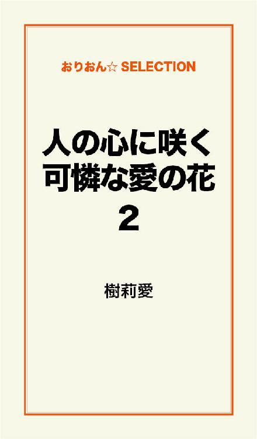

| 人の心に咲く可憐な愛の花 完全版 | |
| 樹莉愛 | |
この本は横書きでレイアウトされています。
また、ご覧になる機種により、表示の差が認められることがあります。
時代は変わっても
変わらない物が
ただひとつだけある。
決して変わってはいけないもの。
それは無償の愛だ。
私達人間は、愛という塊で出来ている。
小さな愛という塊で......。
たとえもし君が......その愛を貰うことなく生まれてきたとしても......。
何も恐れることなんてない。
引け目を感じることもない。
また別の小さな愛という塊を貰えばいい。
そしてまた一つ大人になっていけばいい。
ただそれだけのこと......。
決して君は......
望まれない子ではないのだから。
君はこの世に必要だから愛を持って生れてきたんだよ。
大丈夫......。
君を必要としている人は、きっとこの世のどこかに必ずいる......。
それを忘れないで......。
この世の中には
愛を知らない人がいる。
愛し方を知らない人がいる。
愛され方を知らない人がいる。
愛を恐れる人がいる。
愛し愛されることに憶病になる人がいる。
そして
愛をどこかに忘れてきた人がいる。
そんな全ての人達へ
この愛が届きますように。
カボチャの馬車。
ガラスの靴。
キレイなドレス。
そんなおとぎ話の世界で生きているシンデレラ。
美愛ちゃん、美愛ちゃん
美優ね......
おっきくなったらお姫様になりたいの。
可愛い可愛いお姫様になるんだぁ。
幸せの魔法使って......。
美優、絶対幸せになるんだもん。
だから美愛ちゃん一緒に
幸せになろうね。
だって美愛ちゃん
意地悪なお姉ちゃんじゃないもん。
どんなに苦労したって最後は幸せになるんだもん。
だからいい子にしてなきゃダメだね。
王子様が迎えに来てくれるんだから。
可愛いドレス着て
ガラスの靴はいて
頭にはキラキラのフワフワのティアラをのせて
真っ白いお城に住んで
みんなに愛される女の子になるの。
この世に魔法なんてない。
あるとすれば自分の力で自分自身を変えていく力。
この世に迎えに来てくれる王子様なんていない。
いるとすれば自分の手で幸せを導き王子様を手に入れた数知れない女性。
そう待っているだけで
努力のしないシンデレラでは幸せは手に入らない。
一冊の古びた本。
姉と一緒に夢見た、遠い幼い日の記憶。
いつまでも いつまでも
夢物語が聞こえていた。
あの本を手にしたとき、
私は本当にお姫様になれるんだと、信じていた。
自分を信じて生きるということ
その道を教えてくれたのは、出逢った全ての人達でした。
永遠に続くこの想い。
私に愛ある場所を与えてくれたのは、あなたでした。
自信がなくて、どうしようもなかった。
生きている意味さえ分からなかった。
今、死んでもいい。
そう思って、生きていた。
でも本当は......
誰かに必要とされ愛し愛されたかった。
ずっと幸せになりたいと思っていた。
気付かないふりをして、
感情を表に出さず器用に生きていた。
ただ自分を必死に守ることに精一杯だった。
傷付くことに恐れ、強がって大人ぶっていた。
でもまだ私は、この世の中の歩く道すら知らない14才だった。
今、私は全てを手に入れている。
私にはガラスの靴は似合わない。
私にはカボチャの馬車は必要ない。
だって私は、おとぎ話のお姫様ではないのだから。
それよりももっと......もっと大切な一生の大切な宝を手に入れた。
あの小さい頃に憧れたシンデレラ姫のように
どうしようもなく生きていたあの頃。
居場所がなくて、夜の街に愛を求めていた。
ただ制服着ているだけで、何でも出来る気がしていた。
ただ夜の街の仲間と一緒に居るだけで強くなれた気がした。
くだらないナンパについて行き、その場だけの恋愛を楽しんでいた。
でも結局、あたしは一人でいつも冷めた目をしていた。
あの頃の私に信用出来る人間なんて誰一人いなかった。
ほっといてほしかった。
誰もあたしに関わらないでほしかった。
そう思っていたのに......。
なぜだろう......。
いつも一人になると誰も居ない暗い部屋で涙を流していた。
大人達は私達のような人種を見て見ぬふりをし、軽蔑していた。
本当は、寂しくて寂しくてしょうがなかった。
そんな弱い気持ちに押しつぶされそうで、
今にも壊れてしまいそうで、
ボロボロになっていた。
本当は......
本当はね、誰かに手を差し伸べてほしかったの。
◎第一話 ただ愛されたかった
私の名前は美優。
両親が付けたその名前には、これから育っていく私達２人姉妹への愛が込められていた。
５才離れた姉には、
美しく愛される子になりますように 美愛（みあ）。
妹の私には、
美しく優しい子になりますように 美優（みゆ）と名付けられた。
愛ちゃん、優ちゃん。
そう呼ばれていた。
私達姉妹は、容姿も性格も、全てが正反対だった。
姉は、幼い頃から大人しくて全てが整った綺麗な顔立ちの頭のいい子だった。
私はと言えば、お転婆で男の子達とばかり遊んでいるような子だった。
いつも母から、
「少しは女の子らしくなさい」
と怒られてばかりだった。
とても綺麗な顔とは言えず、どちらかと言うと自分で言うのも何だけど......可愛らしい顔立ちだった。
中学生になった頃からいつも思うことがあった。
高校生の姉は誰からも好かれていて優等生だということ。
近所の評判も良く親からも信頼されているということ。
どうして私とは違うんだろうと比べる時もあったけど、私は優しくて綺麗な姉が本当に大好きだった。
それでも時々私は、不満をもらすことがあった。
いつも姉の部屋に遊びに行ってはベットの上に座り、勉強している姉に向かって、
「私もお姉ちゃんみたいになりたかった」
と俯きながら小さな声で呟き姉をひがんでいた。
そうすると姉は少し私の方を見てフゥ～とため息をつく。
そして手を休めてトレードマークのメガネを外し机の上に置く。
そのあと私の方を振り返ってフフッと笑い目を細めてこう言ってくれた。
「また美優の無い物ねだりが始まった」
「だってぇ～」
私は顔が少し赤くなり、自分が恥ずかしくなってプク～っと頬を膨らませた。
私が拗ねていると決まって姉はこう答えた。
「私は、美優になりたかったな。
可愛くて少しおっちょこちょい......。
でも本当は、人の顔色ばかり伺っている。
誰よりも繊細で人の気持ちが分かる心の優しい美優になりたかったな」
そして最後に必ずこの言葉で私を勇気づけてくれる。
「私と美優は違うの。
同じじゃないんだよ......。
この世に同じ人間は、いちゃいけないの。
だから比較なんかしないで......。
美優は美優らしく自信を持って生きればいいんだよ。
私は美優のこと本当に大好きだよ。
優ちゃんが妹で良かったな♪」
と最後に声を高くして
オチャラカしながら言い髪の毛がクチャクチャになるまで頭を撫でて、私を抱きしめてくれた。
頭が良く性格もいい。
それでいて、家族思いの優しい姉。
母は、いつも姉と私を比較し、姉ばかり褒めていた。
私の顔を見ては
「どうして同じ姉妹なのに、こうも違うんだろ」
と言っていた。
私は、母に褒めてもらいたかった。
姉と比較なんかしないで私をみてほしかった。
私がテストでいい点を取っても......
私が生徒会長になっても......
母は、あたしを褒めてはくれなかった。
それも全て、
「お姉ちゃんの妹なら当たり前でしょ」
と鼻で笑うようにかわされていた。
どうすれば私を認めてくれるんだろう......。
どうすればお姉ちゃんと同じお母さんの自慢の娘になれるんだろう......。
そんなことをずっと思っていた。
父は、私達が小さい頃に海外へ単身赴任となって今はニューヨーク支社の支店長を務めている。
私は、父が大好きだった。
母とは違い、姉も妹の私も同じように可愛がってくれた。
うちの近くには、大きな公園があった。
高台にあるその場所から見下ろす夜の街の景色は、とても綺麗でいつかあんな場所に行ってみたいと思うようになっていた。
幼かった私達は、父が仕事の休みの日に家族４人で手を繋ぎそこに遊びに行っていた。
その頃の母は、とても優しかった。
それが本当の姿だと知っていたのに......。
そして父は、その景色が見える場所に座り、私達を両側に座らせ口癖のように言っていた。
「愛ちゃん、優ちゃん。
パパは、お前達二人が生まれてきてくれて本当に感謝しているよ。
いい？ 良く聞いていてね。
これからの人生......愛ちゃんには愛ちゃんの、優ちゃんには優ちゃんの人生が待っているんだよ。
だからいつでも自信を持って出逢う全ての人達に感謝をし、そして何よりも、いつまでも姉妹仲良く生きていってほしい」
まだ幼かった私には、分かったような、分からないようなそんな感じで聞いていた。
そうすると父は、私が不思議な顔をしてるのに気づいたのか、笑って頭をなでながら、
「優ちゃんには、まだ分かんないかな。
でもきっと......美優にも分かる時がくる。
ほんの少しでいいからパパが言ったこと頭の片隅にでもいいから覚えておいてほしい」
「あ......た......まのか......た......すみ？」
私が首を傾げ聞き返すと姉が、
「優ちゃんの、ここの中の少しの部分ってことだよ」
と笑顔で優しく頭をポンポンと叩きながら教えてくれた。
毎週行っていたその公園にも、父が海外へ行ってしまってからは、家族３人で行くことは２度となかった。
ただ父は、忙しい仕事の合間をぬって、毎週必ず電話をかけてくれた。
娘の一番大切な時期に一緒にいてあげられないことが、とても辛い......。
だから、せめて声だけでも聞いていたい。
そんな思いがあったんだと姉から聞いた。
私は、父との会話が大好きだった。
今週は、何があっただとか......。
学校での出来事を話す......。
普通なら母親に話すことを遠い国にいる父に電話を通して話していた。
父は、いつも温かくそれに答えてくれた。
私は、父の笑顔が浮かんでくるほど父の顔を忘れたことは１度もなかった。
そして何より嬉しかったのは、姉と私の年１回だけの大切な日に届く父からのHappy Birthday!!
贈られてくる物は、大きな花束と心のこもったお手紙。
どんな高価な物よりも姉と私にとっては、一番の宝物になっていった。
それは、姉が高校生になり私が中学生になっても変わらなかった。
だけど、そんな大好きな父にも１つだけどうしても言えないことがあった。
母のこと......。
母は、私のことが嫌いなんじゃないかということ......。
聞きたかった。
でも聞けなかった......。
父は、母のことを私達と同じように愛していたから。
「男は、愛した女を......。
支えてくれた女を......。
一生かけて守っていかなければいけない」
そんな考えの人だった。
だから......どうしても言えなかった。
「ママには、いつでも感謝をしなさい」
そう言われ続けていたから。
でも私は、感謝どころか、母の顔色ばかり伺って生きていた。
そんな悲しいこと......
そんな恥ずかしいこと......
父には知られたくなくて、いつも１人自分のベットの上で窓から夜の街を見ていた。
......あそこには、私と同じ環境の人がいるんだろうか...？
私と同じ気持ちを持った人達が......愛に飢えた人達が......彷徨っているんだろうか......？
幼い頃、綺麗だと思ったその場所は私には、とても綺麗とは思えず、どこか歪んだ世界に見えた。
それとも私の心が、もうすでに歪んでいたのかな。
父がこの家から居なくなってから、
家族で笑い合うことも、母と姉との会話に入っていくことも、出来なくなっていった。
この家には、私の居場所がない......。
そう思い始めていた。
そんな頃、姉が進学のため東京に行くことが決まった。
母は、今までに見たことのないような顔で泣いて喜んでいた。
本当に自慢の娘だと......。
でも私は、どこか冷めた目をして見ていた。
姉は大好きだったけれど、母のその態度を見るたびに、姉が嫌いになってしまうんじゃないかと怖かった。
姉が東京に発つ前日めずらしく私の部屋に来て、いつも私が姉の部屋でするのと同じように座った。
そして、
「美優も座って」
とベットをポンポンと叩いた。
私は何も言わず、姉の横に腰を落とした。
「私、明日この家を出て行くから......」
姉は私の目を見て話しだした。
「美優？ あのね......。
美優にね、ずっと言えなかったことがあるの。
......私、知ってたよ、あなたが、辛い思いをしていたこと......」
私は、びっくりして目を大きく見開いた。
姉は涙ぐんでいた......。
「お母さんはね......美優が本当は大好きなんだよ。
私と同じで、あなたのことが可愛くてしょうがないの」
私は耳を疑った。
お母さんが私のこと......好き？
そんなこと......あるわけない
「そんなわけないじゃん......。
お母さんは、美愛ちゃんだけいればいいんだよっ......
私なんか......私なんか居ても居なくても同じなんだよ」
そう夢中で答えるのに精一杯だった。
「美優......そんなことない。そんな悲しいこと言わないで。
もし......もしね......あなたが居なくなってしまったら一番悲しむのは私でもお父さんでもなく、お母さんなんだよ......」
「.......美愛ちゃん......な、何言ってるの？ そんなっ......」
姉は私の言葉を遮って言った。
「自分がお腹痛めて生んだ子なんだから！ 可愛くないわけがない......。
お母さんはね、どう接していいのか分からないのよ。
あなたが大事だから、自分のように、なってほしくないから......」
自分のようになってほしくない？
「......意味......分かんないんだけ......ど......」
「美優が、もう少し......もう少しだけ大人になったら分かる時がきっとくると思う」
「今じゃダメなの？ 今じゃ分かんないの？
私、もう13才だよ！ 分かる時って......いつ？
18にならなきゃ......分かんないのッ？ ハァ......ハァ」
私の頭の中は混乱でグチャグチヤで顔は見られたもんじゃないほど酷くて......
初めて姉に向かって泣き叫び姉の胸に顔をうずめた。
今まで張っていた心の中の叫びが全て出てしまった。
姉にとって、いい妹であった私という人間が限界にきていたのだ。
何分たったのだろうか？
ずっと私の背中を叩きながら、さすっていてくれた姉が口を開いた。
「やっと本当の美優に出逢えた」
私は、その言葉に驚いて顔をあげた。
「クスッ......酷い顔」
私は、恥ずかしくなって、また顔を隠そうとした。
でも姉の真剣な目から顔を背けることが出来なかった。
「美優？ 聞いて？ 美優は、いい子すぎるのよ。
もっと今みたいに、お母さんにぶつかっていけばいいの。
言わなければ何も伝わらない......。
相手も何も分からない。
相手を思うことは、とても大事よ。
美優のそうゆう優しいとこ大好きよ。
でもね......その優しさが時に仇となるの。
場合によっては、残酷さも生み出す。
これは、お母さんとの関係だけを言っているんじゃなくて、あなたがこれから生きていく中で、とても大切なことなのよ。
意味のない優しさは、その人を苦しめてしまう......。
その人を傷つけてしまうものなの」
私は、姉の話をひたすら無言で聞いていた。
「あなたが、お母さんにも私にも気を使って、そしてお父さんにも相談できなかったこと......少なくとも私もお父さんも気付いていた。
それでもあなたの口から聞きたかった......。
あなたのその優しさが、逆にお父さんと私を信用していないのだと落ち込ませていたの......」
「そんなっ......」
「美優？ あなたの気持ちは、痛いほど私達には伝わってきた。
それが見てられないほど分かっていた。
それが、あなたの優しさだと言うことも......。
でも、何もしてあげられない私の方が酷いのかもしれないね......」
「そんなことない！ 美愛ちゃんは、悪くない」
私は、慌てて首をふり言った。
「ありがとう。こんな風にならなきゃ伝わらないなんて......」
綺麗な姉からは綺麗な涙が流れていた。
「もっと早く私が言っていれば......ごめんね。
もう今からじゃ一緒に居て何もしてあげられないけど、でも......これだけは覚えておいて！ 自分を殺さず、本当のことを本当の思いを相手に伝えるの。
そうすれば、いつか分かってくれる時が必ず来る」
「そんな日が来るかな......。ヘヘッ......来たらいいな......」
「絶対来る！」
「美愛ちゃん......」
「だからね......お願いがあるの。お母さんを憎まないであげて。
あの人はただ、美優と同じで生き方が下手なのよ。
でもね、ちゃんと優しい心を持っている人なの。
信じてみて......。お母さんをそして美優という１人の人間を......愛してあげて」
「愛......す......る？」
「そう。昔、お父さんが教えてくれたみたいに。
そして、誰にでも愛されるように強くなりなさい」
その日の夜、私は姉と一緒のベットで過ごした。
私は、久しぶりに家族という温かい物を知った気がした。
もう一度だけ自分を......
そして母を......信じてみようと思った。
次の日、姉は行ってしまった。
小指を立てて私の耳に口を近づけ囁くように、
「約束よ！ 自分を信じなさい」
という言葉を残して。
私は、姉も居なくなってしまったことで、これから先、母とどう過ごせばいいのか......。
昨日あれだけ姉に教えられたのに、どう接して行けばいいのか分からなかった。
というか、母と顔を合わすのが怖くて緊張していた。
また自分は、冷めた顔をしてしまうんじゃないか......。
また母から冷たい言葉を言われるんじゃないか......。
そんな考えだけが頭に浮かんでいた。
そんなことを考えていたら、姉が発った次の日に、つい家に帰るのが遅くなってしまった。
どうせ、いつものように母は心配などしていないと思いながら玄関を開けると、母は私をずっと待っていたのか、
「どうして？ ......どうして!! いつもお母さんを困らせるのぉ......？
どうして心配させるようなことをするの！
どうして、あなたは......お姉ちゃんとは違うの」
と泣きながら私に言った。
私は、何も言えなかった。
確かに何も連絡を入れず、遊んでいたのは悪いと思ってたから......。
「どうして何も言わないの？ 普通こういう時は、「ごめんなさい」と謝るもんでしょ！
ほんとにっ......お姉ちゃんなら、お姉ちゃんならこんなこと言わなくても分かるのに......」
母は、そう言い奥の部屋に入って行ってしまった。
私は、正直嬉しかった。
怒られたはずなのに、なぜか嬉しかった。
母が、玄関で待っていてくれたこと。
姉と比較されたのだけれど、私を見てくれたこと。
気にかけてくれたこと。
心が緊張から解けた気がした。
私は、母の気持ちに答えたくて、次の日は真っ直ぐに家へと急いだ。
でも、台所の机の上には、１枚の置き手紙が置いてあった
「美優へ
お母さんはまた、働きに出ることになりました。
あなたも中学生だし、もう１人でも大丈夫でしょ？
お母さんは、あなた達が生まれる前にＴ病院の医者として働いていたの。
その病院から、どうしても、お母さんにまた戻って来てほしい。
そう言われていたの。
だから、お姉ちゃんももう１人立ちしたし、あなたも中学生になったことだから、もう１度現場へ戻ることに決めました。
お姉ちゃんには、美優の傍に居てほしいと反対されたのだけれど、美優は１人でも大丈夫よね？
ごめんね、勝手に決めて。
今日から働きに出ることになったので、ご飯作っておきました。
温めて食べてください。
それから、ちゃんと学校へは行くのよ。
あまり夜は出歩かないで、ちゃんと勉強をして、あなたの人生を歩きなさい」
そう書いてあった。
昔、父と出逢う前、母は優秀な医者だったと聞いたことがあった。
でも父との約束で、
「子供達が大きくなるまで一緒にいること」
そう約束して仕事を一時引退していることを聞いた。
でも、何で......？
私、まだ、ついこの間まで小学生だったのに......。
やっと、お母さんと美愛ちゃんみたいに、いろいろ話せると思っていたのに......。
その手紙をよく読んでいれば、母も私と同じように私との接し方に戸惑っていたということが分かったはずなのに、この頃の私には、母を憎むことしか出来なくなっていた。
来る日も来る日も早く家に帰って母を待っていたのに、
母が早く帰ってくることはなかった。
私は次第に、誰も居ない暗い家に帰るのが嫌になって行った。
姉に言われた想いも、頭の片隅にはあった。
けどいつの間にか、どんなに頑張っても......。
どんなにいい子にしていても......。
母は私を見ていてはくれない......。
そんな思いが心に溢れていた。
美愛ちゃん、やっぱりお母さんは、私のこと嫌いなんだよ。
私は、美愛ちゃんみたいに、優等生じゃないから。
私は、美愛ちゃんみたいに、愛される子じゃないから。
私、美愛ちゃんみたいに、お母さんの自慢になりたかった......。
私は、 美しく愛される子美愛に......なりた......かった。
そんな思いを抱えて14になった頃。
私は学校へも行かず、悪い仲間と遊ぶようになっていた。
上辺だけの友情......。
その場だけの恋愛......。
初めてのセックスは、大好きな人と......。
そんな可愛いらしい夢はあったけど、現実は......
ナンパで知り合った男。
まぁいいか、と。
とてもあっけなかった。
抱かれていれば、寂しい気持ちなんて吹き飛んで行ったから。
誰１人信じてはいなかったけど、楽しければそれだけで良かった。
私と似たような奴らが彷徨っている。
この世界は、切なかったけれど、私にはとても居心地が良かった。
顔色ばかり伺っていた、あの窮屈な生活から想像もつかないほどに......。
誰も居ない......。
あの家に帰る孤独と闘っていた頃とは違って、私の周りには必ず誰かが傍にいた。
だから、寂しいなんて思ったことは１度もなかった。
私の居場所が見つかったと思った。
夜の街は、昼間とは違う顔を覗かせる。
煌びやかなネオン。
女に飢えた男達が、いいカモを探しては、ホテル街へと消えて行った。
私の周りには、売りをやっている奴もたくさん居た。
誰が何をやろうと私には関係なかった。
そんなことに興味は、なかったから。
金なんて、別に欲しくなかったから。
だいたい私の体に金払うバカな男が居るの？
居るわけがない......。
だったら金なんていらないから。
だから、お願いだから......一晩だけでいいから私と一緒に居て......。
朝になったら隣に居なくてもいいから......。
夜の間は、私の隣に居て。
愛を求めて顔も覚えてない奴と寝て......。
その夢が覚めたとしても私は、平気だから。
酒もタバコも夜の街での遊び方も、この頃に覚えた。
毎日がパラダイスで、この街では上手く生きれば全て自分の思い通りの楽園だった。
私は、生まれ持ったこの顔と性格から男が途切れることは、なかった。
年上の女の人達からは、可愛がられていた。
そんな私の溜まり場は、決まって会員制のクラブだった。
たまたま帰る場所もなくフラフラしていた私を拾ってくれたのが、ここの店長のケイさんだった。
運が良かったのか、普通だったら入れない、このクラブに出入り出来るようになった。
その頃、ケイさんはよく言っていた。
カウンタ－に座り
「お前はほんと、運がいいよ。俺に拾われたんだからなぁ」
そう笑ってテーブルに肘をついて私を見るのが癖だった。
「もし、ケイさんに拾われてなかったら、私はどうなってたの？」
そう聞き返すと、ケイさんは目を細め、外を指差し、
「見てみ？ もしお前が俺に拾われてなかったら、あぁなってたよ」
私は、振り返って外を見た。
そして今まで気付かなかった光景を目にした。
そこには、ほんの少しまでの私と同じように......。
帰る場所がなく愛に飢えた女の子達が、自分を買ってと言わんばかりに金で男達に拾われて行った。
そして、クスリに手を出した奴らがウジャウジャと溢れていた。
私は、ゾッとした。
もしケイさんに拾われてなければ、私もあんな風になっていたんだろうか......。
幼い頃見た景色は、少し大人になった私が見たように、やっぱり綺麗なんてものじゃなくて、汚くて歪んでいて、醜い世界だった。
「お前を拾ったのは、偶然なんかじゃねぇよ。前に一度だけ見かけたことがあった......。
すっげぇ可愛いじゃん！って思った。
綺麗な目してたから。
でもお前......俺のこと、その目で睨みやがった。
何て生意気な奴だって思ったよ。
でも、綺麗すぎて......声かけることが出来なかった。
ただ次見つけた時は、絶対連れて帰る!! そう決めてたんだよ」
とケイさんは、笑って言った。
「何で？」
私が聞き返すとケイさんは、タバコを吸い出し煙を吐いたあと、
「だってさお前......隣でお前口説いてた男、可哀想だったべ？
誰かと一緒に居ても、目が笑ってねぇんだよ。
綺麗な目してんだけど、可愛い顔してんだけど、心が死んでんだよ。何か冷めた感じでさ......。
そんな細い体で、たった１人生きてくのか......。
そんなボロボロな体でどこに歩いて行くのか......。
って思ったら、ほっとけなかったんだよ......。で、声かけたわけ」
そう言い、席を立ちカウンタ－に入り私にドリンクを作り出してくれたあと、
「年、聞いてビビったけど......。
だってお前よぉ、14で人生悟ったって顔してんだもんな」
俺よりも５個下で、俺よりも冷めてたと笑っていた。
そのクラブは、ケイさんの昔からの友達や仲間だって人達の溜まり場にもなっていた。
私もケイさんの知り合いならって、喜んで受け入れてもらった。
いつの間にか、みんなが顔見知りになっていた。
そこには、中学で同じクラスの慎二もいた。
私は中学に通っていた頃は優等生だったから、慎二と一度も喋ったことはなかった。
横着で有名だったけど、どこか憎めないとこがあって、教師からは可愛がられていたので知っていた。
遊び人だって聞いていたし......。
私は興味なかったけど、背が高くてカッコイイからと、女の子達にも人気があった。
最初は、お互い何も話さなかったけど、次第に仲良くなって行った。
慎ちゃんは、見かけによらず優しくていつもクラブに行くと、
「美優元気か？」
と声をかけてくれた。
タメっていうより、妹を心配するお兄ちゃんみたいな人だった。
慎ちゃんには、憧れの人がいるらしく私も見れば絶対、惚れる!!
そう言っていた人がいた。
まだ逢ったことはないけれど、どんな人か見てみたい......。
ずっとそう思っていた。
私は、ケイさんと出逢えたこと、運命だったのかなと感謝した。
たくさんの人達に囲まれて、毎日が本当に楽しくて、このまま時間が止まってしまえばいい......。
いつも思っていた。
私が、父や姉以外にした初めての感謝だったと思う。
ケイさんは、同じ年の人と早くに結婚して、一児の優しいパパだった。
ケイさんの奥さんの美弥さんは、とても大人しい人だったけれど、昔の写真を見る限り、荒れてた時代もあったんだろうなぁと思った。
美弥さんは、私が遊びに行くと笑顔で迎えてくれた。
「あなたの帰る場所は、ここよ」
と、いつも言って面倒を見てくれた。
何でここまでしてくれるのか分からなくて聞いたことがあった。
「私、邪魔じゃない......ですか？」
美弥さんは、優しく笑って言った。
「美優は、昔の私を見てる気がする......。だからほっとけない」
美弥さんは、私を可愛がってくれていた。
娘の澪ちゃんも私になついてくれて、子供が大好きな私は、本当の妹のように可愛がっていた。
ケイさんも美弥さんも、私にとっては家族以上だった。
私のことが、ほっとけなくて帰る場所を与えてくれた。
でもどこに居たのか......。
誰と居たのか......。
何も聞かない。
興味がないという感じではなく、私のことを伺っている。
２人とも、そんな目をしていた。
分かってる......。
温かい目で、きっと私が心を開くのを待っているんだろう。
お願いします......。
もう少しだけ私に時間をくれませんか......？
人なんて信じられない......。
私はいつだって、そう思って、１人で生きてきた。
だから、顔も知らない誰かが夜だけは一緒に居てくれる。
そんな居場所を手放すことが出来なかった。
仲間達の噂で、
「美優は、簡単にやらせてくれる女」
そう有名になっていた。
私は別にそれで良かった。
そしたら、いっぱい愛をもらえるんでしょ？
だったらそれでいい。
そう思っていたのに......。
どうして、あなた達が泣いてるの......？
どうして、あなたが私を叩くの......？
親さえ叩いてくれたことがないのに......。
どうして、あなたが傷付いてるの？
ねぇ、自分を大切にするって、どういう意味？
セックスが、そんなにいけないことなの？
セックスは、お互いを受け入れること？
愛を深め、幸せを噛み締める行為？
そんなのに、意味があるの......？
私には分からない。
...............。
......違う......。
本当は、そんな当たり前のこと分かってた。
セックスは、愛し愛されている人とするからこそ意味があるってことぐらい。
でも、分からないフリをしていた。
そうすれば傷付かないですむから。
１人涙を流す夜はもう来ないから。
強がっているけれど、本当は誰よりも、脆くて弱い。
そんな、もう１人の自分が顔を出す。
だから私は、あなた達の優しさが痛いほど分かるのです。
あなたの言葉が胸にしみるのです。
こんな私でも、まだあなた達は受け入れてくれるのですか？
私は、あなたを信じてもいいのですか？
そんな時、クラブに私の知らない顔が入ってきた。
どうやら、その人はケイさんの昔からの親友で、慎ちゃんの憧れの人、
「桐生貴也」
という男。
自分では夜の街では、鷹のように歩いているから......
「鷹夜」
と名前を変えていた。
ケイさんは、鷹と呼んでいた。
「ケイ。今日、慎は？」
鷹という男は、辺りを見回してケイさんに訪ねた。
「あいつ、最近来てねぇんだよ。ここ１週間ぐらい......。美優、何か知ってる？」
私は、慎ちゃんを昨日の夜見かけたけど、いつも見る慎ちゃんとは顔が違ってたから、声をかけられなかったと答えた。
すると横に居た鷹が急に、
「こいつケイの何？」
私の顔を覗き込みながらケイさんに聞いていた。
ケイさんは、慌ててカウンタ－から出てきて私を抱きしめ言った。
「こいつ俺んだから！ お前、手出すなよ。
その辺の女と同じじゃねぇんだから......。
お前の周りにいる女と一緒にすんじゃねぇよ」
「フッ......分かったよ......。
俺もこんなお子ちゃまに手出すほど飢えてねぇよ」
そう笑いながら言いタバコをくわえ手を挙げ私の頭をポンと叩き夜の街に消えて行った。
まだまだ私には、知らないことがたくさんある。
その時は、気付かなかった。
クラブに鷹が入って来た時、そこに居る誰もが一目置いいたことに......。
鷹がカリスマだということに......。
この街が鷹だということに......。
鷹は、背が高く整った顔立ちで、時々とてつもなく目つきがするどくなる。
髪の毛は、黒髪に白かシルバーのメッシュが入っていて、前髪の一部分だけにゴールドの細いメッシュが入っている。
独特の雰囲気を持っていて、たった一瞬目が合っただけなのに、鷹の目が忘れられなかった。
まだ成人していないはずなのに、19才とは思えず何もかもが完璧で大人びていた。
私はなぜかまた、鷹という男に出逢う気がしていた。
分からないけど、そんな気がしていた。
「ケイさん、今の人って誰......」
私の声を遮って、
「あいつさ、俺のガキの頃からの悪友。ごめんな......びっくりしただろ？
悪い奴じゃねぇんだよ。でも、あんま関わんな！」
「何で？」
「だって......俺の美優が持っていかれそうで......」
と拗ねるようにケイさんは奥に行ってしまった。
「ハハッ......ケイさん可愛い」
「うるせぇ。んなこと言ってると、お前やっちゃうよ」
ケイさんは、顔を除かせて、バーンと手をピストルのようにして私を打ってきた。
「キャハハッ」
ケイさんはまた、中へ入って行き、仕事の準備をしていた。
たった数分逢っただけで、ここまで人の心を惹きつけられるあの人に、また逢いたいと願っていた。
私は、たまたま寄ったコンビ二で不思議な出来事にあった。
たくさんの荷物を抱えたおばあちゃん。
助けてあげたいけれど、私１人では無理。
そんなことを考えていたら、向こうからおばあちゃんの横に止めてある車に向かって歩いてくる、いかにも遊んでそうな男の集団が歩いてきた。
ヤバイ!!!
そう思ったその時、
「おばあちゃん、どこ行くの？ 俺、手伝ってあげるよ。
女性が、こんな荷物持ったらいけないよ。これは、男の仕事だから」
その中でも１番目立つ男が優しい笑顔でかがんで、おばあちゃんの荷物を持ち、おばあちゃんの手を引っ張って歩こうとしていた。
「お前ら先行っとけ......。俺、後から行くわ」
そう言いその人は、おばあちゃんに笑いかけ、手を繋ぎ歩いて行った。
何も出来なかった私......。
ただ、ぼぉっとその光景を見ていることしか出来なかった。
私、きっと......あの人のこと好きになる。
何分経ったんだろう......。
その人が、今度は１人で戻ってきた。
コンビニに入ろうと私の横を通り過ぎるその時に、チラッと私を見てきた。
あの鋭い目つきで......。
......あれ......この人......。
その人は えっ？ という顔を一瞬し、立ち止まり私の顔をじっと見てきた。
「お前!! ケイんとこの......猫だ」
「......はっ？ ネコ？？」
いきなりその人は、満面の笑みで私に言ってきた。
これが、鷹との２度目の出逢いだった。
「お前......何かいるの？」
私は、無言でモンブランを指差した。
「じゃあ、俺これ買うわ」
「えっ？」
私はそこに立ち尽くし、呆気に取られ鷹の背を目で追った。
鷹という男は、振り返り何も言わず私に来なとクィッと首を動かしレジまで持って行った。
私は、ただ付いて行くしか出来なくて鷹の後を追った。
「な～なちゃん！ こんにちは♪」
「あっ鷹くん！ こんにちは♪」
鷹は、レジに居る顔なじみの可愛らしい店員の女の人に声をかけた。
年は、遥かに上に感じた。
「ねぇ......ななちゃん、全然貯まってないね」
鷹は、悲しそうにレジの横の奥に隠れている募金箱を見つめて話しかけていた。
「あぁ......鷹くん達だけだよ、おつりをいつも入れてくれるの。本当にありがとう」
「別に......お礼されるようなことしてねぇよ。だって、人として当たり前のことじゃん？
俺、置いてある場所見ると嬉しくなんのに......」
「今の若い子は、そういうのかっこ悪いって思うんじゃないかな？」
「そんなもんかね......。でもさぁそうゆう問題じゃねぇよ。
大事なのは、心だよ。人にどう思われようが、関係ねぇじゃん？
自分がやりたいんだからさ......」
「そうだね。私もそう思う。
でも今の時代は、鷹くんみたいな子が珍しくなっちゃうんだもんね」
と言いながら、その女の人は、私の方をチラッと見た。
「っていうか......鷹くんいいの？ 待ってるよ可愛い彼女が!!」
その女の人は、ふふっと笑い私を指差した。
「あっやべっ!! 忘れてた。ななちゃん、こいつ......まだ俺の女じゃないよ」
と苦笑いをして鷹は答えていた。
「あらそうなの？ お似合いよ二人共。まだってことは、これから彼女になるってことね」
ちげぇよ......と言いながら、鷹は、その女の人にバイバイをして私を連れ外に出た。
コンビニを出ると鷹は、
「ん」
とモンブランの入った袋を手渡し、コンビニの隅に２人で腰を下ろした。
「食いな」
私は少しためらったけど、鷹の顔があまりにも優しいから、少し顔を下を向けて恥ずかしそうに、それを手に取り、
「ありがとう」
とボソッと言い食べ始めた。
「ハハッ......お前ほんと猫みてぇ。
餌を貰えなかった甘えた猫が、飼い主の顔色伺ってるって感じ？」
何言ってんだこいつ......。
と思ったけど、私は何も言わず食べ続けた。
鷹も何も言わずタバコを吸いながら遠くを見つめていた。
「お前、ケイんとこ長いの？」
急にそんなことを聞いてきた。
私は食べるのをやめ、鷹の顔を見て答えた。
「半年ぐらい」
鷹は、吸っていたタバコを投げ言った。
「お前さぁ......俺んとこ来る気ない？」
私は、鷹を見つめながら固まってしまった。
えっ？ 今なんて？ こいつの猫になれと？
「はっ？ っていうか私、猫じゃないもん」
鷹は、フッと笑って、
「お前......天然？ 俺さぁ、俺ね......初めてお前見た時危ねぇって思った。
こいつに惚れるかもしんねぇって......。
お前、綺麗なんだよ。すっげぇ綺麗なんだよ。
こっちが恥ずかしくなるぐらい、目が綺麗なんだ」
ケイさんと同じことを言い出した。
私は自分でそんなこと思ったこともなかったし、ましてや親からも言われたことなんてなかったから分からなかったけど......。
私が黙っていると鷹は続けた。
「ケイには、もう言ってある。お前に惚れた!!
今度あいつに逢ったら俺もらってくから。
今までとは違ってマジだからって......」
私は不思議に思い聞き返した。
「どうしてケイさんに聞くの？」
「あいつは、お前の保護者だからな。妹みたいに思ってんだよ。
お前のことが可愛くてしょうがない......。
でもそれは、俺とは違って恋愛感情ではなく、家族愛の方だな。
あいつには美弥もいるし」
「家族愛？？」
「そう家族愛......。
あいつ、愛美（まなみ）っていう妹が居たんだよ。
でも、自殺しちまった......。
学校でイジメにあっていたらしい......。
遊び歩いて家に帰ることがほとんどなかったあいつは、そのことに気付かず、あとから愛美の部屋にあった日記を見て知ったんだよ」
私は、何も言えなかった。
「あいつは、愛美のことすっげぇ可愛がってたからな。
よく遊びにも連れて来てたんだけど、愛美が中学にあがった頃から親に、
「愛美は、お前とは違う......２度と家に帰って来るな......」
そう言われたらしい。愛美は、出来が良かったし、あいつんち金持ちだからよ。
世間体が気になったんだろうな......。
ま、でも今は、信じらんねぇほど仲が良い家族だけど......」
「......」
「当時ケイは、気付いてあげられなかったって、初めて俺の前で泣いたんだ。
だからかなぁ......。お前の可愛がりぶりを見て愛美には出来なかったことを、お前に対して愛を注いでやってんだろうなって......。
だからあいつの許可なしに、お前を連れて行くわけには、いかねぇんだよ」
と下を向いて今にも泣きそうな私の顔を覗き込みペロッと舌を出した。
そして私の髪の毛をグシャグシャにしながら頭を撫でて、
「何、泣いてんだよ」
目を細め笑っていた。
「だからお前が嫌でも、俺はお前を連れて行くから。
帰る場所がないお前に拒否権はねぇよ」
そう言い、車の運転席の逆のドアを開き、
「乗りなっ。とりあえずケイんとこ行くから。
......お前、名前何だっけ？」
......あんた名前も知らないで声かけたのか......。
「美しくて優しい女の子、美優だよ」
可愛く言ったらあいつは、噴き出しながら、
「ブッ......ハハッ！ 美しくて優しい子ねぇ......。まぁいいや、美優おいで」
手を出してきたから私は、しぶしぶ立ち上がり手を掴んで車に乗った。
車では、何を話したのか......。
今の状況に頭が真っ白になっていて覚えてないけれど、多分自分の中でテンパっていたんだと思う。
ケイさんのお店に着くと、鷹は私の肩を抱きドアを開けた。
するとケイさんが、こっちを見て走り寄ってきた。
「やっぱり鷹のもんになったか......。
鷹、こいつを泣かすなよ。もし傷付けたら......お前相手でも俺は許さないから」
そう急に真剣な目になって鷹に詰め寄った。
「分かってるよ」
口の右側をクイッとあげ答えた。
そして何秒か睨みあった後、お互いにフッと笑い合い、
「負けたよ......お前には。良かったな美優。
その年で俺らに気に入られたお前は、これから先、最高にいい女になるよ」
そうケイさんは言い、仕事場へと戻って行った。
それから私は、鷹と付き合い出した。
よく考えてみれば、ちゃんと付き合うのは鷹が初めてなのかもしれない。
鷹は、自分の過去を私に全て話してくれた。
自分には、家族が居ないこと......。
親のことは知らなくて、物心ついた頃から施設にいたこと......。
別に寂しいという感情はなかったけど、
普段は事情があり育てられないけど、毎週土曜日だけは親が迎えに来てくれるという友達の嬉しそうな姿を見る時だけは、いつも部屋の隅でその光景を見ていたという。
親というものが、どんなものなのか知らない自分にとって、それは羨ましいという感情よりも、そんなに嬉しいものなのかと不思議に思っていたという。
中学に入ると施設では、自分で学費を払わなければいけないから、年をごまかして、知り合いのクラブでボーイをやりながら、臨時でホストとして働いて学費を稼いでいた。
「俺、その頃から黒服似合ったよ」と、自慢していた。
ケイさんとは、小学校時代からの悪友だって笑っていた。
そしてちゃんと学歴が欲しいということで、今は大学に通っていて、週１でケイさんの店も手伝っていると言っていた。
私は、彼の話を聞いているのが大好きだった。
そして何より、お前も学校をきちんと卒業しろと心配されることが嬉しかった。
私は、彼に言われた通りまた中学に行き出した。
今まで仲の良かった友達は、私を見ると避けるようになり、生徒会長をやっていた頃は可愛がってくれていたはずの担任でさえも、冷たい目で私を見るようになっていた。
それでもいいと思っていた。
何もいらない......。
鷹が、ずっと一緒に居てくれるのなら......。
でもそんな日は、長くは続かなかった......。
薄っぺらい人間関係......。
先が見えず、不安を隠し今だけ楽しければいいと生きていた。
すぐにでも壊れてしまいそうな心......。
まだ若い私達の恋は、すぐにでも崩れ落ちてしまいそうなほど脆くて、不安定な状態だった。
時々......思っていた。
この人とずっと一緒に居るはずなのに、いつか私の前から、居なくなってしまうんじゃないかって......。
幸せなはずなのに......。
心のどこかで、また１人になってしまうような気がしていた。
でも本当に......そんな日が着々と近づいていること、まだ私は知らなかった。
鷹と付き合いだして１年が過ぎた頃......。
いつものように学校から彼と住んでいたアパートに帰ると、いつもと同じ感じなのに、なぜかその日は胸騒ぎがして、ケイさんのお店に顔を出した。
でもケイさんも鷹も居なくて......。
私は何を思ったのか、鷹と偶然再会したあのコンビニに足が向かっていた。
そこには、あのコンビニのあの時と同じあの場所に座ってタバコを吸っている鷹がいた。
嫌な予感がした......。
さよならの予感......。
私に気付いた鷹は、今までにはない様な、優しいんだけど、どこか切ない目で笑って私に、
「こっちに来いよ」
と言った。
私は同じ鷹なのに、何かがいつもの鷹とは違うと感じていた。
私は、鷹の隣に座り彼の横顔を見つめていた。
それに気付いたのか、
「ん？ どうした？？」
「私が、どうしたの？って聞きたいよ。
何か今日の鷹......変だよ。何かあったの？」
その問には答えず、彼は私の手を取り、また前を見てしまった。
私も仕方なく彼が何かを言ってくれるまで、何も言わず前を見ていた。
そして......どのくらいの時間が過ぎたんだろう......。
「美優、お前可愛いなぁ」
私はびっくりして彼の顔を見ると、さっきまでとは違い、とても穏やかで何か踏ん切りがついたような顔をしていた。
「美優......お前とまた逢ったのがこの場所だったよな......フッ」
「鷹......？」
「お前は、バカだし鈍いからなぁ。
俺が居たから気付かなかっただろうけど、周りの奴らはみんな、お前のこと狙ってたんだよ......。
お前さぁ無防備すぎんだよ。
だからさ......頼むから少しは、警戒ってこと覚えろ」
そう言いながらポンポンと頭を叩いてきた。
「何でっ......！ 何で急にそんなこと言うの？
ずっと鷹が一緒に居てくれればいいじゃん。
何でッ......そんなこと言うの？」
私は、頭の中が混乱していた。
「お前強くなれよ。俺が居なくても、生きていけるような女になれ。
ずっと一緒に居てあげられねぇかもしんないから。
お前、綺麗なんだよ。心がすっげぇ綺麗なんだ......
いつも他人のこと冷めた目で見てきただろうけど......。
本当のお前は、誰よりも心が綺麗なんだよ。
お前は、俺みたいな男と一緒に居ちゃいけねぇ。
本当のお前まで腐っちまうからな」
彼は少し寂しそうな顔をしながら言った。
私は意味が分からず、ただただ、聞いてるだけしか出来なかった。
「どっから狂っちまったんだろうな......」
そう遠い目をしながら前を見つめていた。
冷たい風が鷹と私の心を余計に寂しくさせた。
「ケイとの約束守れねぇかもしんねぇから......。
だから１つだけ頼みがあんだ。
お前みたいな奴初めてだよ。お前は、こんなとこに行ちゃいけねぇ。
お前は、自分の道をちゃんと生きろ。
そして......家に帰って家族ときちんと向き合え」
そう初めて私の親のことを言った彼は、急に立ち上がり背を向けたまま、
「美優、愛してるよ」
そう言ったあと、真剣な顔をしながら振り向き、私に近付いてきて力強く抱きしめ私の唇にキスを落とした。
私には、彼が涙を必死にこらえている気がした。
「じゃあな......。これから、ちょっと行くとこあっから。
しばらく帰れないかもしれない......。だからお前は、自分の家に帰れ」
「ちょっ......待ってよッ......。
鷹......どこ...行くの？ おいてかないでよぉ......。
私を......１人に......しないで......。
お願いだから......いつか、迎えに来てくれるんで......しょ？
私......待ってるから......ずっと、待ってるから」
鷹は一度も振り返らず、そして私の前から姿を消した......。
その後、ケイさんから鷹が捕まったと聞いた。
鷹は、ケイさんが一番嫌っていた薬の密売をしていた。
ケイさんは、何となく気付いていたと言う。
鷹もケイさんと同様嫌っていたはずなのに......。
どうして？
鷹が弟のように可愛がっていた慎ちゃんが、仲間からの悪魔の誘いを受け一回だけと手を出したのが始まりらしい。
いつも鷹は言っていた。
どんなにバカやってもいい。
その時を楽しめればいい。
人生は、たった１度だからな......。
でも、俺が居るこの場所で薬だけは、どんなことがあっても手を出すな。
あれは、人を狂わす。
人は弱いからな......。
楽な道を選んでしまう。
そして興味半分で手を出した奴らが、どんな酷い目にあってきたか俺は数え切れねぇくらい見てきた。
その時は、気分が良くなり気持ちいいかもしれない......。
自分は、強くなったってな......。
でもその夢が覚め時、あれは人を地獄へと突き落とす。
そしてまた我慢が出来なくなり、もう一回と次々に破滅の道へ引き連れて行くんだ......。
そして幻覚に陥り、そこに居ない人間にさえ暴言をはく。
次第に自分が分からなくなり、後は死が待ってるだけだ......。
なのに......。
それを一番傍に居て分かっていた慎ちゃんが、仲間からの誘いで手を出してしまった。
鷹は助けるために、慎ちゃんが居るという建物に行った。
でももうその時には手がつけられないほど暴れ、鷹の目の前でビルの屋上から飛び降りた。
即死だった。
鷹は１週間何も口に出来ず、気が狂ったように暴れた。
ケイさんは、そんな鷹を心配して毎日アパートに様子を見に行っていた。
たまたま留守だったその時に、部屋でブツを見つけたらしい......。
ケイさんは、鷹の口から聞くまではと......。
鷹が捕まったその日に、殴ってでも話を聞き出すはずだった。
でも......。
「あいつに話を聞く前に......救ってやる前に行っちまった」
ケイさんは、鷹の部屋で目を閉じ一粒の涙を流しこう言った。
鷹は、この街に復讐をしていたのかもしれねぇ......。
自分は決して手を出さず慎を死に追いやった奴らに......。
何もかも狂っちまったこの世の中に......。
あいつ自身がケリをつけたのかもしれない。
何も知らない警察は言っていた。
自分だけ甘い密を吸うように器用に生きてやがる、と。
鷹は出逢った頃、こんなことを言っていた。
美優、お前、麻薬の怖さ知ってるか？
お前は、知らねぇだろうなぁ。
あれは、人の弱さに付け込む悪魔だよ。
一度その悪魔に気に入られちまったら二度と生きては帰れねぇんだ。
ほんとに強い人間じゃねぇとな。
でもこの世の中に、あんな物見せられて手出さねぇほど強い人間なんていねぇけど......。
あいつは、一度っきりじゃ終わらせてくれねぇ。
その気持ち良さから、使い続けないといけねぇ体にしてくんだ。
そして、あざ笑うかのようにもてあそび、人をボロボロにして行く。
気付いた時には、取り返しのつかねぇとこまで落ちてんだ。
一生死ぬまで、その傷は消えねぇ......。
なかったことにすることも出来ねぇ......。
時間を掛けて立ち直ることは出来ても、時間を戻すことは出来ねぇんだ。
美優？
どんなに辛くても苦しくても......。
たとえ魔が差したとしても......。
遊び半分で絶対手出したりすんなよ。
大切な奴がボロボロになっていく姿、もう見たくねぇんだ。
あんな物が簡単に手に入っちまう。
そんなこと、絶対あっちゃいけねぇんだよ。
私はいつも一緒に居たのに、鷹の異変に気付かなかった。
私はいつも一緒に居たのに、鷹の苦しみを分かってあげられなかった。
ごめんね......私はあなたにいろんなことを教えてもらったのに......。
ごめんね......私はあなたにたくさんの愛をもらったのに......。
ごめんなさい......。
あなたを支えてあげられる力が私にはなかった......。
こんな私をいつも温かく見守ってくれて本当にありがとう。
私は、あなたに何も出来なかった。
最後まで、あなたに甘えてばかりだった。
あなたはいつだって、私のこと考えてくれていた。
私は、私が思っていた以上に、あなたに愛されていた。
そんなあなたに、私は、何が出来るんだろう。
俺の名前は、桐生貴也。
俺には、両親が居ない。
物心ついた頃から施設に居た。
この名前も施設の人がつけてくれた。
ちなみに俺の誕生日は、８月１日。
真夏のくそ暑い日差しの中、その日、施設の前に捨てられていたらしい。
でも寂しいと思ったことは、１度もなかった。
ここに居る奴らは、みんな同じような環境の奴らで、いつも一緒に居たから。
そしてこの施設の人達は、俺達を本当の家族のように優しく時に厳しく接してくれていたから。
中学の学費も俺みたいに両親が居ない奴は、施設が負担してくれるようになってたけど、俺は特別扱いが嫌で自分の学費ぐらい自分で稼ごうと決めていた。
ケイとは小学校からの悪友で、あいつの家は超がつくほどの金持ちで、ボンボンのくせに、そんな気配も感じないほど悪ガキだった。
でも、友達思いの優しい奴で、あいつの家族も天涯孤独の俺を自分の子供のように、いつも可愛がって面倒見てくれた。
一時は、ケイも荒れ親と決別した形になっていたけど、今は同居して昔みたいに仲が良い家族に戻ってる。
そのせいか、あいつんちに行くと、おばさんから
「貴ちゃん、悪いことしちゃダメよ！」
と今でも心配してくれている。
あいつとの仲は、この先、きっと一生、切れることはない。
中学の頃、学費を稼ぐためケイの知り合いでホストクラブを経営している人が快く引き受けてくれたおかげで、そこで働かせてもらうことが出来た。
仕事は楽しかった。
最初は客につくことも出来ず、掃除から始まったけれど、次第にちゃんと仕事が出来るようになっていった。
仕事場の人も可愛がってくれて、学校よりも楽しい場所だった。
中学生だと気付かない客の女達が、俺に媚を売って言い寄ってくることも度々あった。
初めて女を抱いたのは、その頃だ。
客に手出してまで上に行きたいという気持ちは全くなかったけど、ただ自分の欲望を満たすだけのために腰を振っていた。
上の人からは、
「あんまムチャすんなよ」
と笑って軽く言われるだけだった。
もう何人の女を抱いてきたか覚えていない。
俺に相手してほしい女達の汚ねぇ争いを何度も見てきた。
でも一度寝た女を客にする気はなかった。
俺に貢ぐためだけに風俗で働いてるバカな女もいた。
ぶっちゃけ俺は、そんなくだらねぇ貢ぎ物に興味がなかった。
たとえそれが、どんなに手が出るほど欲しい物だとても......。
そんな奴らに貰った物なんか欲しいとは思わなかった。
とりあえず、その場の愛想笑いで喜び、ベットの上で感情のない愛を囁いた。
甘い愛撫をし、内心うぜぇと思いながら腰を振り快感を与え続けた。
こんな女達から貰った物は全て、その日にはゴミ箱の中に消えた。
寂しさを埋めるために、俺達に喜んでほしくて貢ぎに来る客......。
時には客相手に疲れてしまった有名な店のナンバー１キャバ孃......。
世間には、いろんな悩みを抱えた女達がいるんだと知った。
中学生ながら、いい経験をさせてもらったと思っている。
中学にあがった頃から、気付き出したことがあった。
小学校とは違い、教師が生徒のためではなく、自分のためだけに働いている、と。
義務教育だから、生徒が何が問題を起こしたら親から責められ教師に責任がいく。
「別に学校に来なくてもいい」
「だから頼むから何も問題を起こさず無事に卒業まで大人しくしていろ」
「あとは、もう関係ない......」
そんな思いを抱えている教師ばかりだった。
それは、教師が自分の立場を守るため......。
自分の受け持った生徒のせいでクビにならないために......。
そんな、いらないものは切り捨てるという教師の集まりで吐き気がするほどだった。
誰も真剣に俺達のことを思ってくれている教師は居なかった。
教師を含めて人を信じられなくなった。
信じられるのは、自分だけ......。
でもその中で本当に心を開けたのは、施設で育ててくれた人達だけだったと思う。
俺は元々、誰かとつるむのが苦手で１人で居ることが多く一匹狼タイプだった。
１人で行動してい方が楽だし、面倒は嫌いだから。
なのに、いつも俺のあとを付いてくる下の奴らが居た。
竜崎慎二......こいつもその１人だった。
いつも俺のあとを付いて来て、うぜぇはずなのに、でも居ないとなぜか心配になる。
これがまた、いざって時に弱い奴で１人じゃ何も出来ねぇ。
だから、こいつに空手を教えてやった。
「貴、お前に空手教えてやるよ。
お前がどんなにかっこ良くても、守りたいものを守る強さがねぇと意味ねぇからな。
それに空手は精神も鍛えられる」
施設に居た３個上の人から、そう言われ空手を教えてもらったことがあったから。
少し自慢になるけど......。
俺はガキの頃から、頭が良く大きくなったら絶対いい男になると言われ続けた。
そして今、連れからも一目おかれるようになった。
それが嬉しいと思ったことはない......。
俺にとって仲間はかけがえのない大切な物だし......。
俺は、そんなたいした人間じゃない......。
あいつらと何も変わらない。
一緒にバカやって......。
それが楽しかった。
それほど悪いことは、特にやってきたとは思っていない。
いつも必ず施設には、帰っていた。
それに迷惑かけたくなかったから......。
でもやっぱり察の世話になることは、何度かあった。
そのたびに呼び出しくらって頭下げてる施設の先生を見ては、もう２度としねぇと何度も同じことをガキのように繰り返していた。
次こそ怒られて見捨てられるかと思っても、あの人達は絶対怒んねぇんだ。
その代わりに躾という教育と叱りという愛は、たくさん貰った。
男の子は、それぐらいがいいと、警察に行った帰りは必ずありきたりだけど、ラーメンを食って帰る。
そこで、いろんな世間話をされる。
世の中は汚い......。
理不尽な扱いをされることもあるだろう......。
でもその世の中で俺達は生きていかなくては、いけない......。
だから上手く生きろとは言わない......。
でもいつでもハートを持って人に接し、笑っていてほしい。
物事をハッキリ言ってしまう俺の性格からして世渡り上手にはなれないかもしれないけど、人を思いやる気持ち、人の傷みを分かってやる気持ちだけは絶対に忘れるな、と......。
何度、先生達には助けられたか分からない。
今もある、あの施設で育った奴らは幸せだと思う。
そしてまた俺は、女にも不自由することはなかった。
いつもの溜まり場に行けば女達が寄ってくる。
絶えず女が切れることはなかった。
でも遊びの女に興味はなかった。
俺にはずっと、好きな人が居たから。
憧れだったのかもしれない......。
その人は、愛華と言って華奢で色白の肌の綺麗な人だった。
名前通り愛らしく華のある人。
でも線が細く病弱な人でもあった。
施設で働いていて俺のことを可愛がってくれた、当時23歳。
10歳年上の人。
その人と一緒に居るだけで、世の中や大人の汚さをかき消せた気がしていた。
俺は、教師が嫌いだった。
でもそんな教師を認めさせたくて、学校にはあまり行かなかったけど、テストの成績だけは、常にトップに立つ。
そう決めていたから、影でいつも勉強していた。
そして３年間ずっとトップクラスに入り続けた。
だけど教師の目は変わらなかった。
担任は、俺のことをゴミのように扱った。
両親が居ない上に学校にも来ず女とばかり遊び、しまいには警察沙汰まで起こす。
影では、悪口をたたく教師も実際俺には何一つ言っては来なかった。
別に学校の成績のランクを下げてるわけでもない俺に、何も文句を言えない......そんな教師の苦痛で歪む顔を何度も見てきた。
でもそれだけじゃない。
俺は仲間にも救われたんだと思う。
慕われていると思ったことはなかったけど、ダチはいいものだと改めて感じた。
何度目かの警察沙汰になった時、俺を他校に転校させると教師の間で話題になったことがあった。
それを救ってくれたのが仲間だった。
だから俺は教師が俺に対して抱く感情なんてどうでもよかった。
きちんと卒業したかったし学歴が欲しかったから
だけど、知っちまったんだ......。
俺の担任が愛華と付き合ってることを。
そして愛華の他に女が居ることを。
何より許せなかったことは、俺の悪口を言う担任に対して必死でかばってくれていた愛華に暴力を振るっていたことを。
愛華は、体が弱かった。
そのせいかは分からない。
でも働けなくなるぐらい痩せてしまい、病院生活を余儀なくされた。
俺が見舞いに行くと、あいつは必ず俺の顔に手を添える。
「貴、ムチャしちゃダメよ」
と優しく言う。
俺は涙が出そうになるのを必死にこらえて、
「んなの、愛華に関係ないだろ」
手を払いのけ、わざと強がってみせる。
でも、あいつが悲しそうな顔をするから
「大丈夫だよ。今は、大人しくしてっから」
愛華は、安心したような顔で笑う。
その弱々しい笑顔が堪らなく愛しくて抱きしめたかった。
でも出来なかった......。
愛華にとって俺は、男ではなく小さい頃から見てきた施設の子で弟のような存在でしかないのは分かっていたから。
だけど、それでも良かった。
愛華の傍に居るだけで心が落ち着けたから。
でも毎日、病室に顔を出してればすぐにでも分かる。
日に日に愛華がやつれていく姿が、俺は怖かった。
愛華が目の前から居なくなるなんて考えられなかったから。
逃げようと思った。
見たくないものは、出来ることなら目を背けたい......。
教師の俺に対するあの思いも、こんな感じなんだろうか？
でも俺は、そうはなりたくなかった。
現実をしっかり受け止めなければいけない。
だから毎日毎日、病室に通いつめた。
愛華に、
「こんな姿見せたくない」
と拒まれても俺は通いつめた。
そして、来るべき時は来てしまった。
その日の朝、愛華は俺が見守る中で静かに息を引き取った。
「貴、ちゃんと自分の信じた道を生きるのよ。
施設で育ったこと負い目に感じることなんてないわ。
あなたには、未来があるのだから。
時に悲しい思いをすることがあるかもしれない。
でも、人を恨んではダメよ。
大勢の人が存在するこの世の中、人を憎んではあまりにも悲しすぎる。
これから、あなたと縁あって出逢う人達１人１人を大切にするのよ。
......そして最期に、毎日来てくれて本当にありがとう......。
とても嬉しかった。ずっとずっと大好きよ」
今にも消え入りそうな声だった。
なぜか悲しいという感情は生まれて来なかった。
多分それは、悔いなく愛華の最期を看取れたから。
愛華の残してくれた言葉通り俺は、もう一度、人を信じてみようと思った。
でも現実は、あまりにも残酷すぎた。
愛華と付き合っていたあの担任は、葬儀にも来なかった上に、愛華が亡くなった次の日、どっかの偉いさんの娘と正式に婚約を交わしていた。
だから俺は、あいつに聞いたんだよ。
どうして式に来なかったのか、どうして愛華を裏切ったのか......。
あいつは言ったよ。
「桐生。人間はな、権力には弱いんだ。
そして、その座につくためたら、たとえ誰かを傷つけたとしても必ず手に入れる。
そういう生き物なんだよ。いいか桐生、お前も覚えておけ。
俺達大人はな、どんな汚い手を使ったとしても上へ上がった物勝ちなんだよ。
器用に生きれない人間は、落ちていくしかないんだ。
頭のいいお前なら言ってる意味ぐらい分かるよな？」
分かんねぇよ......。
全然分かんねぇよ。
俺は怒りから体が震えていた。
でもあいつは平然と話を続けた。
「愛華には、悪いことしたと思っているよ。
俺は遊びのつもりだった。でもあいつは、本気になりやがった。
俺みたいに優秀な人間が、あんな女と本気で付き合うわけないだろ？
確かに......いい女だったけどな。でもそれだけだ。
あいつには家柄がない。あいつと結婚しても、俺には何のメリットもないんだよ。
入院したって聞いて俺は心底、神に感謝したよ。
あいつは、俺自身の足を引っ張る。
俺の人生に、あいつは必要ないんだ。
あいつも、うすうすは気付いていたと思うけどな。
でもまぁ、お前が居てくれて良かったよ。
最期は安らかに逝ったらしいからな」
俺は、一発ぶん殴ってやろうと思った。
一発どころじゃすまねぇ。
ボコボコにしてやりたかった。
でも、愛華、お前が止めたんだよな......。
こんな奴、殴る価値もねぇと......。
なぁ......愛華。
これでもお前は、人を憎むなと言うのか......。
これでもお前は、人を信じろと言うのか......。
俺には、分かんねぇ。
こんな汚ねぇ世の中で生きていかなければいけねぇなら、俺は闘ってやるよ。
俺は、権力なんか通用しねぇ検事になる。
こんな汚ねぇ人間のクズを叩き潰してやる。
俺は高校へ進学した。
学校でも常にトップクラスの成績でいるために、影での努力を惜しむことはなかった。
トップにこだわっていた理由は夢のためだ。
ここでトップにも立てないなら検事になれるわけがなない......。
そう思っていたから。
それでも周りは変わらなかった。
相変わらず教師は、俺みたいな奴を厄介者として扱った。
でも中学と違っていたのは義務教育じゃないってこと。
手がかかる奴は切り捨てればいい。
そんな教師ばかりだったから俺にとっては逆に居心地が良かった。
この場所には誰も、人として心配してくれる人間なんていねぇ。
腐ってやがる。
でも俺は、何としても卒業するためにある程度は学校へ行き、狂ったように遊びまくった。
毎日が全て俺のためにあるかのように。
卒業後、俺は大学に進んだ後、法科大学院に行くことに決めた。
でも施設を出ることはなかった。
ここに居る奴らは、なぜか、ここから出て行こうとしない。
外では横着している奴らも、ここに来たら大人しく共同生活を送っている。
俺もその１人だ。
ここは、俺達みたいな奴が本当に心から休める居心地のいい場所だった。
別に決まりごとはない。
ただ１つあるとすれば、昔から必ず夕食は施設みんなで食べること。
１人でも居なければ、そいつが帰って来るまで食べることは出来ない。
ガキの頃、帰って来ない奴が居て一晩中食べれないことがあった。
俺らは帰って来たら殴ってやろうと思っていた。
でも施設の先生は、そいつのことを怒りもしなかった。
逆に、みんなの手前、帰って来れなかったそいつのことを抱きしめたんだ。
そいつは、俺達の前で泣いて頭下げたよ......。
分かってたんだよな、怒っても逆効果だってこと......。
だからかな......二十歳前にここを出て行った奴は今までで１人も居ない。
俺もきっとそうだと思う。
ケイは昔から自分の店を持ちたいという夢があった。
俺とケイが、中学の時から出入りしていたクラブのオーナーがそれを知っていてケイに、
「店をやってみないか？」と誘っていた。
ケイは、それを喜んで引き受け夢の第一歩として店の経営に励んでいた。
俺は時々、ケイの店「レオン」に顔を出していた。
週１でバイトをさせてもらっていたから、遊びで行くことはなかった。
俺や俺の周りにいる奴らは、世間から見てとんでもねぇ奴ばっかだけど、それでも人として絶対やらないと決めていたことがあった。
どんなことをしても薬にだけは手を出さない。
あれで食われていく奴らを何人も見てきた。
大切な奴が何人も居なくなった。
ケイも絶対に手を出すような奴じゃない。
あいつは俺よりも、そういう人種を軽蔑していたから。
もちろん、慎二にもそれは強く言ってあった。
あいつはそこまでバカじゃない......。
でも最近、慎二の様子がおかしい。
いつもなら俺の周りに必ず居たあいつが顔を出さない。
俺自身もいろいろ忙しかったから、まともに話を聞いてやることも出来ないでいた。
そんな頃だった。
あいつ、美優に逢ったのは......。
週１のバイトにもなかなか行けなくて、慎二の様子を聞くために久しぶりに顔を出したレオンで、いつも俺が座るあの場所に美優が居たんだ。
何て綺麗な奴だって思ったよ。
平静を装うのに必死だった。
とりあえずケイに慎二のことを聞いた。
案の定、知らないと言う。
ケイは、美優に慎二のことを聞いていた。
知り合いか？？
「こいつ、ケイの何？？」
ケイは慌てて出てきやがった。
心配だったんだろうな......。
俺は女を女として扱ったことがなかったから。
女なんて俺にとっては所詮、暇つぶし程度の遊び道具でしかない......。
ケイの態度ですぐに分かったよ。
こいつは遊びで付き合うような女じゃない。
あいつは昔から女を見る目だけは確かなんだ。
美弥もそうだけど、あいつと付き合う女は、みんな周りが羨むほどいい女なんだよ。
多分、あいつ自身がそういう人間なんだな。
類は友を呼ぶっていうやつかもしれねぇ。
でも顔だけじゃない。
顔っていうのは、その人の心から湧き出るもんだろ？
あいつが連れて来る女はみんな芯が強くて光輝いてんだよ。
家柄のせいもあるかもしんねぇけど、あいつと一緒に居る奴は男含めてみんな信用出来んだ。
生まれ持った才能というか人を見る目があるんだよな。
美優もその中の１人だ。
俺は、この女が欲しいと思った。
どこか惹かれる美しさと男心をくすぐるような可愛らしさが混ざっている。
まだ、あどけなさも残っているけど時々、凍り付くような冷めた目をする。
ケイに拾われたってことは何かしら訳ありってこと。
こういう影のある女、俺のもろタイプ......。
絶対手に入れる。
俺は、欲しいものは何があっても手に入れなきゃ気がすまない性格だからね。
さぁ、どう出るか？
ケイが大切に思ってるってことは、簡単には手に入らない女。
俺がその時には気付かなかった美優に惚れた理由（わけ）。
それはどこか、愛華に似てたんだ。
俺が本気になる女は、根は真面目なタイプみたいだ。
俺は考えたあげく、ケイに美優のことマジだって言うことにした。
ケイは、 美優がいいならと、後は何も言わなかった。
あいつの本当の妹は、イジメが原因で自殺した。
俺らは、ずっげえ可愛がってたから、助けることの出来なかったケイが一時期、手つけられねぇほど暴れたのを今でも覚えているよ。
いつだったか、ケイがふと言ったんだ。
「なぁ鷹、人はどうして死ぬんだろ。
与えられた使命を果たし終えた時、来るもんじゃねぇのかな......。
どうして無駄に自分の命を自ら断ったりするんだろう。
どうしてイジメがこの世に存在するんだろう......。
誰かがイジメられている姿を見るのが楽しいんか？
その反応を見て集団で笑っている奴らが居る。
昨日まで親友だった奴が今日からは自分の敵に回っている。
そいつらも自分がイジメの標的になりたくないからグループに入ってる。
助けてやらなければいけない大人達がイジメの事実を必死で隠してる。
俺達は大人を見て育つ。
まず、大人同士がイジメをやめない限りなくなんねぇんだろうな。
周りが見て見ぬ振りをやめない限り命を断っていく奴は居なくなんねぇんだろうな。
でも、あいつ自身にも弱い部分があったのかもしれねぇ。
そして誰にも相談出来ない環境を作っちまった俺達家族にも問題があったのかもしれねぇ。
自分の子供には、そんな悲しい思い絶対させたくねぇ......。
経験した人にしか分からねぇ強さを貰った気がするよ」
だから美優と付き合うにはケイの了解を得なければいけなかったんだよな。
自分でも、何やってんだって笑っちまうけど。
ケイんとこに行く途中、連れを迎えに、たまたま寄ったコンビニに車をとめさせてもらった。
そして帰って来る途中、重い荷物を持ったおばあちゃん。
女の人が１人でそんな荷物持ってちゃいけねぇだろ。
俺は、おばあちゃんに声をかけて一緒に荷物を運び家まで届けた。
仲間には先に行ってもらっていた。
まさか、それを美優が見てたとは思わなかったけど。
俺はタバコとコーヒーを買うためにコンビニに入ろうと、
入り口付近に居た女の横を通り過ぎようとした時ふとその女を見た。
それが美優だった。
嘘だろ......？
マジびびったよ。
隣に逢いたかった女が居るんだもんな。
俺は、美優に声をかけ一緒にコンビニに入った。
あいつの欲しいものを手に取ってレジまで一緒に連れて行った。
あいつは、俺がそれを手に取ったことに戸惑ってたみてぇだけど。
「な～なちゃん！」
俺は、このコンビニで働いているレジに居るその女の人に声をかけた。
ななちゃんは、もう少し俺が若かった頃、コンビニでたむろってた俺達のマナーの悪さを真剣に怒ってくれた人。
それ以来俺達は、ななちゃんのことが大好きになって、ななちゃんの居るこのコンビニしか行かなくなった。
その何年か後に知ったんだけど、偶然にも愛華とは知り合いで大親友だった。
俺はいつも、募金箱を見ると嬉しくなる。
俺は、お釣は全て入れるようにしている。
そして俺と同じよにお金を入れている人を見ると自然と笑みがこぼれる。
それが何に使われているか......ほんとは使われてないかもしれない。
それでも嬉しくなる。
そんなことは関係ないから......。
一番大事なのは、気持ちだろ？
俺の周りの奴らは、みんなやってる。
あいつらは、次々にこう言うよ。
「何かいいことしたって感じだよな？」
「これからもやってこうぜ」
でも中には、ななちゃんが言うように、そんなことくだらねぇと言う奴もいる。
考え方は、人それぞれだからしょうがねぇ。
でも、寂しいよな......。
何かしんねぇけど......寂しいよな。
そんなことをななちゃんと話していたら、ふとななちゃんが目線をずらした。
そしてクスッと笑い、美優のことを口にした。
......やべぇ、忘れてた......。
ななちゃんは、俺をからかって美優とお似合いだと笑っていた。
相変わらず勘がいいな。
俺の気持ちなんてお見通しってわけか。
だって俺、愛華以外の女、車に乗せたことなんてねぇもん。
ななちゃんにバイバイをして俺は、コンビニを出た。
美優は、ななちゃんにペコッと頭を下げ、下を向きながら俺の後ろを着いて来た。
ほんと猫みてぇ......。
いや......犬か......。
俺は持っていたモンブランを美優に渡しコンビニの隅に座った。
あいつは俺のことを警戒しながら見ていたよ。
「お前、ケイんとこ長いの？」
「......半年ぐらい」
ふっ......思った通り冷めた女だった。
「お前さぁ、俺んとこ来る気ない......？」
それが俺達の始まりだった。
まぁ......そん時、美優の名前さえ知らなかったんだけど......。
美優は、俺より５個下の14歳だった。
あいつは、自分のこと話してくれたよ。
世の中っていうのは、分かんねぇもんだな。
実の親子でも上手くいかねぇなんて。
なぁ美優、世間っていうやつは俺達みてぇのをゴミのように扱う。
でもそいつらの心の方がよっぽど腐ってるように思わねぇか？
心に傷を負うのは簡単だ。
でもその傷みを忘れないで、思い合う心を持って、人より多く人生の勉強をさせてもらったと考えて生きていこうぜ。
その方が、きっと人生数倍おもしろい。
それに、お前のお袋さんだって、本当にお前のこと嫌ってたわけじゃねぇかもしんねぇだろ？
......人なんてもんは、腹割って心の中ぶちまけねぇと分かり合えないかもしんねぇじゃん。
美優は、俺の話を何も言わず真剣に聞いていた。
俺は、こいつと付き合って初めて愛華以外の女を愛しいと感じた。
「守ってやりてぇ」
こんな感情が自分の中に芽生えるなんて、19年生きて来て初めてだった。
俺はまだ施設を出ていなかったけど、あいつと一緒に暮らすために部屋を借りた。
一緒に居るだけで心が満たされた。
あいつを初めて抱いた時、心から愛した女を抱くことが、こんなにも気持ちいいもんなのかと知った。
今にも折れそうな体を抱きしめた。
フワッと香る、あいつの匂い......。
全てが愛しくて、もう一度きつく抱きしめた。
「痛いよ」と弱々しい声で言い目を細め笑ったあいつの顔を見た時、どこからともなく涙が出てきた。
「 鷹？......な、何で泣いてんの？」
俺の顔に手を伸ばしたあいつの手を取り、引き寄せキスをした。
......幸せ......。
そう涙目で言い俺の胸に顔をうずめるお前を一生大切にすると誓った。
人を好きになると強くなる反面、こんな弱い自分も居るのかと気付かされた。
愛を知らない俺にとって誰かを愛することが、こんなにも愛しくて、苦しくて、切なくて......何とも言えない感情だと知った。
そんな頃、久しぶりに逢った仲間から慎二が「KING」 というクラブに最近出入りしていると聞いた。
そのクラブは 、別名「JOKER」と言われ、薬の密売や賭博が茶飯事で行われていると有名な店だった。
昔、俺が兄貴の様に慕っていた人も、このクラブの常連で仲間内では闇取引に失敗し消されたと囁かれていた。
嫌な予感はしていた。
美優と逢う少し前から、慎二の様子がおかしかったから。
俺は確かめるために、KING に顔を出した。
「鷹 久しぶりじゃねぇか......」
そう声をかけてきたのはここの店長のKOU（コウ）さん。
俺の中学ん時の先輩だ。
「めずらしいな、お前がここに来るなんて。お前は、ここを嫌ってるからな......」
と笑いながら寂しそうに言った。
「今日、オ－ナ－は？」
「オ－ナ－なら今日は来ねぇけど......」
俺は辺りを見渡した後、
「慎二は？ ......ここに出入りしてんだろ？」
KOUさんの動きが一瞬止まった。
俺は、その一瞬を見逃さなかった。
立っているKOUさんを座りながら睨みつけた。
KOUさんは、フッと笑い目を閉じた後、持っていたウィスキーを一気に飲みほした。
「っ......さすが早ぇな。やっぱりそのことか......。
いつかは、ここに来ると思っていたよ。
あぁ、慎二は、確かにここに来てた。でも、もう遅いかもしれない。
オ－ナ－が無理やり、な。あいつなら今、ここに居る」
俺は、KOUさんから手渡された慎の居る住所が書いてある紙を持ち、飛び出した。
「鷹、すまなかった......。お前の大事な物、守れなかった。
でもオ－ナ－だけじゃない。
気をつけろ！ あいつらは、みんなグルだ。
俺はもう、この世界から手をひけなくなっちまった。
鷹......お前まで、そうなるな」
KOUさんの声が震えていた。
俺は、KOUさんの言葉を背中に受けながら慎二の元へ向かった。
KOUさんの言葉にはきっと裏がある。
あいつらって一体誰だ......？
やっとたどり着いたそこは薄暗い路地の廃墟と化したビルの一角で、書かれてあった部屋の番号を頼りに中に入って行った。
こんなとこに慎二が......？
部屋の前まで着き、その扉を開けた。
俺は一瞬、目を疑った。
そこには変わり果てた慎二の姿があった。
何度こういう場に居合わせたら、終わりが来るんだろう......。
「......慎二？」
俺の呼びかけに気付いた慎二は、
「......鷹さん!!」
笑った。
俺は意識がハッキリしてるのを確かめ、一安心したところで近づいた。
「何だよ......誰だお前？ ......来るんじゃねぇよ！」
急に目つきが変わり、うつろになったその目で俺に叫び始めた。
「落ち着け慎二！ 何も居ないから......。
俺だよ......鷹だ、慎二!!!」
俺は、暴れる慎二を押さえつけ慎二の顔を叩き続けた。
慎二は持っていたナイフを振り回し俺の頬を切りつけた。
「......っ......やめろっ!! 触んじゃねぇ」
「慎二!!!」
慎二は、すげぇ力で俺を跳ね飛ばし外へ出て行った。
あいつは、ビルの屋上で気が狂ったように笑っていた。
俺は、何人もこういう奴を見てきた。
嫌な予感がしていた......。
「来んじゃねぇよ......！
やめろ......うわぁーっ......触んな!! 消えろー......」
慎二は、そこにいるはずのない人間と闘っていた。
そして......。
「......鷹さん、すみません......ありがとうございました......」
それは俺の願っていた幻覚だったのかもしれない......。
確かに慎二は、小さい声でかすかに微笑みながら言い残し俺の見ているその前でビルから飛び降りた。
即死だった。
あの時、一瞬間があいた後、本当の慎二が見えた気がした。
慎二の、最期の寂しそうな表情と、悲しい目をいまだに忘れることは出来ない。
俺は、足がすくんで動けなかった。
いや、もしかしたら動いたのかもしれない。
ただ、もう......無理だと思った。
死を選ばせることが、あいつのためだと思ったから。
でもそれは、自分を守るための言い訳だったのかもしれない。
結局俺は、慎二を見捨てたんだから......。
俺は、１週間吐き続けた。
何も口にしていないのに......液だけは出てきやがる。
慎二の葬式は、仲間内だけで静かにやった。
あいつには母親しか居なく、慎二は生きていた頃よく嬉しそうに俺のことを話していたと聞いた。
俺は、助けてやれなかったと頭を下げた。
でも俺の手を力いっぱい握り締め首を振り、涙を流しながら「一緒に居てくれて、ありがとう」と、逆に励ましの言葉を貰った。
美優はその間、学校に行かせてたから何も知らない......。
あいつは、慎二のこと、兄のように慕っていたとケイから聞いたことがある。
だからケイにも美優には、黙っとくように釘をさしといた。
美優と一緒に居る間は、何事もなかったかのように接していた。
あいつに心配をかけるわけにはいかない。
それに。
俺は、慎二が死んで少し経った後、 KING に顔を出した。
KINGのオーナー、ジャックという男に逢うために。
売人でさえ顔を知らないと言われている影の黒幕。
俺は、そう思っている。
KINGまで着いた俺はKOUさんに案内され、ジャックがいるル－ムまで通された。
ジャックは俺の顔を見ると、妖しく微笑みこう言った。
「君は、私の本性を知っているようだね。
だが他の奴らは、私がここのオーナーだということさえ知らない」
「......チッ......」
俺は顔を歪め口を鳴らし、そいつを睨み返した。
「君のその目を見ているとゾクゾクするよ。
最近の若いもんで君のような目をした奴は居ない......。
どうだ？ 私と組んでみないか......。
鷹、お前とならどんな取引も上手く行く気がするよ」
こいつ......俺を調べていやがった。
まるで俺がここに来ることを分かっていたかのように。
当然、慎二のことも知っているだろう。
「君は、慎二のこと......面倒見ていたようだね？
バカな奴だよ。自分で命を絶ってしまうんだから......。
君は、私のことを殺したいほど憎んでいる。
君の大切にしていた仲間を地獄まで落としてしまったようだからね」
ジャックは、言っていることとは逆に悪びれた様子もなく、葉巻を吸いながら俺を見つめ笑っていた。
「いや、別に憎んでねぇよ。ただ、あんたに聞きたいことがある。
どうして嫌がる慎二に地獄を見せたのか......」
「フッ......。嫌よ嫌よも好きのうち って言う日本のことわざがあるじゃないか？
嫌がっているのに本当は、欲しくて堪らない。セックスと同じだよ。
その顔を見るたびに、こいつの恐ろしさと人の弱さを知る。
そして人の快感に歪む顔を見るのが堪らなく気持ちいい。
そして泣いてせがむんだよ、「もっとくれ もっとくれ」ってね......。
でも私には、そんなことどうでもいい。
私の目的は金だよ。世の中......金だ。
金さえあれば何でも手に入る。
そう、闇の取引で莫大の金が動く。それをせがむバカな奴らが居る。
ただそれだけさ」
狂ってやがる......。
俺は顔色一つ変えず奴の顔を見て聞いていた。
「慎二は、ただ利用させてもらっただけだ。
君をおびき出すためにね。
君はタダでここに来るほどバカじゃない。
かと言って、金を積んでも冷めた目をするだけだ。
だから、慎二を使わせてもらったよ。
利用出来るものは全て利用する。
世の中っていうのは、そういう風に出来てるんだよ。
別に、慎二じゃなくても良かった。誰でも良かったんだよ。
君が、慎二を弟のように可愛がっていたからね。
あいつは弱い奴だ。
その内、自ら命を捨ててくれるとにらんでいたよ......。
ハハッ。まさか本当に逝ってしまうとはな......。
あいつも君と一緒に居るとこを見られてなきゃこんなことにはなってなかっただろう。
運の悪い奴だよ。まぁ私には、誰が死のうと関係ない。
いらないものは切り捨てるだけだ」
「そうですね。俺にも誰が死のうと関係ないです。
確かに、慎二を可愛がっていました。
でもそれだけです。俺も、弱い奴は嫌いですから。
......さきほどのお話の件ですが、お引き受け致します」
俺は跪き、あなたに従うという儀式をした。
「ハッ......。鷹、やっぱりお前にも、そっちの血が流れているようだね。
そう来ると思っていたよ。
私と一緒に夢を見ようじゃないか。
お前となら、どんなことでも出来る気がするよ。
さぁお前もどうた？ 女も用意している。
今夜は、パァーっと行こうじゃないか」
あいつは女達に囲まれながら俺にブツを進めてきた。
これを使うと数倍の快感が得られる。
「いえ、俺はもう......」
「......そうか、まぁいい。これから、上手くやっていこうや」
俺は、闇の社会で生き続けた。
この世界では表面上だけでは分からない莫大の資金が動いていた。
しっかりしてないと自分自身を見失ってしまう怖さといつも闘っていた。
そしていつの間にか俺なしでは回らないほど、組織は俺の手の内にいた。
後から来た俺のことを良く思わない連中は、影で消されていった。
俺だって、いつ消されるか分からない。
そんな恐怖とも闘っていた。
自分にとってマイナスとなる人間は生きている意味などない......。
あいつは、誰かを愛するという感情、大切な人を守るという難しさ、そして何より大切な愛という心が全く通用しない冷血な男......。
それがジャックという人間だった。
俺はこのKINGを潰すためだけに、この世界で生きてきた。
けど、いつも何か違和感を感じていた。
調べていくうちに、この組織には強力なバックがついていることを知った。
確かに変だよな。
ジャック１人の力では不可能なことも全て可能に物事が進んでいる。
俺は、KOUさんの言葉を思い出していた。
そして初めて逢った時のジャックのあの言葉。
「あいつも君と、こんなことにはなってなかっただろう」
ずっと心の中で、何かが引っかかっていた。
俺は必死で調べつくした。
そして全てが１つに繋がった。
慎二は、こんな俺を慕ってくれていた。
バカだけど、真っ直ぐで、あったけぇ奴だった。
そんな奴が１人でKINGに行くはずがない。
あいつは、はめられたんだ。
警察の偉い奴の息子で隣の中学の奴だった。
何か問題を起こしても必ず親が金でもみ消してくれるからと、一緒に居るとこを何度か見たことを、下の奴らが教えてくれた。
ジャックの手先みたいな奴で、前からこのクラブにも出入りをしていた。
でもいつからか、クラブに顔を出さなくなったという。
そして今回もまた、いつものように自分の子供がそんな物に手を出したと騒がれることを恐れ、金で解決しやがった。
ただその代償は大きく、警察をバックに付けるという取引を交わされていた。
簡単に手を切れるほどジャックは甘くなかった。
それだけならまだしも、ジャックはその取引での金の半分を察に渡していた。
そして察は、金を受け取るしかなかった。
もし断れば、警察の不祥事が表沙汰になってしまう。
でも受け取ってしまえば取引に目を瞑るしかないだけではなく、取引を手助けしたと世間からの信用をなくし非難をあびる。
警察は、どっちを取っても身動き出来ない状態だった。
俺は、その事実を知った時、涙が止まらなかった。
怒りというよりも悔しくて、苦しくて、涙が止まらなかった。
絶望を感じた。
自分達の立場を守るために？？
そんなに大事か？
犯罪に手を貸してまで、そんなに自分の身が大切か？
その裏には、何人もの奴が苦しんでんだよっ......。
取り締まる側の人間が、そんな汚ねぇことしていいのかよ。
もし慎二が俺を慕っていなかったら、死ぬことはなかったんじゃねぇか？
もっと慎二の話をちゃんと聞いてやってたら、こんなくだらねぇことに巻き込まれなかったんじゃねぇか？
なぁ慎二、俺のせいか......？
何でお前みたいないい奴が死んで、あいつらが生きてんだっ......。
何でっ......何で慎二なんだよっ......。
なぁジャック、何で慎二を使った......？
俺のとこに直接来ればよかったじゃねぇか......。
俺を苦しめるためか？
何も知らない俺を見てあんたは、あざ笑っていたのか......？
あんた、どんな神経してんだよっ
悪魔の申し子か......？
なぁ教えてくれよっ......。
頼むからさっ......。
こんなこと、何の意味がある？
いつだったか、ジャックが俺に紹介したい奴が居ると見たこともない女を連れて来た。
背が高く、長い艶のある黒髪で右の目尻の下にはホクロが１つ。
日本人ではなく、中国人のような顔立ちで綺麗な女だった。
どこか妖しい大人の色気を感じさせるような人。
いつも何か話しかけられるわけではなく、ただ俺の目に入るとこには必ず居た。
どうも昔から、こういうタイプは苦手だ。
組織には、美優の存在を一言も言うことはなかった。
俺にとってあいつは、命よりも大切な女だから。
でも、美優を裏切って他の女を抱くこともあった。
この社会で上手く生きていくために。
それに、美優にこんなこと言えねぇだろ？
「検事になって汚ねぇ人間を潰してやる」
そんなこと言ってた俺が、もっと汚ねぇことしてんだからな......。
美優 お前は１人でも生きていけるか？
美優 お前は俺がしてきたことをいつか知り、１人で泣くことはないか？
お前は自分を責めるんだろうな......。
俺を救えなかったって......。
それは違うからな。
お前が居たから強くなれたんだ。
群れに属することの出来ない俺が、今までこの組織で生きて来れたのは、家に帰ればお前の笑顔があったからなんだよ。
だからこそ俺は、お前と別れて行かなければいけないとこがある。
もう一度、人生をやり直すために。
お前に逢わずに行こうと思う。
お前は、泣くだろうな。
人一倍寂しがり屋の泣き虫だから、それを見るのがつれぇんだ。
俺はあいつとまた逢ったあのコンビニで、そこには居ない美優に話しかけていた。
でもお前は、いつもタイミングよく俺の前に現れる。
本当は、お前に逢いたかったのかもしれない。
俺の心が、お前をここに呼び寄せたのかもしれない。
俺は、お前を隣に呼び、もうこれが最後になると思いながら遠くを見ていた。
お前は、俺を心配そうに見ていたよな......。
人の顔色をずっとよんできたお前だから、分かっちまうんだろう......。
ごめんな......美優。
「お前可愛いなぁ」
そう言った俺を、
「急に何？」
という顔をしてお前は俺を見てきた。
本当にそう思ったんだよ......。
初めて逢った時から綺麗な奴だと思ってたけど、その日は、今までで１番......綺麗に見えたんだ。
俺は遠回しに美優との別れを告げる言葉を伝えていった。
お前は今にも泣きそうな顔をして「何で、何で」と叫んでいたよな......。
「美優、愛してるよ」
俺はそういい残し、お前の泣き叫ぶ声を受けながら背を向けた。
別に格好つけたわけじゃない。
俺だって、お前の声を聞きながら泣いてたんだよ......。
でも、今からお前を突き放す俺が......涙を見せるわけにはいかねぇだろ？
俺が一番伝えたかったこと......。
今の俺では、お前を幸せには出来ない......。
でも、「心から愛している」と......。
世間から見たら俺達の恋は、笑っちまうほど幼かったかもしれない......。
でも俺は、本気でお前を愛していたよ。
愛しているなんて......。
この俺が、笑っちまうよな。
俺を変えてくれたのはお前だ。
人を愛することを教えてくれた。
この先ずっと、一生......忘れられない恋になっちまうんだろうな。
お前とした、あったかくて、切なくて、胸が苦しくなるような最後のキスも......きっと二度と忘れることはないだろう。
もうこんなに、お前以上に愛せる奴なんて、俺には出来ないだろうなぁ......。
俺は少し、道を間違えてしまった。
こんな回りくどいやり方をしなくても、すぐに警察に行っていれば、KINGに調査が入ったかもしれない。
そしてお前とこの先ずっと一緒に居ることは出来たと思う。
いや、察に行ったとこで、勘違いしたままの事情の知らない俺は......何も出来なかったはずだ。
最初はKINGを潰すためにジャックと手を組んだ。
だけどジャックは、俺が考えていた以上に頭のキレル人間だった。
俺が察に行ったとしても察がグルになっていたら太刀打ちなんて出来なかったと思う。
その事実を知った今、俺はこう思う。
この世の中の汚ねえ警察への無駄な挑戦をしていたのかもしれねぇってな。
施設に、昔、世話になった察が来た。
じきに、お前と暮らしていたあの家にも来るだろう......。
もう逃げるわけには行かねぇから。
そいつが俺に言った。
「桐生、もう......やめろ。
俺が偉そうなことを言える立場じゃないことは分かっている。
でも頼むから、もうやめてくれ。
俺達は、どんなにそれが間違っていたとしても、警察という組織が大きすぎて、どうすることも出来ない」
「じゃあ何であんたは、警察なんかやってんだ！
警察ってのは......唯一、人を取り締まることが許された人間じゃねぇのかよ......っ。
だったら、最後まで正義をつらぬけよ......。
汚ねぇやり方に負けてんじゃねぇよ。
あんた昔、言ってたじゃねぇか。
どんなにバカやってもいい、今しか出来ないことだ。
お前の気が済むまで俺はお前に付き合ってやる。
でもな、人の道に反することだけは絶対にするな......それをやってしまったらお前の人生、棒に振るってしまう。
お前なら......分かるだろ？
あんたそう言ったよな？
あの頃のあんたは......どこ行っちまったんだよ」
俺は信用していた人に裏切られた気がして目を伏せた後、背を向け歩きだした。
「桐生、俺みたいな人間が居たこと忘れるな！
俺は無力だ......何も出来ない......。
俺は所詮、組織には逆らえない人間だ。勝つことは出来ない......」
俺の背中に向かって叫んできた。
俺は振り返り睨み付けた。
「俺は絶対認めねぇ。あんたみたいな奴......認めねぇ。
あんたみたいな......いい察が何も出来ねぇ組織なんか認めねぇ......。
いつか俺がまともな人間になって戻ってきた時、そんな組織潰してやる」
「お前なら出来るかもしれない」
俺の目をしっかりと見つめそう言った。
美優？
お前には、分からないかもしれない。
でも、俺にとってもお前にとっても大切な奴がこの世から居なくなっちまった。
慎二は、何も知ることなく逝っちまったんだ。
あいつは俺のせいで死んだんだよ。
だから俺の手で、真実を知りたかった。
でもその真実は、知らない方が幸せだったのかもしれねぇ。
ただ１つ、ジャックがどうしてあの女を俺に会わせたのか、最後まで分からなかった。
もしかしたらジャックは、気付いていたのかもしれない。
いつか俺が、組織を裏切るということも、
そのためにジャックと手を組んだということも。
そして、真実を知ってしまうことも。
思えばあの女は、俺に興味があるという女の目ではなく、まるで俺を見張るスパイのような目で、俺の闇社会での生活を全て監視していた。
寂しい世界だよ。
仲間でさえ信じらんねぇなんてな。
今から俺は、警察に行く。
俺が全てを話し、罪を償う頃......あの店にも察が入るだろう。
１人でもいい、正義が通じる......心がある察が居ることを俺は願っている。
これで全てが終わったとは思わねぇ。
でも、どうしても自分の手でケリをつけたかったんだ。
ごめんな、美優。
これが最後じゃねぇから。
きっといつかまた逢える。
同じ空の下で生きてればな。
もう俺は、傍に居てお前を守ってやることは出来ない。
だから、俺が居なくても生きていけるぐらい強い女になれ。
私に彼と逢わせたことが間違いだったと、ケイさんに頭を下げられた。
でもケイさんは、何も悪くない。
私は、幸せだったから。
鷹はいつも、前を見て生きていた。
どんなに辛くても自分を信じて生きていた。
鷹と一緒に居ると必ず誰かが声をかけてくる。
人付き合いが苦手な私は、そんな鷹に聞いたことがあった。
「どうして鷹には、そんなに仲間が居るの......？」
「う～ん、何でかな。多分俺に愛があんじゃない......？」
と笑っていた。
「......」
私が黙っていると、
「あっでも、女で俺が愛してんのは美優ちゃんだけよ」
そう言いチュッ！とキスされた。
鷹は、すぐにチュウをする。
それも不意打ちが好きな人で私の動揺する姿を見て楽しんでいる。
鷹は急に真面目な顔になり話を続けた。
「まぁ多分さ、愛が伝わってるとかの前に、俺があいつらのこと必要とし、大切に思ってるからじゃねぇ？ それが一番大事だと思う。
昔はさ......お前ぐらいん時ね、広く浅くだった......。
でも、ある人に言われたんだ。
こんなに大勢の人が存在する世の中、それではあまりにも悲しすぎるってさ......。
まっ俺の初恋の人なんだけど。
そっからかな......。仲間だけは信じてみようって思った。
ぱっと見、気に入らん奴でもさ......話してみねぇと分かんねぇじゃん。
実際、みんないい奴ばっかだったよ」
「その、初恋の人は......？」
不安になり聞き返すと、鷹は首を傾け私の顔を覗きこんだ。
そして優しい顔で笑って言った。
「死んじまった......」
鷹が切なそうな目をするから、彼を覆うように頭から抱きしめた。
「バーカ 大丈夫だよ......。でも、もうちょっとだけ......こうしてて」
鷹はそう言って、私の胸に顔をうずめた。
泣いてる気がした。
大丈夫だよ......。
私が居るから。
あなたを守るから。
あなたの苦しみ全て私が持って行ってあげるから。
止まない雨はもうきっと来ないから。
いつも鷹の胸に抱きしめられている私。
でも今日は、小さくなったあなたを......
その震える体を......
冷えてしまった......忘れようとしていたあなたの心の悲しみを......
受け止めてあげるから。
人は弱いんだもんね......。
鷹にも辛い時期があったんだね......。
いつもひょうひょうと生きてる鷹が、子供に戻ったみたいに甘えてくれて嬉しかったんだよ？
私の前では、本当の鷹を見せてくれていたから......。
私のこと、信じてくれていたんだよね？
私は唯一、あなたが心を開ける場所に......なれていたのかな？
もちろん......鷹と付き合って楽しいことばかりじゃなかった。
先が見えなくて、愛を確かめ合っていないと不安で......。
今どこで、彼が何をしているのかも分からない。
一緒に住んでいたあの小さな部屋が大きすぎて、いつも隅の方で１人声を殺して泣いていた。
私の心は、寂しさと不安でいっぱいだった。
初めての恋は、どうすればいいのか分からなくて、戸惑ってばかりだったよ。
でもそれと同じぐらい、楽しいこともたくさんあった。
彼は何かと記念日を自分で作る人で月に一度、２人でささやかなパ－ティーを開いたりした。
ふふっ......でもね、必ず鷹の友達が来て、２人っきりのパ－ティ－ではなくなってしまうの......。
そのたびに鷹は、「......っおめぇら......」と冗談で怒っていたけどね......。
でもそれが私達らしいでしょ？
やっぱり仲間は、たくさん居た方がいい。
いつもではないけれど、友達と遊ぶ時、友達の少ない私を不憫だと言い寂しい思いをさせないようにと、一緒に連れて行ってくれた。
鷹は友達と楽しそうに喋っていて、私はただ傍に居るだけだったけど。
「俺の傍に居な」 そう言われている気がした。
そして私の体のことも心配してくれていた。
「美優、お前煙草やめれる？
無理にとは言わないけど、もしやめれるなら煙草はやめな。
女は、吸わない方がいい。お前の体、心配だし......。
まっ吸ってる俺に言われたかねぇか......」
と笑っていた。
鷹は、目では見えない優しさを持っている人だった。
私は、鷹と約束したはずの学校へも行く気がせず、ケイさんとこにも行く気がせず、何も食べる気もせず、日々やつれていった。
愛していた、心の支えだった人が、急に自分の前から消えてしまった。
私が体験した十代の恋は、苦しくて張り裂けそうなものだった。
これから、どう生きていけばいいのかも分からず、ゲームセンターをフラフラしていた所、鷹の事件の担当刑事が来て、私も仲間なんじゃないかと署まで連れてかれた。
でも本当に何も知らなかった私は、何も答えることが出来なかった。
警察は、頭から私が何か知っていると決め付け、まるで拷問を受けているような酷い取り調べを受けた。
それでも私は、何も知らないと言うことしか出来なかった。
当時私はまだ15歳で、保護者の迎えが必要だった。
でも母は今まで好き勝手してきた私のことを許さなかった。
私の顔を見るのが怖いと、拒否したらしい。
分かっていたよ、拒絶されることぐらい。
でも、来てほしかったの
それは娘のエゴなのかもしれないけど、それでも来てほしかったの。
引っ叩いてでも、連れて帰ってほしかった。
結局迎えに来てくれたのは、ケイさんだった。
ケイさんは、19歳だったけど結婚していたし、私の面倒をずっと見てきてくれたことから保護者として認めてくれた。
ケイさんは、私の顔色を伺うように接してくれた。
「だい......じょうぶ......だよ......へへッ......」
そう笑う私の頭を自分の胸に押し付け、
「無理すんな......。大丈夫なわけねぇだろ」
とずっと傍に居てくれた。
美弥さんも涙も出ない私を泣きながら抱きしめてくれた。
美愛ちゃん......。
やっぱりお母さんは、私なんか愛してなかったよ。
ねぇお母さん、どうして逃げるの？
私は、あなたに愛されたかっただけなのに。
ただそれだけなのに......。
一度聞きたかったことがあるの。
あなたは、一度も私を愛したことはなかったの......？
ねぇ知ってた......？
私が小さい頃から、あなたの顔色ばかり伺っていたことを。
あなたに......ただ、褒めてほしくて......いい子を演じていたことを。
でもあなたは、ただの一度も私を褒めてはくれなかった。
どうして可愛がってもくれなかったのに、美優なんて名前を付けたの......？
どうして平等に育ててくれなかったの？
どうして、私を見てはくれなかったの？
こんな思いをするのなら、この世に生まれてくるんじゃなかった......。
そしたらお母さんも、辛い思いをしなくてすんだのにね......。
ごめんね......。
子供が親を選べないように、親も子供を選べないんだもんね......。
ねぇ、どうしてあなたは、私を産んだの？
生きることの意味をいつも考えていた。
答えは、いつも同じ。
ただ幸せになりたいと思っていた。
ケイさん達は、
「また俺んとこ来る？」
そう言ってくれたけど、私は鷹と一緒に居たこの場所にいるのが切なくて......。
何もかも忘れたくて。
鷹やケイさんとの思い出も......
私を見捨てた親のことも......
そしてこの温かく迎え入れてくれたこの街も......。
全てを捨てたった１人誰にも行き先を告げず、この街を出た。
私はもうすぐ16歳の誕生日を迎えようとしていた。
◎第一話 東京～悲しい愛の形
行き着いた場所は、姉の居る東京だった。
姉が通っている大学は知っていたから、姉の所に行こうと思っていた。
でも、もし姉が母と同じように私を拒絶したら？
優しい姉でも、私も昔とはだいぶ変わった。
姉だってきっと変わっている。
たとえ私を昔のように抱きしめてくれたとして、 それでも優等生の姉に、こんな妹が居るって周りに知られてしまったら？
そう思うと私は、姉の所に行くことが出来なくなってしまった。
それでも鷹が最後に言ってくれた言葉。
「俺が居なくても生きていける女になれ」
その言葉通り生きていかなければならないから......。
私の行き着いた先は、風俗の世界だった。
でも、ここに来るまでの道のりも決して平坦な道ではなかった。
右も左も分からないこの土地で、私の心は不安に駆られていた。
渋谷のセンタ－街。
行く当てもなく歩いていた。
知り合いも居なければお金もない。
私に声をかけてくる下心丸出しの男達。
怖い。
拉致られるかもしれない。
心の中で、そんな恐怖を抱えながら弱みを見せずにひたすら歩き続けた。
もう帰ってしまおうか。
みんなが居る場所へ。
もう、疲れ......た......。
私は歩くのをやめてそこに座った。
ここがどこかも分からない。
けど、私みたいな子が、ここでも夜道を彷徨っている。
帰る場所も、迎え入れてくれる温かい居場所もない。
おかえりってドアを開いてくれる人も居ない。
行く当てもなく夜の街へと消えて行く。
どこも同じなんだ。
あれからどれぐらいたったんだろう。
私はいつの間にかそこでうずくまって眠っていた。
「......ねぇ、ねぇ......ちょっ......あんた起きてよ!!」
私は誰かに体を揺すぶられて目を覚ました。
「やっと起きた。はぁ～......ったく......。
あのさぁ、そこにいられると邪魔なんだけど。ってか、あんた流れてきたの？」
「......はっ？」
「だから 行くとこないのかって聞いてんの!!」
その人は、腕組をしながら座っている私を見下ろしていた。
見透かされているような大きな瞳。
透き通る白い肌。
厚ぼったいセクシ－な唇。
そのセクシ－な唇は焼き付くようなマットな赤で塗られていた。
そしてその唇を引き立たせるような口元の右下にはホクロがある。
圧倒されるような綺麗にセットされた夜会巻き。
黒いストライプのスカートスーツを着て履いていた黒いストッキングが大人のエロスを感じさせた。
その足を引き立たせるような約10cmほどのヒールのパンプス。
私の倍はあるであろう大きな胸。
その胸元にはリングのついたゴ－ルドのチェ－ンネックレスが覗かせていた。
私は、その完璧すぎる人に言葉を失っていた。
「あぁ、ごめんごめん。私さ、口きついんだよね......。よく言われんの」
「あっ......」
その人は、さっきまでのキツイ印象とは違って柔らかく笑った。
私も自然と笑みがこぼれた。
「私、涼子。あんた名前は？ 」
「......美優です」
「行くとこないんでしょ？」
私は黙って頷いた。
「じゃあ～うちで働く？」
そう私がうずくまっていた建物を指差した。
「ここって......」
「う～んキャバじゃないけど、キャバよりはフランクな感じかな......」
「......キャバ」
「そう。指名もないし、適当に客の酒相手になってくれればいいから。
まっ構えず気取らずにさ、自由にやってよ。
その分、給料は安いけど、隣はうちの寮として店の子達に貸してる１Ｒマンションだし、生活には不自由しないよ。
年は、聞かないことにするよ。まぁここだけの話、あんたみたいな子いっぱい居るから。
どう？ うち来ない？」
「はい!! 本当に行くとこないんです、お願いします」
私は必死で頭を下げた。
「ははっ。あんた可愛いね、よろしく」
涼子さんは仕事のとき以外は、スッピンでサングラスをかけカジュアルな服装だった。
綺麗にまとめてあった髪は腰まであるロングヘア－。
赤く染められたセクシ－な唇は色素の薄いピンク色で艶々していた。
私はオフのときの涼子さんの方が可愛くて大好きだった。
ここのオーナーは、おかまバ－も経営している人で、私に初めて逢ったとき
「あら可愛い♪♪ 私、格好いい子が好きだけど可愛い子も好きなのよ。よろしくねぇんchu！」
とほっぺにチュウをされた。
地元にも女友達の居なかった私に涼子さんは、
「あたしが友達になってあげる」
と言ってくれた。
女ってさ、ネチネチしてるとこあるでしょ？
自分より幸せの人を妬むっていうか......。
でもそんなのバカみたい。
私は幸せな子見ると嬉しくなるの。
あぁ、私も見習って頑張んなきゃって思う。
そう言って涼子さんは、私を仕事が休みの日はいつも遊びに連れて行ってくれた。
涼子さんは、
「美優は普通の遊び方知らないからなぁ」
と言って、初めて友達と一緒に買い物をする楽しさも教えてくれた。
給料が入ると、２人でいつも買い物に出掛けた。
手を繋いで「あれ可愛い」とか「この服欲しい」とか、時間なんて忘れるぐらい楽しかった。
どうしても欲しかった服が手に入らなかった時、涼子さんはいつも言ってくれた。
「美優、あの服は美優には必要なかっただけだよ。
それに、どうしてもそれが美優にとって必要なものなら、きっとまたいつか違う形で手に入るものだから。物欲だけじゃない、人生だって同じ......。
自分が本当に欲しいって思うものは心から強く願っていると必ず手に入っていく。
なぁんて......私も偉そうなこと言えないんだけどね。
これは店長がね、私が自信をなくした時に、言ってくれた言葉なの」
と、ペロっと舌を出して笑った。
私達はよく、道端に座って人観察をしながら時間を潰していた。
涼子さんの友達が働いているっていうカフェバーにも連れて行ってもらって、私は１人でもそこに遊びに行くようになっていた。
あの１Ｒマンションには本当に帰って寝るだけの生活になっていた。
そして仕事が終わると先輩の人達に、毎日、毎日声をかけてもらって、食事を一緒にすることが多かった。
きっと涼子さんが、私が寂しくないように頼んでくれていたんだと思う。
仕事での涼子さんは、クールで仕事が出来て声も掛けれないほどオーラがあって......。
感情を表に出さない冷たくて怖い人だったけど、私を遊びに連れて行ってくれる時は、１８０度違っていて、オンオフの切り替えは徹底していた。
社員やアルバイトの女の子達の面倒も良く見ていて、週１で必ず小会義みたいなものを開いては不平不満など出し合い、どうすればいいのかを話し合っていた。
私は人見知りもあるため、人付き合いが苦手で......。
そんな私を涼子さんはよく呼び出しては話を聞いてくれて気にかけてくれていた。
従業員の人達も本当の涼子さんの姿を知っているせいか、誰一人として涼子さんの悪口を言う人はいなかった。
いつの間にか私にとって涼子さんは、憧れの人になっていった。
だけど、どのぐらいたった頃だろう。
よく涼子さんは、アザを作って仕事に来るようになっていた。
「何でもないよ」と力なく笑う涼子さんにそれ以上のことは聞けなくて......。
日に日に涼子さんの顔や腕のアザは、治るどころか増えていく一方だった。
でも私含めて廻りの子達は、そんな姿でも完璧に仕事をこなす涼子さんに対して何も出来ないままだった。
もし私があの時、ウザイと思われたとしても、しつこく聞いていたら何かが変わっていたのだろうか。
きっと変わらなかった。
初めからこうなると決まっていたのだろう。
それから数日たった日、悲劇は起きてしまっていた。
木枯らしのふく人恋しい季節。
外は寒くて頬にあたる風の冷たさがいっそう寂しさを引き立てていた。
「今日、涼子さん来てないね......」
そんなお店のマネージャーの一言。
私は何か嫌な予感がしていた。
いつもは、誰よりも早く来て私達を迎えてくれる涼子さん。
その日、涼子さんがお店に来ることはなかった。
私は、ご飯を食べに行く元気もなく、みんなの誘いを断ってマンションに帰り眠りについた。
どのくらいの時間が経ったのかも、それが何時だったのかも覚えていない。
ピンポ～ン。
ピンポン、ピンポン。
何度も何度もベルが鳴り響いた。
寝ぼけていた私はベッドから、なかなか起き上がれずにいた。
ドンドンドン。
バンバン。
「美優？ 美優！ 居るんでしょ」
慌てているせいか怒りにも似た店長の声とドアを叩く音が聞こえてきた。
私は、涼子さんの顔が脳裏に浮かんだ。
急いでドアを開けると、説明もないまま手を掴まれて、待たせてあったタクシーに乗せられた。
車内では、店長の今まで見たこともない姿と、恐ろしいほどの冷静な顔があり何も聞けなかった。
そして私達は、あるマンションへと着いた。
普通なら静まりかえっているその場所には、数台のパトカーと近所に住む人たちが戯れていた。
「来て！」
店長に言われ私は後を追った。
すんなり現場へ入れてもらい店長の後に着いて行きドアの前で止まった。
「......ここは？」
私が店長に聞き返し顔を見たその時、店長の奇麗な瞳から涙が流れていた。
「えっ？ ......てっ、店長、ど......」
「涼子の部屋よ」
私の声を遮って店長は言い、しっかりとした顔つきになり涙を拭ったあと私に言った。
「いい？ よく聞いて！ 涼子はね、もうこの世に居ないの」
「......へっ？ はっ......なっ何......言ってる......んです......か？
店長、変なこと言わないで下さいよ。
涼子さんがいないって......そんなことあるわけないじゃないですか？
......冗談、言わないで下さいよ......私、騙されませんよ」
この状況を冷静に判断したら、分かること。
でも私には、信じられなくて何故か笑いながら、早口で、そんなことないと、店長に言っていた。
「美優！ しっかりしなさい!!
......いい......？ 冗談なんかじゃないのよ。
涼子は、死んだのよっ。この部屋で、自分を自分で殺したの」
「......ほん......とに？......りょうこさんが？......ぅわぁぁぁぁぁ」
「美優、美優!!」
足がガクガクする。
手が震えている。
私は自分で自分の体を支えられなくなり店長にしがみついた。
「ぅわあぁぁぁ......何で......どうして......！
なんでぇぇぇっぇぇ......ゥっ......ックッウッ......ゲホッッ」
私が泣き続けている間、店長はずっと傍にいてくれた。
何も言わず......ただずっと......。
私が落ち着いてきた頃、
「美優、送るよ。......うちに帰ろうか」
「......待って店長！ どうして......涼子さんは......」
店長は首を横に振った。
「今の美優には話せない」
そう悲しい目で言った。
「聞きたい。涼子さんに何があったか......聞きたい......。
お願いします、教えてください」
私は必死で店長の手を掴み夢中で声をあげていた。
しばらく店長は私の顔をじっと見ていて目をつむり分かったという顔をした。
「とりあえず家に帰ろう」
私達はまたタクシーに乗り涼子さんのマンションを後にした。
部屋に着き店長は、暖かいココアを入れてくれ私をベットに座らせた後、立ったまま腕を組み、窓に顔を向け遠い目をして何かずっと考えているようだった。
「......店長？」
「あぁ......ふふっ、ごめんね美優。
あなたからしたら、とんでもないって思うのかもしれないけど、涼子は幸せになるために自ら命を絶ったんだと思うのよ」
「しあ......わせに、なる......ため......に？ そんな......」
「私も深くは知らないのよ。ただ、あの子が初めてうちに来た時こう言ったの。
「店長、私に痣が出来ていても何も聞かないで下さい」ってね......。
次の日か、その意味が分かったわ。顔や手に痣が出来ていたのよ」
「えっ......」
「最近まで、そんなに目立たなかったから......今働いてる子達はビックリしたと思うけれど、ずっとあったのよ」
店長は瞳を下に落とし悲しい顔をした。
「何で......」
「それが何なのか分からないわ。ただ知っているのは、あの子が愛した人は、血の繋がっていない兄だということ......。その痣が暴力だったのかは......」
と首を振った。
「何も......聞かなかったんですか？」
「......人にはね、触れられたくないキズっていうのがあるの。
本人が自分の口から語らない以上、心を開いてないってことなのよ。
それを赤の他人が興味半分で詮索なんて出来ないわ......。
人の暗い心の闇に土足で踏み込んでしまうわけにはいかないのよ。
例えそれが今回のようになるって分かっていても......」
「でも......」
納得出来ない私は店長にそういいかけた時、店長は何かを考えているようだった。
「店長は何も聞かないんですね。それが、どんなに有難いことで心が救われたか......。
こんな訳ありの私を雇って下さったこと......感謝します」
「あの子はね、お兄さんのこと本気で愛してたのよ。
そしてお兄さんも涼子のこと......。
きっとあの痣は暴力を振るわれて出来たもの。
でもその理由は分からない......。
ただ逃げ出そうと思えば、いつでも逃げ出せた。
ひとりで生きていけるぐらいの力は、ある子だから......。
でも逃げ出さなかった。逃げ出す必要がなかったのよ」
「............」
「人から見たら間違っていると言われるかもしれない......。
でも暴力を振るわれて傷ついたとしても愛が勝ってしまったのね」
「......そんなそんなの間違ってる」
「そうね......間違ってる。一番分かっていたのは、あの子自身だったんじゃないかしら」
「......涼子さんは、私に言ってくれなかったのは......心を開いてくれてなかったから......？
私がもっと、ちゃんと分かって知ろうとしていたら、涼子さんは死んじゃうことなんてなかった。もっと私が......」
「美優っ！」
ペシッ。
店長が私の頬を軽く叩いた。
「てんちょう？」
「落ち着いて美優。あなたのせいじゃない。
自分のせいでなんて、そんな感情は、あなたのエゴに過ぎないわ。
人の心を変えようなんて厚かましいこと考えないことね......。
確かに涼子が来てから、あのお店は売上も伸び、まとまりのなかったあのお店をいい雰囲気に変えてくれた。
そんな力を持っている子だった。
男の為に死ぬなんて愚かだと笑う人もいるかもしれない......。
でも、あの子は周りになんて言われようと、愛する人と幸せになるために自ら命を絶ったのよ。その道を選んだ涼子の生き方をあなたが変えることは出来ないのよ」
私は店長の言っている意味が難し過ぎてよく分からなかった。
「だけどね美優......。あなたは気付いていないだけで涼子は、あなたに心を十分過ぎるほど許していたわ。
だからこそ美優には言えなかった。
あなたに歪んだ愛を見せたくはなかったから。知る必要のない愛の形をね」
「知る必要のない......愛のかたち......？」
「そう......普通の人間が決して持たない感情......。
義理の兄弟で愛し合ってしまうことは、あるのかもしれない。
でも、暴力を振るう人間と一緒に生きていく、その先にある未来は闇でしかないのは、目に見えて分かるはずなのに、きっとお兄さんは、そういう形でしか涼子を愛せない人だったと思うのよ。
そして、その愛を涼子は受け入れた......。
涼子は人に好かれるような子だったから独占欲が強いお兄さんにとって涼子に近づく全ての人に嫉妬し許せなかった。
でも涼子は、そんな屈折した感情を持ってしまったお兄さんの愛を心地良く感じてしまったの。
......だけど悲劇は起きてしまった。
過剰していくお兄さんの暴力に耐えられなくなった涼子は、この世で愛し続けた人を自分の手で殺してしまったの。
そして自分も生きることをやめてしまった。
だって涼子にとってお兄さんの居ないこの世の中は、生きている価値のないようなものだから。
お兄さんの隣で、心から愛しいと想う人に、寄り添うようにして、優しい顔で眠っていたそうよ」
「............」
「分かんないって顔してるわね」
「分かんないです。そんなの、分かんない......です」
「最期にあの子から電話があったの。
「店長、私、永遠に咲き続ける幸せの花があるのなら、そこに行こうと思うんです。
彼とずっと一緒に笑顔で温かい気持ちで居られる場所に。
心残りは美優のこと......。あの子は世渡り下手だから。
でもいつか、美優にも私とは違う愛し方で最愛の人と過ごす時が来たらいい」
......かすれた声でそう言っていたわ」
数日間、私は悲しみからなのか、その事実を受け入れることへの拒絶からなのか、心にぽっかりと大きな穴が開いてしまっていた。
涼子さんは、私の憧れの人だった。
いつも傍に居てくれて構ってくれて連れ出してくれた。
ただ私達は自分達の過去を話したことが一度もなかった。
そんなことよりも一緒に今を生きることが楽しくて......。
カッコイイ人が居たら、すぐに逆ナンをして遊びに行ったり......。
私の人間付き合いが下手なとこも、美優はそのままでいいと私を認めてくれていた。
でも涼子さんのその愛し方は理解出来なくて。
考えれば考えるほど気持ち悪くなってきて。
食べ物も喉を通らず３日間、衰弱した状態まで陥っていた。
起きる気力さえもおきなくて、ベッドに横たわり聞こえてくるはずのテレビの音さえも耳に入らず無気力のまま、ただ時間だけが過ぎていった。
きっと、今でも......。
あの時の気持ちは......？
と聞かれても何も答えられないと思う。
私の中で、あの３日間は時間が止まってしまっていたから。
親友なんていらないと思っていた。
誰も本当の私を分かろうとはしてくれなかったから。
そしてまた私も人を信じようなんて思わなかった。
鷹と別れた時、なぜ私は生きていかなければと思ったのだろう。
どうして東京まで１人で来れたのだろう......。
帰る場所がないから？
違う......。
鷹は生きてるから......。
最後にちゃんと言葉をもらったから。
生きてさえいれば、必ず逢えると信じていたから。
でも、死んでしまったら、もう二度と逢えない......。
「どう......して......っ
どうして......涼子さん......なんで死んじゃうのぉ......わかんない。
そんなのわかんない......。
１人にしないで......私を......おいていかないで。
苦しいよぉ......苦しい......っ......。
......だれかぁ......たすけて......っ......」
私は、感情を取り戻し、泣き叫び、物を投げつけ、気が付いた時には、部屋は乱れまくっていた。
やっぱり私には涼子さんの気持ちは分からない。
命懸けで恋するという意味も違っていると思う。
でも涼子さんは、私の初めての親友だから。
偉そうなことなんて言えないけど、私は、あなたの愛し方を認めてあげる。
私と涼子さん。
こんな結末だったら、出逢わなければ良かったのかもしれない。
でも出逢ってしまったから......。
この出逢いにきっと意味はあると思うから。
だけど私は、まだ子供だから......。
その子供に大切な人の死を受け入れるのは簡単ではないけれど、それでも大好きなの。
涼子さんのことが、きっとこれからも......ずっと......大好きなの......。
このお店を辞めると店長に伝えに行った時、店長は家に帰ることを強く勧めてきた。
でも私は、帰ろうとは思わなかった。
帰っても私を温かく迎えてくれる家は、もうないから。
だったら１人で生きていくしかないの。
自分で家族を作っていくしかないの。
自分の手で温かい場所を作るしかないの......。
私はまた１人、渋谷の街を歩いていた。
行先なんてわからない。
タメぐらいの子達が楽しそうに買い物してる。
私には何もない。
まだ明るいこの場所は、やがて暗闇となり私をどうしよう言うのだろう。
人が溢れるこの街で、私の心は闇の中。
誰かに助けてほしいわけじゃない。
ただ、ただ私は......いつでも幸せになりたいと......願っているだけ。
〈２巻につづく〉

◎第二話 東京～温かい居場所 不思議な出逢い
一人行く当てもなく、歩いていると......。
一際目立つ今風の男が声をかけてきた。
茶髪にロン毛。
手には幾つかのリング。
何個ついているか分からないピアス。
左の首すじに鮮やかな紫の薔薇の刺青。
私の大嫌いな......。
チャラチャラした男。
私は聞こえないふりをしてまた歩き出した。
「......えっ......シカト？ ......ちょっ待てよ」
「何？」
「うわぁ。......冷めてんねぇ」
「用ないなら話かけないで」
「お前さぁ行くとこあんの？」
私は足を止めて振り返った。
「俺さぁ分かっちゃうんだよね......。お前、帰る場所ねぇんだろ？
ガキん時からここに住んでるからさ。いろんな奴見てきた......。
だからすぐに分かる、お前みたいな奴」
そいつは、さっきまでのチャラチャラした感じじゃなくて真面目な顔して私に言った。
私は何も言い返す言葉がなくて、下を向いて黙っていた。
「俺らんとこ来る？」
「えっ」
「......つっても俺んちじゃねぇけど......。
住むとこと食料ぐらいならあるから......来いよ」
私は頷いた。
不思議と怖いとは思わなかった。
こいつなら大丈夫......。
そんな根拠のない安心感が私の心の中に浮かんだ。
そいつはフッと笑って私の頭をクシャッと撫で
「いい子」
と言って私の手を引っ張って歩き出した。
「あぁ俺、嵩。
名前ね、タカっつうの......。嵩って呼んでよ。
......うわっ......と」
私が急に止まったから、そいつは後ろに転びそうになった。
「お前なぁ急に止まんなよ。......どした？」
私が目を見開いて固まっていたから、そいつは心配して私の顔を覗き込んできた。
「タカ......」
「ん？」
「タカ......ヤ」
「えっ何？ 何で分かっちゃうの？
すっげぇ......運命感じちゃうじゃん。
うんそう。俺、嵩弥。だから嵩って呼んでよ」
「......嵩弥って読んだらダメ？」
私は泣きそうな声でそう聞いた。
「へっ？......あぁ別に、お前がそう呼びたいなら何でもいいよ。
何泣きそうな顔してんだよ。ほら行くぞ」
嵩弥は何も聞いてこなかった。
それは優しさなのか、何も興味がないのか......。
でも聞かれない方が楽でいいのかもしれない。
今はあまり思い出したくない。
どのくらい歩いたのか、電車を乗り継いであるマンションについた。
「ここの２０７号室」
「えっ？」
「俺らが溜まり場として使ってる部屋」
私が黙っていると、
「ほら、一応さ......オートロックだから鍵渡しとく」
「オートロック？ ここの一室？ 狭い？」
「はぁ～......お前さぁオートロックも知らねぇの？ っつうか......お前......お嬢？」
嵩弥は私をじっと見つめたあと
「まぁいいや。オートロックってのはセキュリティーの一種で......まぁ高級マンションみたいには、いかねぇけど住んでる奴しかはいれねぇから安全ってこと。
で、この鍵をここに入れて開けないと中には入れないの。
ここは自動でドアは開かねぇから、キーを入れたらこのドアを開ける。分かった？」
「うん」
「うん じゃねぇの。......こういう時、何っつうの？」
「はい......？」
嵩弥はカクッとこける真似をして
「ちげぇよ。っていうか「はい？」って何で聞くんだよ。
それに、こうゆう時は、「ありがとうございます」だろ？
......ったく、マンションの説明なんてした奴、初めてだよ。
......そぉいやぁ～お前......いくつ？」
「もうすぐ16」
「フッ......やっぱガキじゃん」
嵩弥は優しい顔で笑った。
「ほら入れよ」
そのマンションは昼間なのに薄暗く、近くにあったポスト入れには住民の何日かとってないであろう郵便物が見えていた。
都会のマンションは、みんなこうなのか......何も色がない。
そしてトイレ臭い匂い。
入口にはゴミ出し日と規則の張り紙が張られていた。
静かなマンションには階段を登る二人の足音しかしない。
二階について部屋まで歩き出した。
その階に人が住んでいるような気配は感じない。
殺風景でどこか冷たく感じる全てが同じドア。
そして一番端が２０７号室。
その間、お互いに何も話さなかった。
「ここね。俺らが使ってる部屋......誰かいっかなぁ？」
「はっ？ 誰かって......」
「あぁ言ってなかったっけ......？
ここね、お前みたいに行くとこ失くした奴が出入りしてんの。
住んでる奴もいるよ......お前さぁ共同生活出来る？」
「出来......」
私が答えようとしたら、いきなり部屋のドアがあいて同じような若い男が誰かに手をあげて挨拶しながら出てきた。
［じゃあ俺ちょい出かけてくるわ。
......うわぁ～っっ嵩っ！ お前居るなら居るって言えよ。ビビんじゃん］
「ごめん。ごめん。銀、レイラいる？」
嵩は、笑いながらその人に聞いた。
［ん？ いるよ。......レイラ～］
「あっこいつ銀っていうの。俺の親友」
嵩弥は、私に教えてくれた。
その人はレイラって人を呼んだあと私をじっと見て、
［ふぅ～っ......嵩、お前また連れてきたの？］
「ん？ あぁ、だってよ、こいつ今にも死にそうな顔して歩いてんだもんよ。ほっとけねぇじゃん」
そう言って私の頭をポンっと叩いてきた。
［まっいいけど。へぇ～可愛いじゃん］
「だろ？」
［名前は？］
「あっ......聞いてねぇ。お前なんつうの？」
そう笑いながら私の顔を覗き込んできた。
［名前ぐらい聞けよ。......で？］
二人して私を見てきた。
「えっ......」
「名前だよ。名前」
嵩は笑って私が言うのを待っていた。
「あっ......と......美優」
私がそう言うと二人が顔を見合わせて一人ずつ私を抱きしめ言った。
「よろしく美優」
そのあと、この部屋を借りてるレイラっていう人を紹介された。
その人は私より６歳上の21歳で嵩弥と銀は、レイラさんの後輩で19歳だった。
偶然にも鷹やケイさんと同じ年だった。
レイラさんは綺麗で優しくて、柔らかい印象の人......。
交友関係も広く、この部屋にはいつも誰かが出入りをしていた。
その中でも私は一番下で最初の頃は、気ばっかりつかっていた。
嵩弥はめったにないけど、時々私みたいな子を連れてくるって言っていた。
普段みんなが何をしているのか、どこにいるのか、そして私がどこから来たのか、どうして帰る場所がないのか、誰一人聞いてくることはなかった。
有り難い反面、どこか寂しかった。
みんな自分以外のことなんて興味がないように感じた。
でもそれは、ただ私がそう思っていただけで、心を閉ざしていただけだと気付かされた。
いつだったかレイラさんと二人っきりの夜、レイラさんが私に言ってくれた。
「美優、何でここに来たの？」
「えっ......」
「ふふっ......急にびっくりした？
一番、人のことなんて興味なさそうに見えたでしょ」
「はい」
「はっきり言うのね」
私は顔が赤くなるのが分かり下を向いた。
「みんなね、興味がないわけじゃないの。
聞かないのも優しさだと思ってる。
だってウザイでしょ？ 自分のこと、あれこれ聞かれるのって......。
だからみんな興味ないフリしてる。
自分のことで精一杯のフリしてる。
冷めたフリしてる。どうしてか分かる？」
私は首を横に振った。
「美優が冷めた目をしてるから。壁作って心閉ざしたままだから。
東京の人は冷たい......。どうせ今だけの付き合いだし、適当に笑ってればいっか......。
そう決めて東京って所に潰されないように必死で自分を守ってる。
本当は誰かに聞いてほしい......。寂しくてしょうがない」
ハッとして顔を上げてレイラさんの顔を見ると悲しい目をしていた。
「私もね、昔はそうだったの。私の地元は仙台。
......田舎でしょ？ 自分で言うのもあれなんだけど......私お嬢なんだよね。
お金持ちの家に生まれた一人娘。まぁ箱入り娘って感じかな......。
将来、結婚する人も親が決めた人。政略結婚ね。
そう小さい頃から言われ続けていた。
だから私、作法だとか色々躾けられて育ったの。
母は特別そうではないけれど、父がとても厳しい人だった。
でもね、父の言うことちゃんと守って生きていたの。
だけど中学の時、好きな人が出来た。
その人は一つ上の優しい人で頭が良くて性格も良くて穏やかな人だった。
『付き合ってほしい』
そう言ってくれた時、すごく嬉しかった。
手を繋ぐことも、キスをすることもなく、ただ学校の帰り道、自転車を引いて一緒に帰るだけ。
そんな些細なことが嬉しくて楽しかった。
私の家が厳しいことも知っていたから......。
周りの子達みたいに、どこかに寄って行くことは出来なかったけど、全部分かっていてくれたの。
でもね......私達が付き合ってることを知った父は、それを許さなかった。
信じられないかもしれないけど、厳格の父は中学生の身で男女交際をしてることが許せなかったの。
強制的に別れさせられて、学校への行き返りも父が迎えに来て家では監視されてるような生活に変わった。
私は次第に息が詰まり耐えられなくなっていった。
母は、優しい人だった。
だから、そんな私の気持ちを一番に分かってくれるのも母だった。
母もまた、家のために父と結婚したようなもんだから私の気持ちは痛いほど分かっていたんだと思う。
だけど私もまだ若かったから母の想いなんて気づかなくて......。
何も言えない、助けてさえくれない弱い人。
そんな母を憎んだりした。
そして私は中学の卒業式を向かえたその日、全てを捨てて家を出た。
卒業後は地元のお嬢様学校に進学が決まっていた。
でも私は、そんな毎日を送りたくなかった。
普通の家がいい......。
普通の恋がしたい......。
そして東京に来たの。
だけど、そんな私が普通の恋愛なんて出来るわけなかった。
初めて声掛けられて、喜んじゃって......。
初めてもその人にあげて......。
でもしょせん、私なんて......遊びだった。
『なんかお前ウザィんだよね。別に彼女でも何でもねぇのに』って......。
私は、ただの性欲処理にすぎなかったの。
いっぱい泣いて、それから開き直ったように遊びを覚えていった。
汚いこともたくさんやってきた。
そんな私を変えてくれたのは、私の初恋の人。
そして私の大切な今の彼なの。
彼は一通の手紙を持って私を探してくれていたの。
そして私を見つけた時、別れてから三年もたっていたのに、お互いにすぐに分かった。
勢いよく走ってきて抱きしめたと思うでしょ？
その反対......思いっきり頬っぺた引っ叩かれた」
レイラさんは、当時を思い出したのか、ふふっと目を細め笑っていた。
「それからずっと付き合ってるんですか？」
「うん。そうだよ。ずっと遠距離だった。
でも寂しいって思ったことは、１度もなかったよ」
「......どうして？」
「どうしてだろう......分らない......。
でも寂しいって感じたことは、本当に１度もなかったの。
毎週、休みになると、必ず逢いに来てくれるし、ほんとに私のことを想ってくれて考えてくれてる。
だから、私もそれに答えながら、今の私になったの......」
「............」
「彼は私が居なくなったと両親から聞き、必死に私を探し回ってくれていた。
私が家を出たことで父は相当なショックを受けたと聞いた。
娘のためだと思ってやってきたことが反対に苦しめていたんだと彼の前で号泣したそうなの。
彼の持っていた手紙には、両親が私宛に書いた謝罪が書いてあった。
それからかな......私は両親のために、彼のために、何より自分のために、変わろうと思ったの」
「レイラさん......そんなに荒れてたんですか？」
「見えないでしょ？ よく言われるの、あの当時の私を知ってる人に......。
あの頃のお前は、ヤバかったって。
自分でも、そう思うからね。でも、私には、私を信じてくれている人が居るって分かったから。
そんな大切な人達を裏切るまねなんて出来ないでしょ？」
「私には......分かりません、そんな人居ませんから......。
でもいつか、そんな大切な人が出来たらいいと......思ってます」
「出来るよ。必ず!!
美優がちゃんと自分の足で生きていれば。......私がそうだったように」
レイラさんは、優しい顔で私を見つめていた。
「私ね、あれから通信の高校に行って無事に卒業したんだ......。
そして今は、アパレルの仕事をしてるのよ。
話したことなかった......よね？
嵩や銀、ここに来る子達は、みんなそれぞれ夢に向かって必死で生きてる。
この部屋を溜まり場にしたのは、人の温かさを知ってほしかったから。
同じように傷ついてる子達に仲間を作ってほしかったから。
......でもそれも出来なくなってしまうの」
レイラさんは、真剣に話を聞いていた私の手を取って
「私ね、田舎に帰ることになったの。
彼が向こうで就職して、彼の奥さんになるために、今の仕事を辞めて彼の傍に居ることに決めたの。それが今の私の夢。
本当はね、前から決まってたし嵩も知ってたんだけどね。
だけど美優をここに連れてきた。
あの子のお節介の性格ね。
美優も思ったと思うけど嵩はチャラ男に見えるでしょ？
外見はあんなんだし、いつもバカばっか言って周りを笑わせているし......。
でも生きるっていうことの意味をいつも誰よりも考えてる。
命の大切さを一番知ってる。
知ってるでしょ？ あの子の周りには、嵩を慕っているたくさんの子達が居るの......。
とても優しくて温かい。決して仲間を見捨てない。裏切ったりなんかしない。
自分を犠牲にしてまでも弱い人間を強い人間から守ろうとするの。
あの子に救われた人を、私はたくさん見てきたわ。
だから美優にも知ってほしかったんだと思う。人の温かさを......。
たった一ヶ月間でも仲間っていうのが、どんなもんか味わってほしかったんだと思うの」
私の頬には、いつのまにか冷たい大粒の涙が伝っていた。
レイラさんから聞いた嵩の私への想い。
東京の人は冷たいと決め付けていた私の心。
そしてずっと一緒にいてくれた人達への感謝。
「私は幸せだったんですね......。楽しかったです。
私、そういえば、寂しかったことなんてなかった気がする。
いつも、笑っていた気がする。
みんなが居てくれたから。それに今頃気づくなんて......」
「美優、人生に遅いことなんてないの。
それに気付いたってことが成長したってことなんだよ。
みんな分かってるわ......。
あなたが不器用にしか生きれないことなんて、一番、嵩が分かってるわ」
「レイラさん......っ」
大丈夫、大丈夫よ......。
そう言ってくれているかのようにレイラさんは私を抱きしめてくれていた。
何時間たったのか、私は泣き腫らした目で照れ笑いをし、レイラさんを真っ直ぐに見てこう言った。
「短い間でしたけど、いろいろとありがとうございました」
この部屋での生活は、慣れるまで時間が掛かった。
狭い部屋に何人かでごろ寝をし朝起きると背中が痛い。
ご飯は食べに行く時もあったけど、交代で何か作らなければいけなかったし。
お風呂なんかユニットバスだからトイレに行くのも、お風呂に入るも嫌で......。
シャワーなんか途中で止まっちゃうし、築何年か知らないけど壁は錆びてるし、歩くたびに床はギシギシ鳴るし......。
誰かが居ても、平気で愛を確かめ合ってる。
それを当たり前のように見て笑ってる。
今までの私には、そんな考えられない生活だったけど本当に楽しかった。
決して一人になることはなかったから。
いつも誰かいて構ってくれて遊びに連れて行ってくれて本当に楽しかった。
私はずっと、幸せだったんだ......。
この部屋を出て行かなければいけなくなった日。
嵩弥は、
「一緒に来る？」
って聞いてくれたけど、私は今度こそ自分の力でやってみたかったから気持だけ受け取ることにした。
それでも心配だからって連絡先を教えてくれた。
「何かあったら必ず来い......」
そう言って別れた。
でも連絡をすることは一度もなかった。
別に忘れたわけじゃない......。
嵩弥に甘えて面倒見てもらって、幸せだと思うし楽しいだろうし寂しくないと思う。
でも、そしたら私は何も出来ない子になってしまうから。
だから甘えてしまってはいけないの......。
だけどね、ずっとずっと......嵩弥を忘れることはないと思うから。
私を救ってくれた人。
私はあなたにもう一度、人の温かさを教えてもらった。
だから、これからもまた私のような子を愛で包んであげて......。
私は大丈夫だから......。
きっとまた、あなたは誰に何を言われようと人を信じ人の心を救う。
そしてこの街のどこかで、仲間を引き連れバカばっかしてるんだろうなぁ。
あなたは、そういう人。
レイラさんのとこを出た後、とりあえず働かないとお金がないから、寮があるコンパニオンの仕事をすることにした。
同年代の子も居て、仕事は嫌なことも多かったけど時給が良かったから、我慢して働いていた。
そんな頃、新しく入ってきた愛依と言う子と同じ部屋になった。
私より二つ上の十七歳で、バイトを転々としていると言っていた。
もしかしたら、この子と会っていなければ、私は見たくもない世界を見ずに済んだのかもしれない。
「美優って呼んでいい？ 私のことは、愛でいいよ。でぇ、年上だけど敬語じゃなくていいから」
人懐っこい性格の子だった。
「ねぇ～いつも夜ここにいるの？」
「そうだけど......先輩とかもそうだし」
「えぇぇっ～つまんな～い」
愛は何か考えた後、
「ねぇ抜け出さない？ ってか......付き合ってよ。
ずっと行ってないから、行きたくなちゃった」
「どこに？」
「クラブに決まってんじゃん」
「クラブって......会員制の？」
「はぁ～？ 何言ってんの？
あんたクラブ行ったことないのぉ？ マジ？」
愛は、信じられないっていうような顔をして私を見てきた。
「いいよ。連れてってあげる♪」
私は半ば無理やりあるクラブに連れてかれた。
そこにいた人達が愛に気づくと、
「あ～い♪ 久しぶりじゃん」
「愛」
「おう、あれ愛じゃねぇ？」
そんな声がいろんなとこから聞こえてきた。
愛もまたレイラさんと同じように、仲間がたくさんいた。
私のことも、すんなり受け入れてくれたけど、愛の仲間は、何だか信じられない気がした。
でも楽しかった。
仕事で疲れたときに、フロアで流れてくる音に合わせて踊る。
次第に夜の仲間も増えていった。
私は何か大切なものを見失っていたのかもしれない......。
大切な何かを......。
酒やタバコに繰り返されるナンパ。
そして音が飛び交う中で私は、自分が自分でなくなってしまうのをどこかで感じていた。
そんな時、愛から進められたのが合法ドラッグ。
「これって......」
「大丈夫!! みんなやってるから。こんなの常識。あたしは、これ」
そう愛が出してきたのは、MDMA非合法ドラッグ。
「これ飲むとさぁ気持ちいんだよねぇ。音も鮮明に聞こえるし最高に気持ちいんだよ♪
こんな魅力的なもんが世の中にあるなんてさ」
「............」
気持ちいいわけがない。
だってこれは、鷹が手を出すなって......。
こいつは、悪魔だってそう言った物。
怖い......孤独......。
そんな感情が出てくる物だって......。
ここじゃあ、みんなやってる......。
そんな言葉で片付けられた。
私達のように年々、使用者が低年齢化していると聞いた。
大人達は知らんふりをして、私達を見ても声もかけず、何も見なかったように横を通り過ぎていく。
煌びやかなネオン。
遠くから聞こえてくる笑い声。
見せ掛けだけの付き合い。
東京という場所は、心のない生き物だ。
今、この場に居る自分が怖くなった。
心の奥で、もう一人の自分が震えている......。
愛に「やめよう」と声をかけようとしたその時、真っ青になっていく自分がいた。
さっきまで狂ったように、気持ちよさそうに踊っていたはずの愛......。
そこには、目の焦点が合わず、呼びかけにも答えず、急にケラケラと笑い出す愛の姿があった。
瞳孔が開きっぱなしで立つことも出来ず、その場にしゃがみこんでいる。
私が話しかけても不気味に笑いガムを噛み続けている。
まるで何かにとりつかれているかのように......。
時々、一人で何か訳の分からないことを誰かにブツブツ言っては、奇声をあげている。
幻覚症状......？
周りの奴らも同じような目をしてる。
初めて心から人が、そして自分が怖いと思った......。
私は、自分が震えているのに気付いても足がすくんで動けずにいた。
「美優っどこにいんの？ ......美優!!」
叫ぶように私の名前を呼んでいる。
愛の手が私の足を掴んだ。
力いっぱい私の足を掴んで笑っている。
怖い......逃げなきゃ。
「いやぁー！ 離せぇ！」
力いっぱい叫んで愛を蹴飛ばし走り出した。
意識がないはずの愛が私を追ってくる。
そして泣き叫ぶ......。
「一人にしないでぇ」
でも私が近付こうとすると、また不気味な笑顔で笑っている。
ダメ。
逃げなきゃダメ。
私は無我夢中でクラブを飛び出し気が付いた時は、あのセンター街を歩いていた。
私は、先が見えない未来に不安を抱き、出て来た時と同じ一人ぼっちになっていた。
そして分かること......。
それは、鷹が一番嫌いな人種になってしまったということ。
ねぇ、鷹、どうすればいい？
この街には、あんなに鷹が嫌っていた薬が普通に出回っていたよ。
簡単に手に入ってしまうんだよ。
昨日まで隣で笑ってた子が中毒にかかってたんだよ。
ねぇ、分かんないよ。
どうやって生きていけばいいの？
この先に、未来なんてあるの？
この時代に、一体、何を期待するの？
こんな私達に、未来を背負っていく力なんて......あるの？
美優の名前から美しいをとって「優」という名前で働きはじめたこの仕事。
昔、鷹が言ってくれた。
お前はキレイだと。
でもそんな美優は消え、いつのまにか落ちるとこまで落ちてしまっていた。
年をごまかしてまで入ったこの世界。
生きていくためだけに何度も何度も知らない男達の欲を満たし、汚い大人達の世界を見てきた気がした。
すでに生まれ育った街に居た頃よりも私の心と体は、ボロボロになっていた。
昔は平気だった。
知らない誰かが傍に居てくれるだけで良かった。
でも、誰かを愛し愛されることを知ってしまった私には、生きていくためだけに知らない人に抱かれることが嫌で気持ち悪くて苦しくて仕方がなかった。
仕事が終わるたびにボロボロになってしまったこの体を鏡に写す。
感情のない鏡の中のもう一人の私が本当の私を冷めた目で見ている。
そしていつも行う行為。
男達の欲望を満たしたこの体に、指を入れて中から精液を掻き出しては、その場に崩れ落ちた。
いつの間にかなっていた私の口癖。
「キスマークはつけないで......これがあると仕事にならないから」
怪しい照明と薄暗い個室の中で異様な臭いが私を襲う。
そんなとき私は、いつも手を伸ばしてしまう。
安定剤代わりに置いてある、あの時のクスリ。
これを使ったら私は楽になる。
でも、そんな私を私の中の鷹は、許してはくれない。
それを掴もうとする瞬間いつも鷹の顔が頭に浮かぶ。
そして我に返り、タマを投げつける。
でも捨てることは出来ない弱い自分がいる。
そしてまた次の仕事に入る。
そんな毎日を繰り返えしていた。
そんなボロボロだった私を神様は、見放さないでくれたんだね。
全てが投げやりだった私に......
何もかも信じられなくなっていた私に......
生きる希望を与えてくれるきっかけとなった人と逢わせてくれたんだね。
同じお店で働いていた先輩の蘭さんと......。
１度も話したことのなかった蘭さんが、ずっと本当の私を見ていてくれた。
「優ちゃん......あなたに、この仕事は向いていない。
優ちゃんは、大丈夫だと思っていても、優ちゃんの心と体は、悲鳴をあげているよ。
優ちゃんには、私が言うのも何だけど......本当は、ちゃんとした仕事をしてほしい。
でもね......もし、どうしてもお金が必要なら、私の知り合いの人が経営しているお店を紹介しようか......？
きっと優ちゃんの力になってくれるような人だと思う。
ここよりは少ないけれど生きていけないことはないと思うから」
私はレイラさん達と別れ、愛から逃げ出し、東京に来て半年、知り合いも居なく孤独な毎日を過ごしていた。
１人でも平気だと思っていたのに、１人になると寂しくて......。
そんな生活を送っていたから、蘭さんからの言葉は、とっても温かくて、心に響いて、働き始めてから人前で初めて涙を流した。
蘭さんは、私の姉と同じぐらい優しい人だった。
この世界で働く人は、何かしら背負って生きている。
お互いに深くは、聞こうとはしなかったけど、蘭さんは、
「何かあったら１人で悩まず私の所に来て」
と携帯と自宅の番号を教えてくれた。
私は、蘭さんの紹介で蘭さんの知り合いの人がやっているというお店で働き始めた。
その人は美月さんと言って、蘭さんと同じで、とても優しく私を向かえ抱きしめてくれた。
美月さんは、着物が似合い気品漂う綺麗な人だった。
「ほんとはね、あなたは、まだ若いから雇うわけには行かないの。
でも蘭ちゃんの紹介だからね......。
どう？ あなたが生きる希望を見つけるその時まで、私の元で人生勉強をするっていうのは？」
厳しい言葉の中にも愛がたくさん詰まっているように感じた。
お給料は貰えなかったけど、生活の全てを美月さんが面倒見てくれた。
可愛がってもらいながらも、仕事に対して甘えは許されなかった。
それも全て私のため......。
そんな美月さんの心遣いが嬉しかった。
普通なら生きていくことさえも難しいこの世界で人にも恵まれて生きていけることが奇跡に近かった。
私には、このお店の方がとても居心地が良く、どこかの偉いさんや、お金持ちのおじさま達にも受けがよく、着々と指名を取れるようになっていった。
私は、このお仕事に誇りが持てるように生きてみようと思うようになっていた。
その思いが伝わったのか、私のお客様には、変な客は居なく、ただその時間（とき）を楽しめればいい......そういうお客様ばかりだった。
私は美月さんに仕事が終わった後も、人としての礼儀を教わった。
美月さんは、礼儀に関しても、とても厳しい人だった。
お店の女の子達からは睨まれることもあったけど、美月さんから可愛がられていることと日々の勉強と努力のおかげで、誰にも文句を言わせないほどの存在になっていった。
私は、この仕事に誇りが持てるようにと決めた頃から自分に言い聞かせていたことがあった。
それは、お店の関係者や、お客とは関係を持たないこと。
本当に好きになった人としか体を重ねないこと。
そして、その人には、無償の愛を捧げること。
そんな当たり前のことを言い聞かせていた。
けど私は、それでも気持ちを抑えることが出来ず、初めてお店のお客と付き合ったことがあった。
その人は、私が入った頃からのお客様で、かなり年上の人だった。
その人は、どこか私の父に似ていた。
でも長くは続かなかった。
彼が仕事の都合で海外へ転勤になってしまったから。
一緒に来てほしい......。
そう言われたけど私は、今のこの場所を捨ててまで彼と一緒に居たいとは思わなかった。
彼もどこか察知していたのか、それ以上深くは言って来なかった。
最後にお店に来てくれた時に、残してくれた言葉が今でも心に残っている。
「君なら、いつか僕よりも、もっといい人と出逢えるだろう。
その時に少しでいいから今から言うことを思い出してほしい。
美優？ 自分が本当に欲しいと思った物は、たとえ全てを失ったとしても......。
必ず手に入れなければいけないよ。
君は人の顔色をよむ癖があるから自分の気持ちを我慢してしまう。
一見いいことのようだけれど、それでは自分は幸せにはなれない。
だから欲しいものを欲しいと言える人になりなさい。
君と出逢えて良かった。......本当にありがとう」
私は、涙が込み上げてきた。
この人との別れが悲しいのではなく、心の広さに涙が出てきたのだろう。
私を好きになってくれたこと、本当の私を見てくれたことに、心から感謝した。
◎第一話 出逢いという奇跡～不思議な感覚
この世界で働き始めて2年が経ち18歳になった頃
私は、この美月さんのお店で誰もが認めるナンバー１となっていた。
そんな頃だった。
あの人が、このお店に来たのは......。
この出逢いが私の全てを変えてくれた。
もし彼と出逢っていなければ私は、どうなっていたのだろう。
彼の名前は、藤堂零ニ。
若干28歳で世界的に有名なトップデザイナー。
私は、彼を一目見て、
「この人と息も出来ないほどの恋をする」
そう直感した。
言葉では、言い表せないほどの不思議な感覚だった。
全身に電流が走るようなそんな感覚。
彼は、私でも知っているぐらいデザイナー業界では、異端児として一目置かれていた。
その才能は誰もが認めていたが、彼にはもう一つの過去があった。
彼は昔、トップアイドルとして芸能界という異色の世界で生きていた。
彼がアイドルだった頃をよくは知らないけど、当時まだ若かった彼は芸能界では横着なアイドルとして有名だった。
女性とのスキャンダルは途切れることがなく、そのスキャンダルさえ逆手に取り、ネタにしてしまうほど頭がキレル人だった。
でも18歳の時、いつもメディアを驚かせていた彼が、最後にやってのけたのは、前代未聞のトップアイドルの電撃引退。
様々な憶測が飛び交う中で単身パリへ渡りデザイナーになるための勉強をし、芸能界を引退して10年、押しも押されもしないデザイナー業界のカリスマとなった。
言わばトップデザイナーだ。
でも引退の真相を知っている人は、身近な人間以外誰一人いない。
当時、彼の実家にもマスコミが押しかけた。
けど誰も何も答えることはなかった。
当時マネージャーをしていて現在、大手プロダクションの女社長に何度か取材を持ちかけたけど、この人にも話を聞くことが一度も出来なかったと......。
デザイナー 藤堂零ニ。
今では落ち着きがあり、どこかセクシーさと大人の色気を感じる。
背が高く、鍛えられた体、黒髪が良く似合い見惚れるぐらい。
女の人よりも綺麗と言うのは、変だろうか。
でも吸い込まれるぐらい綺麗という言葉が似合う魅力的な人だった。
彼は、帰国すると必ずこの店に来ると言う。
そして隣には、いつも美月さんがいる。
けど、この日は何故か違っていた......。
店に入ってきた彼は、私を指名してきた。
美月さんは、快く私に彼を紹介してくれた。
どうして私なの？
彼は、他の誰かが自分につくことをとても嫌がっていたと聞いたから。
なのに、どうして？
そんなことも彼と過ごす時間の中で忘れてしまうほど、思った通りとても魅力的な人だった。
彼の話す内容１つ１つが私には、聞いた事もない夢のような世界で、あっという間に時間が過ぎてしまった。
そして閉店の時間になり、いつも通りの挨拶をしようとしたその時だった。
彼が席から立ち上がった時、
「今日はありがとう。とても楽しい時間を過ごさせてもらったよ。
この店に来て君に逢えて本当に良かった。
でも、一つだけ君に伝えたいことがある。
優ちゃんといったかな......。
君は、確かに誰よりも綺麗で輝いている。
君の瞳は、とても澄んでいる......。
でも君は、本当にこの世界が自分の生きていく道だと思うかい？」
「えっ......」
私は、この人が何を言いたいのか、何を考えているのか分からなかった。
「優ちゃん 君は、ここの店ではナンバー１だ。でも、少しキツイ事を言うかもしれないけどね、それも今だけなのかもしれないよ。もっと違う道で生きてみたくはないかい？
君なら、もっと上へ行ける。
ただ、この道で生きて行こうとしているのなら、君は、いずれ破滅する。
なぜだか分かるかい？ 君は将来、美月のように、お店を出したい、この業界でトップに立ちたい......そう思って生きていないからだよ......」
「............」
「ただ今、生きてくために、ただ今、お金が欲しいからという理由だけで働いてる女の子は大勢いる。でも俺が見てきた限り、そういう女の子達は、長くは続かない。
そして遊ぶだけ遊んだからと、適当な男と結婚し、その結婚生活も荒れた物になり、やがて、最悪の結果となる。
まぁ、それが全てではなく、幸せに暮らしている子もいるだろうけどね......」
..................
そうだよね......。
心のどっこかに引っ掛かっていた私の本当の気持ち......。
私は、彼の言っていることが目に見えて分かった。
正直、私の心を読まれている気がして恥かしくなったけど、本当のことを言われていたので何も言い返せなかった。
そして彼は続けた。
「でも優ちゃん、君は違う。この世界で生きていく人間じゃない。
短い時間で悪いと思ったけど品定めのように君を見させてもらったよ。
君は、とても頭がいい。今まで出逢った、この仕事をしている女の子達誰よりも心がキレイで優しい。まぁ美月には負けるけどね......」
と加えて笑いながら言った。
そして私の顔をじっと見た後、ふと優しい顔になり、
「優ちゃん。俺と一緒にパリへ来ないか？」
「......えっ？ ......な......にを」
「彼を呼んだのは、私なのよ。あなたの好きそうな子がお店のナンバー１になったとね」
私が振り返ると美月さんが後ろで微笑みながら立っていた。
「優ちゃん。私もあなたには、残念ながらこの世界は向いていないと思うのよ......。
優ちゃんには、優ちゃんの生き方があるの。
人生ってね不思議なもので、その人が自分のレベルをあげた時に出逢うベき人と出逢うようになっているのよ。
そして自分が強く望んでいた物は必ず何か形となって手に入るものなの。
もちろん全て入るわけじゃないわ。
それが自分にとって本当に必要だと思うものだけを引き寄せるの。
優ちゃん、いつも言ってたじゃない？ 幸せになりたいって......。
でも幸せになる為には、自分を一番と考えてくれて、分かってくれて......受け入れてくれる人が居なければ幸せにはなれない。
だって人は一人では生きてはいけないもの。
だから、その道を間違えてしまわないように支えて導いてくれるパートナーが必要なのよ。
あなたには、それがこの人なのだと思うの。
ふふっ......優ちゃん、あなたにも分かっているんじゃないかしら？」
そう言い美月さんは、私の顔を覗き込んできた。
私は彼のことを好きになっている自分に美月さんが気付いていたということに恥ずかしくなって下を向いてしまった。
「彼は、私の幼馴染よ。だから心配しないで......。
彼が、最高の人だということは、私が保証するわ。
多少......いやだいぶ、強引でワガママなとこがあるのは許してあげて」
とウィンクをした。
「優ちゃん、あなたに初めて逢った頃から私は、いつも思っていたの。
あなたは、若くして人生というものを悟ってしまった。
でもそれは、とても悲しい人生。
だけど、生きるということは偉そうなこと言えないけど、そんな悲しいものではないと思うの。
『人生とは？』の答えは、これから先あなたが、この人と一緒に生きていく中で見つけていってほしい。
でもこれだけは覚えておいて。私は、あなたのことを本当の妹のように思っている。
そして、あなたの人生での幸せという成功を誰よりも願っている。
あなたは、それに答えてくれる秘めた力を持っているはずだから」
「美月ママ......」
私は、泣いていた。
私には、こんなに私のことを思ってくれてる人が居る。
私には、まだ生きる希望がある。
私はまだ、自分の人生を自分の足でちゃんと生きていない......。
「これが私からの最後の教えよ。優！ あなたは、今日でこのお店を去りなさい。
そしてこの人と一緒にパリへ行きなさい。
あなたは、あなたの足で自分の居場所を作りなさい。
そして......人に与えてもらうのではなく、あなたが作った居場所を人に与えてあげられるような女性になりなさい。
これは私が、約束通りあなたのために出来る最後のプレゼントよ」
そう美月さんは言い、私と出逢った頃と変わらない笑顔で力いっぱい抱きしめて、私のために泣いてくれた。
後から美月さんから聞いた話だけれど、藤堂零二という人は、たまたま用事で寄った美月さんのお店で私を見つけ、帰国するたびにお店に来ては影から私を見ていたと言う。
そして私に声を掛けることの出来なかった彼が、本気だと思った美月さんは、お客としてお店に来て指名したら？と助言をした。
彼にとっては、緊張の瞬間だったけれど、美月さんにはそれが面白おかしくてしょうがなかったと言う。
そして私は、決心をした。
彼と一緒にパリへ行く事を......。
もう私の心の中には、昔生まれた心の迷いなど１つもなかった。
落ちるとこまで落ちたのだから後は這い上がるだけだと心に決めて。
ただ一つ......何も解決していない問題を残して。
私が彼と一緒にパリへ発ってから1年が過ぎようとしていた。
私は、パリでファッションのデザイナーの勉強をするために、彼が進めてくれた学校へ入ることに決めた。
最初に私の前に立ちはだかったのが、言葉の問題。
もちろん彼は喋れるので、苦戦しながら勉強している私を微笑ましそうに見つめていた。
私は、その余裕の態度にむかついて、睨み返す時もあったけど、彼は意外とお茶目で、
「美優ちゃんのそういう顔好き。可愛い♪」
「......っ」
私は、すぐに顔が赤くなる。
からかうのが好きだった彼を見て私は、よく照れもせず言えるなぁと思っていた。
「外見と違うね......」
と言った時のこと。
彼は、
「人を外見で判断しちゃダメだよ」
と言った。
たぶん彼みたいな人は幾度となくパット見で判断され傷つくことが多かったのだと思う。
その傷みを知っている彼はとても優しい人だと思う。
でも時に自信をなくし、本当に私でいいのかと１人で不安になって泣くこともあった。
そんな時に限って彼は姿を現すの......。
そして私に言う。
「不安だと思う時は、俺が知らないとこで一人泣かないで......。
一緒に悲しみを分かち合えばいい。
俺は、お前じゃなければパリへは連れて来なかった。
お前だから、ここに連れて来たんだよ」
自信がなくなった時、彼はいつもそんな甘い言葉をたくさんくれた。
でも一旦仕事モードになると、もう一つの藤堂零ニという人間が顔を出す。
彼は、私の父と同じで仕事とプライベートの顔を持っている。
とても切り替えが早く、私はそんな彼を見るたびに、出逢った頃よりも彼のことを好きになっていった。
私はまだ学校で、デザイナーになるための勉強をしていたから、彼は私にとって人生での、そして違う分野のデザイナーとしての先輩だった。
もともと勉強が嫌いじゃなかった私は、語学の勉強もデザイナーの勉強も今までにはない、学ぶということの楽しさから、時間を忘れてしまうほど毎日が充実していた。
そして学校が休みの日には、寂しがり屋の私のために彼は必ず、仕事の現場に連れて行ってくれて、傍に居ることは出来なかったけど、デザイナーという彼のお仕事、彼という人間、人との付き合い方、仕事の仕方、そしてパートナーとの信頼関係、人が生きていく中でもっとも大切なことを彼は、彼が生きている世界で私に教えてくれた。
彼には、まだパリへ来た当時、私の過去を話したことがあった。
ほんというと、言わない方がいいのかもしれない......。
これから先、彼と生きていく中で、いつかそのことが弱みとなって握られてしまうかもしれない......。
私は全てを話してしまうことが怖かった......。
それは、私がしてきたこともあるのだけど、一番は母に愛されなかった自分。
そして東京に出てきてから一度も家族へ連絡をしていない自分......。
そんな、人として一番大切なことが出来ない自分が恥ずかしくて......。
もし話して嫌われてしまったら......。
そんなことを考えてしまうと怖くて言えなかった。
だけど、そんな時いつかの姉の言葉を思い出した。
「何も言わなければ相手には、伝わらないのよ」
もしかしたら私が、そう思っているだけで彼なら受け止めてくれるのかもしれない。
彼なら何かいいアドバイスをくれるのかもしれない。
勝手に決め付けて心を閉ざしていても何も始まらない。
もう昔の私とは違う......。
そう思ったら心が軽くなった。
私はその日の夜、彼に打ち明けた......。
彼は、何も言わず私の話を聞いてくれていた。
時々、心配になり彼の顔色を伺っていたが、彼はリビングにあるソファーに座り私の方を見ながら優しい温かい目をしてうなずき、私の話を聞いてくれていた。
途中、泣きだしてしまった私は、声を詰まらせる時もあったけど彼は、
「......大丈夫、大丈夫......ゆっくりでいいから......」
と背中を摩ってくれ、温かいココアを入れてくれた。
今でもその時ちゃんと話せたのか頭が真っ白になってしまっていて覚えてないのだけれど、話が終わった後、彼は目を閉じて少し黙っていた。
そして、ゆっくりと話し始めた。
それは、私の彼としてではなく、藤堂零二として......。
「君は、どうしてその事ことを俺に話してくれたの？
昔の君なら、きっと言わなかったはずだよね......。
そう、君はもう昔とは違う。人を信じること、自分を信じることが出来る。
でも本当の君は、そうだったんじゃないかなぁ？
相手の気持ちを勝手に決め付けて自分からは、何も言おうとしなかった。
何も行動しようとしなかった。
ただ、誰かが手を差し伸べてくれるのを待っているだけだった」
そう、私は自分から何もしようとはしなかった。
いつも、誰かに助けられていた。
「人にはね、自分ではそんなこと望んでないのだけれど、ヒイキされる人間とヒイキされない人間がいる。
でも、それも全て人間の価値観の違いなのかもしれない。
いや、もしかしたら大人だって人間だ。
本当にヒイキする人間は、いるのかもしれない。
でもそれは、決してあってはいけない。
ただ、ヒイキされない人間は、どうしてもヒイキする人間ではなく、ヒイキされた人間を恨んでしまう。
どうして、あの子と私は扱いが違うの？......ってね。
でも君は、お姉さんではなく、お母さんを憎んだ。
何故だか分かる？
それはね、お姉さんが、いつでも君を気遣っていてくれたからだよ。
いつでも君に自信と思いやりを与えてくれた。
いつも君を見ていてくれていた。
だから君は、お姉さんが大好きだった。
人ってのは、不思議なもので、第一印象が最悪でも、その人の本当の姿を知って好きになってしまったら、そんなもの吹き飛んでしまう。
そんな単純な生き物なんだよ。
美優、君は、本当はお母さんが誰よりも大好きだったはずだ。
そんなお母さんに、お姉さんと比べられるのが辛かった......。
でも君は、お姉さんのこと、尊敬していた。
だから、どうして比べるの？って自信を持ってお母さんに言えなかった。
もし、お姉さんが嫌な人だったら美優は、楽だったのかもしれない。
お姉さんを憎むだけですむのだから......。
でもそうじゃなかった。だから君は、君自身が辛い生活を耐えればそれでいい、そう思ったのだよね。
一番大好きなお母さんを憎むことで、君は救われた気がした。
君は、分かっていたはずだ......。
それが逃げていると言うことも......。
だから君は、東京に出てきた時、お姉さんに逢いに行けなかった。
君は、とても頭がいい子だから......。
そしてご両親にもらった名前の通り、美しい心を持った優しい女の子なんだよ。
君が昔してきたことは、もう過去のこと......。
若いうちは、誰にだって、いろいろあるもんだよ。だから昔の自分を責めないでほしい。
俺は、今の美優も昔の美優も全て受け止めて、一緒に居たいって思ったんだから。
自信を持って......。でも、もしどうしても辛くなったらその時は、自分の中に溜め込まず俺に何もかも隠さず話してほしい。
俺は君一人ぐらい受け止める力はあると思っているよ。
ただ一つだけ、君にお願いしたいことがある」
そう彼は、改まって私の方を見て言った。
「今じゃなくてもいい。美優が今だと思ったその時に、日本へ帰り、お母さんに逢って来てほしい。
きっと昔、気付かなかった本当のお母さんの姿が分かると思うから。
でもそれは、君一人で行かなければいけない。
君が過ごしてきた時間の中に俺という人間は、まだ存在してないのだから。
君一人が行って、全てを話して来てほしい。
大丈夫、どんな結果が出ても、もう君は一人じゃない。
これからの美優の人生を俺にくれないか？
約束しよう。楽しいことも辛いことも俺と一緒に分かち合って生きていこう。
俺は......片桐美優という一人の人間と一緒に幸せになりたいと思っているよ」
18年間生きてきて、いろんなことたくさんあったけど最高の幸せを手に入れた瞬間だった。
私が、母に逢いに行く......。
今は、まだ想像もつかない......。
でも逢いに行く日は、もう決めている。
私の最愛の人 藤堂零二。
インテリアデザイナー。
「ねぇ、ねぇ......インテリアデザイナーって、どんな仕事？ いつも何してるの？」
私はソファーに足を組んで座って、コーヒーを飲みながら雑誌を読んでいる彼の腕をブラブラと揺らし、ふわふわの絨毯に座っていた私は、彼の膝に半分、体を乗せながら聞いたことがあった。
「......危ないっ......コーヒー持ってんだから......揺らしたら危ないだろ？」
そう笑いながら私のおでこをペシッと軽く叩いてきた。
「だってぇ......」
私はわざとホッペをプクゥっと膨らませて拗ねる素振りをしたら、彼は持っていたコーヒーと雑誌を置き、目を細め愛しそうに私を見て、しょうがないなぁという顔をして笑っていた。
「ここにおいで」
彼はソファーにもたれかかながら座りポンポンと開いた両足の間を叩いた。
私はすぐに走っていき、彼に飛び込むように座った。
今の私はあの頃と想像もつかないほど、駆け引きも出来ないぐらい単純で幼い......。
「可愛いな～美優は」
そう言って頭をクシャクシャしてくれた後、ぎゅっと抱きしめてくれたまま話してくれた。
時折、彼の息が耳にかかって肩をすくめることもあったけど彼の体温を感じられることが、とても嬉しかった。
楽しそうに分かりやすく、時々、私をからかいながら......。
顔を見て話してくれた。
でも実際はよく分からなくて、でも彼の子供に戻ったような目や顔や声を聞いていると本当に仕事が好きなんだなって、それだけで本当に嬉しかった。
「インテリアデザイナーってのはね、インテリアコーディネーターと同じ仕事だと思っている人もいるんだけど......あっ！ 美優ちゃんは、どっちも分かんないか」
と笑いながら、からかってくる。
「う～んとね......インテリアコーディネーターの仕事はね、家具や小物の提案や配置を仕事とする人たちのことを言うんだよ。
そしてインテリアデザイナーの仕事は、生活に必要な家具や小物のデザイン、建築家と一緒に店舗の空間設計など建物全体のプロデュースディスプレイなどの配置設計やデザインを手がける仕事をしてる人たちのこと。......大丈夫？ 分かる？」
私が目を瞑って、う～ん......と声に出して頭を働かせていたから彼は笑って私の顔を覗き込んだ。
「大丈夫！ 何とか分かる！ 続けていいよ～」
私が、そうハッキリ言ったものだから彼はクスッと笑い......。
「分かんなくなったら、また言って？ 何度でも付き合うから」
「うん！ ヘヘッ」
「インテリアデザイナーになるにはね、特に国家資格とかは必要ないんだよ。
資格には二種類あってインテリアコーディネーターとインテリアプランナーっていうのがある。プランナーには実務経験を求められることがある。
家具や小物の勉強もしなければいけないし、建物に関する事も勉強しなければいけない......。
空間をデザインするということは、そう簡単には出来ない。
いろいろな家具に触れて、それぞれの家具の特性を理解して建物の趣向を把握して配置する事が出来るようになって、ようやく道が開けてくる」
彼は、そう言い私の顔を覗き込んだ。
「ちゃんと聞いてるよ～」
彼は笑いながらもう一度私をきつく抱きしめ話を続けた。
「デザイナーはね、室内を快適に、そして安全に、いつまでも暮らせる空間を作って、家具や小物の配置までをデザインする職業のことを言うんだよ。
俺みたいに豊富な人生経験と鋭いセンス......色に関する豊かな知識や型にはまらない柔軟さや新鮮なアイディアセンスが必要なんだ」
そう自身満々な顔で私を覗き込みポンと頭を叩かれた。
「......痛いよ......」
と泣き顔になった私に、彼は慌てて......。
「......ごめん、ごめん」
と笑いながら頭を撫でてくれた。
そして話を続けた。
「それだけじゃないよ。その知識の他に芸術的な分野の知識や人間工学など様々な幅広い知識を持っている事でやっと仕事の幅を広めることが出来る。
......俺さぁ昔、先輩んとこでカラーとファッションの仕事手伝ってたことあるんだよ。
何でこんなことやらせんのかなぁって思ってたんだけど......。
まぁ当時は、今の仕事に役に立つなんて思ってなかったからさ。
案外、何でもやってみるもんだなって、結構つかえるもんだよ。
何度、逃げ出そうと思ったか......ククッ」
そう言い笑った。
私は、顔を後ろに向けて彼の顔を見て聞いてみた。
「逃げ出したことあるの？」
「ある」
「......えっ？」
彼がすぐに答えるものだから私がビックリしちゃって......。
「フッ......そりゃあるよ、俺だって弱気になることぐらい......。
でもさぁ仲間がいつも連れ戻すんだよ。まっ俺、出来は良かったしぃ～」
そう笑顔で言った。
「その後、怒られたりするの？」
「あぁ。酷いもんだよ。連れ戻されて、クドクド説教たれてくんの。だけど嬉しかったよ。
真剣に心配してくれてるのが分かったから......。
それに半端に日本に帰ることは出来なかったからさ」
「どうして？」
彼はフッと笑って私の肩に顎を乗せ、
「また話すよ」
そう私の耳元で囁いた。
何だか悲しそうな、きっとそんな顔してる。
......声で分かっちゃうもん......。
何も言えないで私が黙っていると、
「美優ちゃん！ どちらにしてもその道のスペシャリストになるには、半端なく努力が必要だっていうことだよ」
そう言って話が終わった気がするんだけど......。
何だか私には話の内容も難しすぎて腕の中があまりにも心地良くて眠ってしまっていた。
目を覚ました時にはベッドの上で、彼の腕の中にしっかりとおさまっていた。
彼の寝顔を見ながら昨夜のことを思い出していた。
きっと彼は何も言わないけれど、ここまでなった人だから、苦労を人一倍してきているんだと思う......。
人として尊敬出来て、素晴らしい才能を持っていて、私じゃない他の誰かが隣にいてもおかしくない......。
そんな人と私は、一生共に生きていける。
それは彼が私を選んでくれたから......。
何にも取り柄がなくて、ただ傍にいることしか出来なくて......。
同じ位置に付くことも出来ない......。
それなのに、彼は私を選んでくれた。
私はこの先ずっと、こんな最高の人と一緒に生きていける。
そんな私が今、彼に出来ること......。
彼の隣に居て、疲れた時には寄りかかれるように癒しの場所を与えられるような人になること。
お互いがお互いを尊重し、時に支え、時に厳しく、いつでも彼も私も笑顔でいられるようになること。
私は、そんな素敵な女性になりたいと心から思った。
彼に今の私の夢を話したことがあった......。
彼は黙って頷くように私の話を聞いてくれた。
彼のいい所は、私が話し終わるその時まで、決して口を出さないとこ。
それが例え間違っていたとしても最後まで聞いてくれること......。
その後に私の意見を尊重しながら、良いとこも悪いとこもアドバイスをくれる。
「私、やっぱりインテリアについて勉強していく自信がない......ごめんなさい......。
私、ファッションの勉強をしていきたい......。
もっとお洒落になりたい......。
人を輝かせてあげられるお手伝いをしたいの......。
ごめんなさい、勝手に決めてしまって......」
彼は首を横に振り私の頭をポンポンと軽く叩き、ヨシヨシと撫でながら言ってくれた。
「謝らなくていい。美優の人生だから、美優の生きたいように生きればいい。
そんな美優ちゃんへの最愛の俺からのアドバイスはね......」
そうペロッと舌を出した後、急に真面目な顔になり
「昔......俺が、俺の親父に言われたことをそのままプレゼントするよ。
『零......お前は今、死んでも後悔はしないか？
私は後悔しない。私は今を生きてきたからね。
お前は、そう言いきれるか？
残念ながら今のお前は首を振る。
人生は今日で幕が降りてしまうかもしれない。
もしかしたらチャンスをもらって明日まで生きられるかもしれない。
でもそれでもたった四十八時間しかないんだ。
だったら今を生きろ。
生きることをやめるな。
人には限られた時間しかない。
そして過ぎ去った時間はビデテープのように戻すことは出来ない。
二度と元には戻らない......その時間を生かすも殺すも才能と同じ全てお前次第だ』
美優、お前の好きなようにすればいい」
彼と付き合って知ったことがある。
私が本当は、とても幼いということ......。
彼と居ると、まるで子供の頃に戻ったように無邪気になってワガママで単純で、どうしようもなく子供なんだと気付かされた。
だから彼には言えなかったけど、やっぱり私の一番の夢は、ファッションデザイナーではなくて、彼の自慢の奥さんになって、お前と一緒になって良かったと言ってもらうこと......。
いつでも一番に彼のことを考えて、彼の喜んでる姿をいつでも見れて、人の傷みが分かり、愛情豊かな人になって、いつまでも可愛くて、いつまでも綺麗で、いつか出逢う二人の間に生まれた子供達に囲まれて、決して寂しいという感情を味あわせないようにしてあげること。
そして......最愛の人達が傍にいて、いつか閉じてしまうその人生の最期の時、彼の隣で添い遂げるのは私でありたいと願っています。
だけど、今の私は、まだその場所まで辿りついてはいない。
だから今は、ファッションについて一生懸命勉強する。
そしたら何か見えてくる気がするから......。
何かやりたくて......。
彼と同じ場所で生きてみたくて......。
やるからには、トップを目指すと約束して勉強した。
トップになれるかは分からないけど、これは彼の優しさでもある。
私を信じてくれていたから......。
だから彼の期待を裏切るわけにはいかなかった。
多分トップになれなくても彼は怒らない......。
真剣に取り組んでいる姿をずっと見ていてくれたから。
支えてくれていたから。
もし私が中途半端にやっていて、トップに立てたとしても、きっと彼は喜んではくれない。
見せかけだけの幸せを嫌う人だから。
ファッションデザイナーの仕事は、衣服や身の回りのデザインをする仕事。
服飾系の学校で学んで、その後自分の進みたい道に行く......。
これもまた私には簡単なものではなくて、基本はスタイル、色などのイメージを考えて具体的なデザイン画にまとめる。
絵が苦手な私は、ここでつまずいてしまって彼に泣きついたら練習しかないって言われちゃったの。
でもね、トップデザイナーの人達の中には、デザインのイメージだけを考えて、実際にデザイン画にするのはモデリストにまかせる人もいるみたいで喜んでいたら、まずは自分で一生懸命やってみることって怒られた。
デザイン画から素材選び、裁断、ミシンがけまで、全てやっている人もいる。
まぁそれは、私の最愛の人なんだけど......。
彼が言うには、自分でやった方が手間はかかるけど効率もいいし何より自分の納得いくものが出来る。
それに全部出来た方がカッコイイだろ？ って......。
そんな基準で決めて出来てしまうんだから、並大抵の人ではないと思う。
クチュールのデザイナーもミシンがけから仕上げまで自分でやったり、直接人を指導して行うのが普通みたい。
着る人の個性を尊重して意見を取り込みながらデザインを決めて、仮縫いを経て着る人それぞれに合った服を仕上げていく。
アパレルではデザイナーが製品になるまで責任を持ってチェックすることもあるけど組織の仕事の一部としてデザインを担当するといったケースが多いの。
ファッションデザイナーには、ブティックなど自分で経営している場合とアパレルメーカーで働いている場合があって、今の時代は自分に合った服を仕立ててもらうより、お店で自分の好みのデザイン、サイズを探す方が多くなってきていると彼が言っていた。
既製服のデザインをするのが主な仕事であるファッションデザイナーは、流行を敏感にキャッチしながらブランドのイメージや販売促進計画に合わせてデザイン画を作成していかなければいけないの。
スキルはもちろんのこと、インテリアの仕事と同じように生地、染色、洋服の歴史といった知識、パターンやソーイング技法など服作りのノウハウを身につけていかなければ仕事の幅は広がらない。
手先の器用さも必要だけど、創造性も、とっても大切......。
自分の中にある表現したい物や時代の流れ、流行を作りたいという気持ちも大切なんだ......。
彼と約束したトップを目指すということは、簡単ではない......。
それは私自身も分かっているけれど、彼が一番分かっていたことだと思う。
それでもそう言ってくれたのは、少しでも私の可能性を信じてくれていたから。
感性を引き出そうとしてくれていたから。
だって感性を磨く努力を怠らない人に向いている職業だって言っていたんだもの。
もうすぐ私の大好きな季節が訪れる。
我が家の年に一度の大イベント
クリスマスパーティーが開かれる。
彼が私のために毎年クラブを貸し切って、たくさんの友人達を呼んでサプライズパーティーを開いてくれる。
サプライズっていうのは......。
いたずら好き、イベント好き、パーティー好き、喜ばせ好きのお茶目な彼が、私宛にその日の朝の一通の愉快な手紙を送ってくる。
To Princess my dearest selfishness
（俺の最愛のわがまま姫へ）
Merry Christmas!!
（メリークリスマス）
I reached this splendid day this year
（今年もこの素晴らしい日を迎えたね）
The special day when you were born in the world on December 24 on that day
（12月24日 この日は、あなたがこの世に生まれた特別な日）
Happy Birthday!!
（誕生日おめでとう）
I want to open a birthday party to do celebration of such a special day with important friends.
（そんな特別な日を大切な仲間達と一緒にお祝いするために誕生日パーティーを開きたいと思います。）
This place......
（今回の場所は......）
From your beloved prince.
（あなたの愛する王子より）
12月24日、クリスマスイブの素敵な日が私の誕生日。
だから彼は、どんな忙しい時でも、この日だけは仕事を入れず、そんな日だからこそ毎年違った場所でクリスマスを兼ねて洒落たことをしてくれる。
でもその場所は......彼の手紙に書いてある手がかりを頼りに一人で探さなければいけなくて......。
今では、どこで開いてくれるのかワクワク、ドキドキして楽しみながらパーティー会場を探している。
けれど初めの頃は、場所も分からなくて、会話さえもろくに出来なかったから、泣きながら探して......。
クラブに着いた時には、号泣して彼に抱きついて、ずっと離れなかったことを覚えている。
そんな私を見て彼は、イタズラがすぎたかなっと舌をペロっと出して悪気もなく笑っていた。
そして今年も......そんな素敵な日が訪れようとしていた。
その前に私には、どうしてもやらなければいけないことがあった。
彼との約束を果たすために......。
二十歳を迎える頃、日本に帰ろうとずっと前から決めていた。
零くん......あっ！ 私は、彼のことを零くんと呼んでいる。
いつの間にか、そう呼ぶようになった。
零くんて柄じゃねぇけど......って彼は笑っていた。
私は、零くんの知り合いの紹介で、あの若い世代の子達からカリスマと呼ばれているアーティスト「Diana」の専属スタイリストをしている方の下で時々お世話になっている。
あの約束通りと言いたいけれど......。
無事に卒業はしたけれど、やっぱり私はトップにはなれなかった。
花開くこともなく、普通の学生として卒業した。
中には、いつでも学祭で開かれるファッションショーで賞をとっていて、就職先にも困らず卒業した人もいたけれど、私は何も決めず卒業した。
けど、楽しかった。
勉強すること、仲間を作ること、デザインを考えること、常に私の頭の中には、何かいいものが浮かんでこないかといっぱいになっていた。
とりあえず浮かんできた物は、その場で画を描いていた。
私が成績を何も残せなかったと涙を流した時、零くんは言ってくれた。
「どうしてトップになると約束したと思う？」
「えっ？......」
「別に本当にトップになれとは思っていなかった。
逆に美優がトップにたっていたら、これからのファッション界に不安を覚えたね」
「どうして？ ......私じゃ無理ってこと？」
「............」
「......っ......酷いよ零くん！ だったら何で、何で最初に言ってくれなかったの？
お前には才能なんかないってっ......」
私は子供のように零くんをバンバン叩きながら泣き叫んだ。
「ごめん、ごめん......。そういう意味で言ったんじゃないよ」
「何で笑ってんの？ もぉ～......分かんない」
「ははっ......俺は美優ちゃんの創る服大好きだよ、可愛いし。
女の子達は、あーゆうデザイン好きなんじゃないかな。
何より美優ちゃんの創る服には、こういう服を着たい。
着てる子達に可愛くなってもらいたいっていう想いが伝わってくる......他のデザイナーさんよりも、強い愛が込められているからね」
「っほんと？」
「うん。ほんと♪」
零くんは満面の笑みで私を見た。
「うそっぽいよ......その笑顔」
「酷っ......」
零くんが、わざと泣き真似をしているのも無視をして聞いた。
「じゃあ何で？」
「ん？ ああ。美優が十年ぐらいかけないと、あの学校ではトップには、なれないってことだよ。あの学校はね、日本やミラノにも姉妹校がある。
だから、世界各国から集まってきている子達ばかりで本当にデザイナーになりたいって小さい頃から、それについて勉強してきた子達が入る名門なんだ。
だから、ただ何年か勉強してきた美優が、その子達に勝てるわけがない。
でも俺は、あえてそこに美優を入れてみたんだ。まぁ、俺の賭けみたいなもんかな。
正直、卒業するとは思っていなかった。
いつか嫌になって、逃げ出して、泣きついてくると思っていたから。まぁそしたら突き放してやるけど 」
と私の顔を見て笑った。
「......。でも、そんなすごいとこだったの？」
「さすが美優ちゃん！ 鈍感ね♪」
「............」
「ウソ、ウソ。でも、それだけ楽しかったってことでしよ？」
「うん。楽しかった」
「じゃあ良かった。何か一つでも楽しいことが増えれば、自分の知らない世界が一つ増えることになる。最初から無理だからとあきらめては、もったいない。
たった一度っきりの人生だからと言うやつは、いくらでもいる。
でも行動できる人は限りなく少ない。
ダメ元っていう言葉は好きじゃないけど......。
でも、ダメで元々......もしかしたら出来るかもしれない。......だったらやってみた方がいい」
「うん......」
私は、零くんの顔を覗き込んだ。
「ん？ どした？」
「へへっ。零くん目キラキラしてる」
「しょうがねぇじゃん？ だって、こういう話してるのって楽しんだもん」
「だもん。って......。あっ！ 拗ねないでよぉ」
「バーカ拗ねてねぇよ」
「ねぇねぇ......もっと聞かせて」
零くんの服の袖をグイグイと引っ張りながら言うと
「お前っ......ほんと可愛いな......でもそれってわざと？ 計算？
まっどっちでもいっか......好きな奴なら......」
そうわけの分らないことを笑顔で言い、またいろんな話を聞かせてくれた。
ゆっくり流れる時間。
ソファーに隣同士に座りお互い何も言葉を交わさず手を握りあってる。
零くんの肩に、私は頭を乗せた。
二人の足の下にはゴールデンとチワワのわんこ。
私の膝の上にはバーマンのにゃんこ。
お互い何も言葉は交わさない。
幸せってこういうこと。
ふと零くんが手を放した。
どうしたのかと不思議に思い私は頭をあげ彼を見つめた。
「俺さ......お前が幸せなら......それでいいんだよ」
「えっ......零くん......？」
「もしお前が......あの学校行って辛そうにしてたら、きっとまた別の道勧めてた。
でもお前、楽しそうだったし......輝いていたから。
だからお前が学校生活を楽しんでくれたなら、それだけで十分だったんだ」
「零くん......」
「俺があの時......無理やりこっちに連れてきたようなもんだから......。
本当にこれで良かったのかっていつも思ってた。
美優のためって言っときながら本当は、俺がお前に傍にいてほしかったのかもしれない。
だから、お前は幸せなのかなって、俺と一緒にいて幸せなのかなって......」
零くんは、その奇麗な瞳を潤ませ私を見つめていた。
「零くん。あたし幸せだよ。幸せ......。
あなたと出逢えたのは、奇跡に近い確率だから。
あたしは、この幸せを二度と自分の手から手放したりしない。
これ以上の幸せは、どこにもない......。
あなたは、私の人生を最高のものに変えてくれた。
そして、これからもずっと一生この想いは変わらない。
あなたと出逢えたことは、私が生きてきた人生の中で一番の宝物。
そして......これから一緒に生きていく人生を最高の贈り物として私の心の中に刻んでいきたい。
いつもは、大人のあなた......。
でも、あたしの前だけで見せるワガママなあなた......。
そんなあなたを......ずっと愛していきたいと思っています。
零くん、私を見つけてくれて......愛してくれて......想ってくれて本当にありがとう。これからもよろしくお願いします」
私も零くんにつられて泣いてしまった。
「美優っ」
零くんは、私をキツク抱きしめた。
これから共に歩み共に支えあい共に生きていく。
私の最愛の人 もう一度愛を確かめ合った夜だった。
零くんは、私との時間を作りたい。
そんな理由でビジネスオーナーになるための知識やスキルを独学で習得し新たな分野で生きている彼は、今もなお世間を驚かせている。
でも実は彼自身、いつも楽しくなければという考えの人なので世間の評価など全く気にしていない。
全ては人のためにと様々な分野に活動を広げ、たくさんの人達に彼が出来る全てのことを与え続けている。
例えば彼の名刺の一つには、パティシェ藤堂零ニという肩書きがある。
これは、私が彼と一緒入ったお店にとても美味しいモンブランがあった時のこと。
昔、鷹から貰ったあのモンブランのように......。
私が甘い物を好きだと知った彼は、急に一時仕事を辞め料理学校に通いだした。
今、仕事をやめてしまうとリスクが生じてしまうかもしれない。
普通の人なら、そう思い留まるのかもしれない。
でも彼の中には、今やらなければ明日はないというお父さんの言葉が心の中にあるのだろう。
彼がこの話を持ちかけた時、私には反対する理由がなかった。
人生経験が少ない私にでも何でも相談してくれる彼の心が嬉しかった。
でも、これから本当に大丈夫かとつい顔に出てしまう私を見ると、
「美優は、本当は、どう思ってる？」
と聞いてくれる。
そして答えてくれるその内容には、いつでも全ては美優が幸せならと......そんな想いでいることを伝えてくれた。
......私のために自分の手で作りたいというそれだけのことだと......。
ここでも彼は、才能を発揮した。
なんと、料理学校を主席で卒業するほどの腕を見せたのだ。
彼は、誰かの元で働くのはごめんだ、という考えの人なので、自分でお店を出した。
そこには、彼を慕った数々の料理学校での友人達が一緒に働きたいと申し出てきた。
彼は、本業であるデザイナーという仕事からお店の内装、インテリアなどを全て手がけた。
そのお店の名前は
「LOVE＆PEACE」
つまり......愛と平和。
零くんの家族のモットーだ。
彼は、あまりお店に顔を出すことはなく、その中の一人に店を任せていた。
けど、いつも私達の住む家には必ず営業を終えたLOVE＆PEACEの仲間達が集っていた。
「他の人なのに......店を任せても大丈夫？」
と聞いたことがあった。
けど彼は、
「あいつらのこと信頼してるし、それに半端な付き合いはしてきてないし......」
と勝ち誇った顔で私に言った。
彼はいつも、自信に満ち溢れていた。
「その自信は、どこから来るの？」
そう聞く私に零くんは、急に寂しそうな顔をして
「自信なんてねぇよ。お前ってさ......美優は、何で俺と一緒に居るの？」
「えっ？」
「もしさ、もし俺が、全てを失ったら......お前どぉする？ お前......それでも一緒に居る？」
パーン！
私は、涙目になりながら、零くんの頬を思いっきり叩いた。
「バカにしないでよっ。私は、そんなんで一緒にいるんじゃない......。
零くんだから......どんな零くんでも零くんだから......。
全てを失ったなら、一緒にまた支え合って生きていけばいいじゃん......。
私......その覚悟ぐらいあるよ。
好きな人と一緒に生きていけるんだもん......。
どんな過酷な生活でも......一緒なら乗り越えていけるよ......」
「ふっ......だからだよ」
「えっ......？」
「だから強くなれるんだ......。だから自信が持てるんだよ......」
零くんは、泣きそうな顔をして私に言った。
「どんな俺でも......お前は見捨てないで......傍にいて、受け止めてくれるって、信じてるから......。だから怖いものなんかないんだ......。
だから俺は......美優に......捨てられないように......頑張っているんだよ。
本当の俺は......とても弱いから......。
初めてではないけれど......人生で二度目だけれど......。
心から愛した人に、呆れられて逃げられてしまわないように......。
俺っていう存在を認めてもらえるように......」
私は、今にも消えてなくなってしまいそうな......砕け散ってしまいそうな彼を、どうしていいのか分からず、キツク抱きしめ言った。
「何......言ってるの......？ 何に......怯えているの？
私にとって、零くんの存在は全てだよ......。
私、幸せだから。零くんと出逢えてここに来て私......幸せだから。
零くんは、私の生きる源......命の源なの......」
「......美優......ありが......と......。......私にとって全てか......。
美優も愛莉菜（えりな）と同じことを言うんだね......」
「愛莉菜って......お義母さん？」
「そう......昔、愛莉菜も親父にそう言ったらしい。
......俺はやっぱりマザコンなんかなぁ......。
お前は、きっと母親のような人を好きになる......そう言われたことがあった。
美優は、愛莉菜に似てるのか......それとも俺が知らなかっただけで、女の人は強くて......とても温かいのか............」
そう零くんは言って私の向きを変え、私を後ろからギュッと抱きしめ肩に顔をうずめた。
「初めて逢った時、偉そうなこと言ったけど、俺は......そんなに偉い奴じゃない......。
美優ちゃん。俺の話聞いてくれる？
......本当に心を許した人しか知らない俺の真実を......」
◎第一話 藤堂零二～俺が育った場所
俺の親父は知っての通り世界的に有名な投資家で、経営学、経済学など学び投資信託会社に入社して、証券アナリストの資格を取った後、運用部門でアシスタントを経験して、実績を上げ今はファンドマネージャー業を営んでいる。
昔、いろいろ聞かされたけど、俺には詳しいことは難しすぎてよく分からなかった。
ただここまでの道のりは決して楽ではなく、イバラの道だったと聞いたことがある。
まず若い頃に立ち上げたビジネスは、補正下着や美容関係の会社。
今では、その世界での第一人者と言われている。
顧客のロイヤリティーを高めるビジネス精神。
そう、親父はいつでも顧客満足だけを考えていた。
数人の社員にも、顧客との信頼関係を作るように指導し、１日が終わると必ず社員とのミーティングも欠かさなかった。
今日あった全ての出来事を全ての社員に話し、上だけで解決をせず、同じ心を持つというやり方だった。
今では、その事業から手を引き、他の者に任せているけど、親父が立ち上げた当初と同じビジネス精神は引き継いでいる。
手を引いた今でも、昔からのお客さんは、親父の元へ受注の電話をかけてくる。
そして社員の人達を大切にしている親父の姿は、子供ながら嬉しく思ったこともある。
社員が今、何を考え、何を思っているのか、細かい所まで目が届き、常に気を配っていた親父......。
いくら客相手とはいえ、客がいてくれることが、全てではない......。
その商売をしていくには、やはり大切な社員が居てくれるからこそ成り立っている。
会議が開かれるたびに、親父の最後の締めの言葉は、それで終わると言う。
それを聞くたびに、親父という人間が遠く感じたこともあった。
俺達兄弟に親父のビジネスでの凄さを教えてくれたのは、いつも愛莉菜や同じ投資仲間や一緒に仕事をした人、そして部下の人達からだった。
あの引き込まれるよう魅力。
目では見えない強いオーラ。
親しみやすい性格。
親身になって人の話を聞く優しさ。
まるで魔法にでもかかったように親父の虜になっていくと言っていた。
でも、いったんビジネスの話になると人が変わる。
圧倒されるような存在感を放ち、頭の回転が速く、素早い決断力、そして人格を読み取る目が優れていた。
何より、いつでも先のことを考えている頭のキレる人だった。
細かい所まで見れて面倒見がいい。
社員がミスをしたのならば全てを引き受ける力,大らかな心を持っている。
社員のミスは会社のミス。
つまり会社の責任。
そのトップにいる自分の指導力不足だと頭を下げる強さを持っている人......。
親父がビジネスをする上で、必ず言う言葉があった。
「では、あなたの利益は？」
自分にとっての利益だけではなく、相手の利益も考え全て計算したビジネスをしていた。
そして、獲物を捕らえたように、一瞬の隙も見せず取引を交わし成立する。
その話の間に、儲け話を持ってきた人の人格や内容を的確に見極め判断する。
その話は、いつまでなのかと期日を聞き、どこで、誰が、何が、何故、どのようにとビジネスでは、基本のこの言葉を相手に突き出していく。
そして、計画性のない内容や曖昧な返事や不審な態度が少しでも出ると、すぐに追い出す。
投資家時代の親父は、不安定な職ながらも、楽しんでいた気がする。
投資というのは、リスクをとってでもする物で自分の選択した賭けだから、もし騙されたのならば、それは自己責任だということ、家族に迷惑をかけるということも十分分かっていた。
だからこそ、とことんやらなければ見極めることは出来ない。
投資家なんて、世間からは悪徳としか思われていないよ......。
それが親父の口癖でもあった。
いつでもアンテナという角を光らせ、生まれ持った才能、そして惜しまない努力。
最高のタイミングという運の強さは、親父のためにあるようなものと周りは、言っていた。
投資の話を持ち掛けてくる人の中で「必ず儲かる」という言葉を言う人がいた。
当たり前のことだけど、親父は決してその言葉は信用しなかった。
おいしい話をする人にも、笑顔で対応し熱心に話を聞き、でも最後は必ず「NO!!」と言う。
一番警戒しなければならない人だったから......そしてまたその人は言う。
実は、もっといい話があると......。
また親父は、その人の話を笑顔で聞く。
部下の人達からは、その笑顔こそが悪魔の笑顔と恐れられていた。
そして親父は言う。
さっきまでの優しい笑顔からは、想像もつかないほどの冷たい顔と鋭い目つきになり、
「あなたをこれから先、二度と信用することは出来ない。
そんなにいい話なら、私に持ってこず、あなたがすればいい。
そしてその話が本当だったなら、最初からその話をするべきだ」
ローリスクにローリターン......。
ハイリスクにハイリターン......。
でも......。
ローリスクハイリターン。
こんな話は、どこにでも転がっている......。
もちろん親父の所にも......。
だからそんな時こそ、持ち掛けてくる人によって判断しなければいけない。
そして覚えておかなければいけないのは、お金が必要な人ほどその話を持ち込んでくる。
人間は、おもしろいもので、偉い人ほど普通に接してほしく、下の人間ほど、偉く扱ってほしいものだ。
そして、そういう人間ほど安易な儲け話にのってしまう。
本当ならば、地道に軸となるれ物を作らなければならないのに......。
そんな立派な親父の姿......。
でも俺達が親父自身から聞くのは、いつもと自分の愚かさと失敗談だけ......。
そしてこれもまた、失敗話。
儲け話にうっかり乗ってしまい全てを失ってしまい、何も解決しないうちに次の儲け話にのってしまう......。
お金の運用の仕方さえ分からずに、ただ人の話を信じ、計画性もなく、自分で勉強するということもなく、簡単に手に入ってしまう収入に力を入れてしまい、本業をそっちのけにしてしまう。
そしていつのまにか、本業さえも上手く稼動しなくなり、自分の周りにいた人からも見捨てられ、気付いた時には財産どころか自分さえも見失っていた。
最後は、成功している人を憎み、詐欺師ばかりのこの世の中を憎んだ。
でも一番の原因は......成功するには、お金や情報が一番だと思っていた自分......。
お金さえあればいいと、助けてくれる人をどこか見下した目で見ていた自分......。
慕ってくれる人を人脈などいらないと、冷ややかな態度で接していた自分......。
お金や情報などは、人脈を作れない人間に集まってこないと、気付かなかった自分......。
何より情けなかったのは、人を思いやることの出来なかった、憎んでばかりいた、自分の周りによってくる詐欺師と同じ......。
いやそれ以下の価値の低さだったと......。
知った時だと言った。
結局、この世の中はそんなに甘くない。
簡単に手に入る儲け話などは、長くは続かない。
学習能力のない大人は、上へは行けない。
......そんな時、全てを受け入れてくれる人がいた。
親父がチャレンジをし、例え失敗しても、まずそのことに褒めてくれる人がたった一人だけ、いつも傍にいてくれた。
それが、愛莉菜だった。
親父は言う。
いつまでも傲慢では、ダメだと......。
自分の力だけで成功したと考えては、いけないと......。
何かを決める時、決して愛する人の反対を押し切ってはいけないと......。
一番大切なのは、最愛の人だ。
そう、家族が居て自分がいるのだと感謝しなければいけないと......。
掃除のおばさん達からも慕われている親父......。
誰に対しても平等で同じように接し感謝の言葉を伝えている。
きっと最初から出来た人間などいない。
みんな最初は、愚かだ。
だけど、そこから変わろうと立ち上がり、人から学び、人に教えていく。
そんな親父みたいな人間になりたいと思った。
そんな親父も今では、この会社もほとんどを部下に任せている。
働くことが好きな親父だけど、親父にとって一番大切なのは、愛莉菜だから愛莉菜との時間を、とても大切にしている。
愛莉菜の存在が大切だということを一番分かっているのも、部下の人達でお互いに信用し、コミュニケーションが取れているからこそ出来ることなんだと思う。
そして都内の数ヶ所に不動産を持ち、毎年決まった額が入ってくるようになっている。
不労所得というのは、長い年月をかけて、知らないうちに貯まっているというのが理想だ。
でもそれは、第一に本業を考え、家族を思いやり、社員を思いやらなければ意味がない。
その不労所得で得た収入は、全て寄付されている。
場所は、愛莉菜の育った孤児院。
愛莉菜には、家族が居ない。
「私は、ゼロ歳の時に名前と誕生日の書かれた紙と一緒に捨てられたの」
そう笑って話す愛莉菜に俺は、母親なのに愛しく感じたことがあった。
愛莉菜にとって、そこはとても大切な場所で、本当に感謝していると親父に話していたことがきっかけで、その場所へ愛を与えることにしたのだと言う。
そのせいか、そこで育っている子供達は、俺達家族が顔を出しに行くと、あしながおじさんファミリーが来たと喜んでなついてくる。
そんな両親は、やっぱり育て方も特殊で、そんな両親の元に生まれた俺もやっぱり普通ではなかったのかな......。
俺は六人兄弟の末っ子として産まれたせいか、兄貴や姉貴達からは過保護のように育てられた。
はっきり言って両親から何か躾など教育をされた事はない。
一番上の兄貴だけは、しっかりと教育されて、他の兄弟は兄貴からその下の兄貴へ、そしてその兄貴から下の姉貴へと兄弟みんなで一緒に育ってきたようなものだ。
変わっていると言えば変わっているかもしれないけど、俺達はそれが普通で当たり前のように育ってきた。
愛莉菜は、いつも俺達に言っていた。
「私の一番大切な人はパパなの。そして二番目に大切な人は、あなた達よ」
内心、俺は酷く傷ついたけれど今なら分かる。
親父がいて、俺達がいる。
そんなすごい人を支える愛莉菜は、もっとすごいけれど......。
愛莉菜のように、自分のことを一番と言ってくれる人を見つけた親父は、やっぱり俺達にとって偉大な人だと思うから。
両親は、今でもラブラブで俺達が幼い頃から子供に黙って置き手紙だけを残し二人で長い旅に出ることが多かった。
そのせいか、いつも俺の家ではコミュニケーションをとるために家族みんなで集まり話し合う場を持つようにしていた。
兄弟は年が離れているから、まだ小さかった頃は上の三人、下の三人と別々に呼ばれて両親からたくさんの愛のある言葉をもらっていた。
その中でも俺達六人全員が集まり同じ言葉を貰うようになってからの両親からの言葉は、はっきりと俺の心の中に刻まれている。
親父は、いつもリビングに俺達を集めソファーに座り愛莉菜を横に座らせ手を握りながら話し出す。
「私達は、お前達に財産という重荷を背負わせようとは思っていない。
これは私達二人で築きあげた物だ。私はね、慈善事業もやりたいと思っている。
今でも恵まれない世界中の子供達と触れ合うために愛利菜といろんな場所へ行く。
そこで目の当たりにする格差、貧困、その現実を受け入れるたびに私達は涙する......。
でも、そこで生きている子供達は、みな温かい。
手を差し出し抱きしめ、持っていた飴玉一つに群がり、全ての子供達へ分け与えることが出来なかったとしても、『ありがとう』と言うんだよ。
生きていくために、必死で飢えをしのいでいる。
守るために自分より家族を心配する。
私達が当たり前にしていることが、向こうでは有難いことに変わる。
そして改めて実感するんだ。
生きていることこそが一番有難いことなのだと......。
いつの日か、そんな国が無くなればいいと......。
いつの日か、みなが幸せで愛に溢れた世界になればいいと......。
そう思っているんだよ。
私達が築いた物をそのために使いたいと思っている。それを許してもらえるだろうか？」
許すも何も、そんな両親を持てたことに俺達兄弟は、心底尊敬し本当に嬉しかった。
そして親父は、また言う。
「お前達はお前達の好きな道へと進めばいい。親は、自分の子供に安全な道を敷きたがる。
確かにそのレールに乗っていれば失敗をすることは防げるだろう。
でもそれは子供のためには、ならない。
本当に子供のためを思うのなら目に見えて分かる危険な道だと分かっていてもやらせるべきだと思っている。
それが道を外れてしまうことでは、無い限り......。
もしかしたら、その道で成功するかもしれない。人間には、無限の力が備わっているのだから。
無理かどうかなんて、やってみなければ、誰にも分からない。
ただ、親が思った通り失敗するのかもしれない。
でもそこで手に取ったように責めるのではなく、まず一番にしてあげなければいけないことは、温かく迎え入れることだ。
そしてどうして出来なかったのか、これからどうすればいいのかを一緒に考えてあげることだ。
子供の気持ちを尊重し、いつでもその力を信じ全てを分かち合うことだ。
成功することは、もちろんいいことだ。
その自信は、次に繋げる道へと変わっていく。
でも失敗することは悪いことだと思っていない。
それどころか失敗なんて物は、この世に存在しないと思っている。
失敗から学ぶことの方がはるかに多い。
次の道を見つけ成功を手に入れるためのプロセスにすぎない。
ただね......何かを始めようとする時に一番大事なのは、失敗したらと考えるのではなく、上手く行ったら次は、どうしようと考えることだ。
お前達がこれから先どんな道へ行くとしても、それだけは覚えておいてほしい。
みんな頭では、分かっているんだよ。
でもなかなかそれが大人になると出来ない。
私達だって時々、心配でたまらなくなることがある。
でもそれでも子供を信じることが一番大切だと思っている。
そして親っていうものは、そうであるべきだと心に決めて自分達の考えや感情、気持ちを子供に押し付けないように努力していかなければならない。
もちろん私達も日々そうあるように努力をしているよ。
お前達を立派に社会に送り出すその時が来るまで」
そんな両親の元に育った俺も、いつの間にか中学生になっていた。
相変わらず、姉貴達の俺への過保護ぶりは続いていた。
誰と付き合っているのか......。
友達はちゃんといるのか......。
勉強は......学校は......。
何かと聞いてくる毎日だった。
俺が心配だからと言う兄貴や姉貴達の顔は、面白い遊びを見つけたように楽しんでいた。
その頃から年の近かった二つ上の姉貴にクラブに連れていってもらうようになっていた。
姉貴は、たくさん知り合いがいて、すぐに俺も仲間にはいることが出来た。
そして俺は学校の仲間を誘って遊ぶようになって行った。
そこである人との出逢いから俺の運命は一気に変わって行ったのかもしれない。
「ギャハハッ......。お前それ......やべぇよ」
いつものようにクラブで仲間と遊んでいた。
「ねぇ......あなた芸能界に興味ない？」
一人の綺麗な女の人が俺に声を掛け名刺を出してきた。
「......えっ？ 芸能界？ まじで？
俺、スカウトされちゃった？ すっげぇじゃん......。
でもごめん、お姉さん。俺、興味ない」
そう名刺をはらいのけた。
「でも......お姉さん綺麗だね。俺、好きだよ、お姉さんみたいな人。
まぁ愛莉菜には負けるけどね。あっ......愛莉菜って俺の母ちゃん」
そう言うと一緒にいた仲間が次々に言った。
「......お前っどんだけマザコンだよ......。
でも分かる。こいつの母ちゃん、すっげぇ綺麗なんだよ」
「そうそう。私も思った。あれで六人の子供がいるんだもんねぇ。
私の憧れだもん愛利菜さんて......。
可愛いし綺麗だし優しいし......ホント零の親にしては出来すぎぃ」
「お前なぁ......零くんちょっと傷ついた」
俺がわざと拗ねたフリをしていると、みんな笑い出し、そこにいた女の人までもが声を押し殺して笑っていた。
「......お前ら......お姉さんまで......」
「あっごめんなさい。余りにもあなたが可愛かったから」
「..................」
「どうしたの？ 私の顔、何かついてる？」
「お姉さん......何で俺なの？」
「えっ？」
「何で俺をスカウトしたの？ 他にもいっぱい、いんじゃん？」
「あなたのこと、ずっと見ていたの。今日が始めてじゃないのよ。
あなたがお姉さんと、ここに来た日からずっと......」
「まじ......ですか？」
「えぇ。まじよ。ストーカーって言われても可笑しくないかもね。
でも私は、あなたをどうしても、うちの事務所に入れたかったの。
......今の芸能界は、何か足りないの。
マンネリかしているというか、新星になる人がいないというか......。
面白みがないのよ。
この人なら何かをやってくれるかもしれないという期待をかけられる人がいないの」
「で？ 何で......俺なの？」
「あなたには、圧倒的な存在感がある。カリスマ性を保てる人間が必要なの。
みんな、そこそこまでは行くのよ。
でも......ずば抜けて目立つ面白みのある人間がいないのよ」
「......へぇ」
「零......お前なら出来るんじゃねぇの？」
「そうだよ......零やってみれば？」
「..................」
「きっと私の自己満足な世界なのかもしれない。でも賭けてみたいの......」
俺はずっと、その人の真剣な目と熱い気持ちに心を傾けていた。
「お姉さん......そこってさ、面白いの？
俺、トップしか興味ないんだよね。
お姉さん......俺、トップに立てると思う？」
「えぇ。バックアップはしていくつもりよ。でも、最後はあなた次第の世界よ」
「俺、あんたの賭けに付き合ってやるよ。やるからには、トップしか興味ねぇし......。
何より味わったことのない快感を得られそうな気するし。
何か芸能界ってさ......他とは違う世界......って感じがするから。
面白そう......実力の世界ってワクワクする」
「そう......ありがとう。契約成立でいいかしら？」
「あっ......」
「何？」
「一つだけお願いがあるんだけど......もしその約束をのんでくれないなら俺はやらない」
「何かしら？ 出来るだけ、その条件はのむつもりよ」
俺は、その約束を交わしたあと、芸能界へ入ることを決めた。
家族は、みんな喜んで俺を送り出してくれた。
迷惑をかけたくなかったから、事務所の借りている寮やマンションで暮らすようになった。
俺をスカウトした人は小さい事務所の社長で抱えているタレントは、俺と同じようにスカウトしてきた二人しか居ない事務所だった。
芸能界で出来た親友、神城楽斗と新藤龍稀。
二人は、俺より二つ年上で本当の弟のように可愛がってくれていた。
社長は、兼マネージャーとして俺達を支えてくれていた。
二人から社長のことを聞いた時、すごい人だと思った。
「あの人はさ、勉強第一の人でレッスンよりも学校をサボると、すっげぇ怒られんの。
だからテストで悪い点取ったら何されるか分かんねぇから絶対サボんなよ。
前の事務所はさ、大手でそこの社長と考え方の違いから独立したんだ。
一番にタレントのことを考え若手ながら、凄腕の人で、頭の回転が速く、交渉の仕方も上手くて、取ってくる仕事はどれも評判が良かった。
あの人が担当した新人は、必ず売れると影では恐れられている人なんだってさ」
俺は、学校へも行きながらレッスンに励み、オーディションの日々......。
でも少しずつ社長のおかげで仕事が来るようになって行った。
芝居に歌に全てにおいて、トップに立つために全力で駆け抜けていた。
デビューしてわずか半年、俺の名前がメディアに出ない日はないほどまで昇りつめていた。
俺だけではなく、楽や龍も同じように話題に上がるようになっていた。
世間では、三人とも仲悪く、対立していると言われていたけど、実際はオフの日は家族のように、いつも一緒に過ごしていた。
一番先に他の事務所の人から目をつけられたのは、龍だった。
そのせいか、いろんな現場で嫌がらせを受けることが多く、人間不信に陥った時があった。
社長は、すぐに俺達を集め言ってくれた。
「いい？ よく聞いて......。
これは、あなた達にも言えることなのだけれど、人を妬む暇があるのなら、自分もその位置に行けるように努力をするべきよ。
何も努力をせず、頂点に立った者を妬み、憎み、集団になって苛める。
そんなの何の得にもならないわ。
人の成功を羨んだりしても何もならないもの。
でも逆に言えば、妬まれるということは、それだけ注目されているってことで、自分よりも上ということを認められたってことよ。
だから......自信をなくす必要なんてないわ。あなたは、あなただもの。
でもそれとは引き換えに、失う物は大きいのかもしれないわね......。
成功するってことは、たくさんのことを経験させられるってこと......。
例えそれが、知らなくてもいいことだとしても......。
けど、あなたは一人じゃない。
楽や零......そして私があなたの味方だもの。
大物芸能人って言ったって所詮、人間よ。みんな自分を作るのに必死だわ。
いったんカメラの前から離れたら、嫌な人間だっているわよ」
どれだけ俺達は、社長の強さに助けられたんだろう。
そして、仲間の大切さをどれだけ教えられたんだろう。
仕事が上手く行かず落ち込んで、ほっといてほしい時もあいつらは、何かと理由を付けて俺の傍を離れず一緒に居てくれた。
もちろん俺だってそうした。
三人の内、誰か一人でも落ち込んでいると敏感に察知し、一緒に居ることが当たり前になっていた。
あいつらが俺を心配するように、俺もあいつらが心配だったし、何よりも大好きだったから。
時にはライバルで、でも親友で、本当の兄弟のように四年間過ごしてきた。
時々、自分達の家族が遊びに来てパーティーを開くことも多かった。
どこかに遊びに行くこともあったけど、まだ車のなかった俺達にとって外に出歩く事が窮屈になっていた。
人気が出ると同時に増えていった一部のストーカーのようなファン。
そして俺達を追い掛け回すマスコミの数の多さ。
人気を手に入れた喜びの裏にあった押し寄せる波のような不安と孤独......。
栄光を手に入れた瞬間、失った普通の生活。
心から笑うことさえ出来なくなっていった日々。
俺は、いつだって、どんな時だって自由でいたかった。
普通で居たかったんだ。
それがどんなにワガママだと言われようと......。
俺達より一般人の方が、もっとすげぇことやってるじゃねぇか......。
芸能人だからと制限される生活......。
コンビニさえ、ろくに行けないそんな毎日に思いついた俺達三人の遊び......。
誰が一番多く週刊誌に撮られるか......。
もちろん負けず嫌いの俺が一番多かったけど......。
顔はもちろん、名前さえ知らない女と適当に遊んでホテルへ行き、出てきた先にいる記者に対して、ピースをし、マスコミを騒がせていた。
「零ちゃん......今日の相手は誰？」
「知らな～い。昨日、知りあった女......。計算高いんだよ女って......。
でもその場だけだし、本気になったら俺っちの方が遊ばれて裏切られて騙されて傷ついちゃうから。やれるだけなら傷つかねぇじゃん。とりあえず俺はさ、今盛りの最中なわけよ」
「まぁ。零ちゃんたら......女の子大好きなんだから」
「楽......それはお前もだろ？」
そんな会話が日常になっていた。
それを知ってか知らずか、いつだったか社長がこんなことを言っていた。
「私がこの世界で生きる人間だということを忘れて聞いてほしい。
私はね、恋愛は、自由だと思っているの。それは、アイドルだって同じなはずよ。
あなたぐらいの年で恋愛をしてない方が逆におかしい。
だってそうでしょ？ いい恋をしなければ、いい仕事なんて出来ないもの。
でも、アイドルはファンがいてくれてのアイドル。
だからアイドルは恋をしてはいけないなんて......誰が決めたのかしらね。
だって応援してくれるファンには、当たり前のように自分の一番の大切な人がいるのよ。
だったら応援されるアイドルにだって、そういう人がいてもおかしくないはず。
でも、現実はそうはいかない。
夢を壊してはいけないと、心を殺して生きなければいけない。
また時には、過剰なファンに追い込まれていく。
恋人が出来たからと言ってファンが離れて行くのなら、それまでの価値にすぎないってことよ。
そしてファンもその程度の価値だったってことね。
いつか私がこの事務所をもっと大きくして、たくさんの愛するタレント達を抱えることになった時、自分のとこの子達には、そうはなってほしくないの。
恋愛して幸せも悲しみもすべて味わって自分の糧とし、強くなってほしい。
でも出来れば、一般の人と普通の恋愛をしてほしいと思っている。
強制は、しないけれどね......。
いくら私が全て本人に任せているとしても、相手の事務所がNOと言えばYESにはならない。
それを乗り越え強さに変えて、それを糧にして......。
この世界で生きている子もいれば、この仕組みに勝てず、去って行く子を今まで、何人も見てきたわ。
何も知らないマスコミは、プロ失格だと書き立てる。
そして世間は、勝手に評価をし、情けないと騒ぎ立てる。
そのたびに、胸が締め付けられる思いだった。
何人の子が暗い狭い部屋で孤独と闘いながら涙を流したのかしら。
でもそれは、十代の子......いいえ人間なら当たり前の感情よ。
本当なら恋をしていることを糧にして頑張るハズなのに......」
そう悲しそうに言った。
きっとこの人は、本当に誰よりも情が厚く、いつでも俺達のことを考えてくれていた。
そしてこの人は、よく俺の両親と同じことも言っていた。
「週刊誌の記事なんて一回一回気になんてしてちゃダメよ。
記者は読者が喜ぶ記事を書く。そして売るためなら、どんな酷い記事でも書くもんなのよ。
それが仕事なんだから。この仕事をしている以上、批判や中傷は、いくらでもあるわ。
それに負けてしまえば食われておしまいなのよ。
たった一つ大事なことは、この世の中の全ての人を敵に回しても、自分の大切な人達......。
それが例えたった一人でも真実を知っている人がいてくれるのなら私はそれでいいと思っているの。少なくとも私はあなた達を信じているわ。
もし週刊誌で書かれたことが全て事実ではなくても、それを犯してしまっていたのなら、過去は変えれないの。
過ぎ去った時間は、元には戻らない。あなたに出来ることは今を生きることよ。
もし傷つけてしまった人がいるのなら、その人のためになんて思わないことね。
人が生きていく中で一番難しいのは、許すということ。
その人のことを変えようなんて思わないで。
まずあなたが変わらなければ何も伝わらないし許されることはないわ」
俺達は、社長の話を下を向きながら聞いていた。
そして話が終わった後、俺は顔を上げて言った。
「社長......俺さぁ確かに女に不自由したことねぇよ。
でもさ......数多い恋愛よりもたった一人だけを愛する命がけの恋がしてぇよ。
俺、こう見えて一途だからさ......。
浮気なんて絶対しねぇよ......そいつのこと、すっげぇ大切にする。
好きだからさ、絶対失いたくないし......。
そりゃあ、俺も男だから、いい女見るとクラッてくる時あるよ。
でもやっぱり、いつも傍にいて一番俺を分かってくれている奴が大切な人だと思うから......。
あいつだってそうだった。だからずっと大切にしてきた。
俺、居たよ......本気で好きな女......。
社長も知ってるじゃん？ まぁ結局......振られちゃったけどね......。
あいつ、泣くんだよ......寂しいって......もっと一緒に居たいって......。
俺さぁ気付かなかったんだ......忙しさから、あいつと逢う時間さえ取れなくて......久しぶりに逢ったあいつボロボロで拒食症になってた。
俺が芸能人だから......。
普通と違うから......。
俺さぁ......あいつと撮られたこと一度もないよ。
傷つけないように、気を付けてたから。
本気で好きな奴って一緒にいるだけで、幸せになるんだよ。
疲れて帰って、気分悪い時でも、そいつの顔見たら疲れ吹っ飛ぶんだよ。
だけどさ、社長......俺さぁ......。
この世界に居たら本気で人を好きになれないかもしれない。
芸能人だからって使われそうじゃん？
売名行為ってやつ......ほら俺、有名だから......っ。
もしそれが一般人でも、俺が芸能人ってだけで近寄ってきそうな感じで......。
そしたらさぁ女信じらんなくなっちゃうじゃん......。
俺......臆病だから......。
でも、だからって......遊んでいいわけないって分かってるよ」
社長は、意味深な笑みを見せ力強く言った。
「零 仕事よ」
いつの間にか俺の頬には、冷たい物が伝っていた。
それからも俺は、がむしゃらに走り続けた。
メディアから俺の名前や顔が出ない日は、一度もなかった。
デビューして四年......気付いた時には、オフの日が数えられるぐらいしかなかった。
それでも俺は、苦痛に思わず......何かつまらないこの世の中に、あっと驚かせるようなことは出来ないかと、いつも考えていた。
もちろん出来る仕事は、何でも引き受けた。
好感度が上がっただとか、下がっただとか、そんな感情に振り回される時間さえないぐらいに、走り続けていた。
その中でもやっぱり俺の一番癒される時間は、あいつらや家族といる時間だった。
パーティー好きの家族のおかげで、お互いの信頼出来る知人を家へ招いては疲れを取ることも多くなっていた。
楽や龍は、本当の兄弟のように兄貴や姉貴達からも可愛がられていた。
芸能界では、もちろん俺達のことを良く思わない奴もいた。
「どうせアイドルでしょ？」
「アイドルなんだから自覚を持ちなさい」
「今だけだよ......お前らも......」
そんな痛いほどの視線を感じていた。
俺達三人の間で、お互いに交わしていた言葉があった。
「アイドルなんかで終わらせやしない。いつか本物になろうぜ。押しも押されもしないトップスターに」
そんな頃だった。
あの話を持ち出したのは......。
「社長......今、大丈夫ですか？」
四年経った今、この事務所はあの頃とは違い何百名かを抱える事務所となっていた。
それでも社長は、当時と変わることなく俺のマネージャーとしても支えてくれていた。
「あら......零どうしたの？ めずらしいわね......あなたが１人で事務所に来るなんて......」
「社長......。あの頃の約束......覚えていますか？」
「............」
「時効にはなっていないはずだと......」
「フッ......本当だったのね......あなたがトップに立ちその時が来たら、芸能界をやめるというバカげた話は......」
「......はい」
「何で......何で今この時期なのよ。こんなチャンス二度とないのよ......」
「はい。それでも俺は......」
「......分かったわ、理由は聞かない。約束は......破るわけには、いかないからね。
トップアイドル藤堂零二、電撃引退。なぜ？
数日間、そんな話題が世間を騒がせるわね......。
今でも忙しいけど明日から、あなたのおかげでもっと忙しくなるわね......。
でも私は何も語らないわ......。
終始無言で通すわよ。それで良いわよね？」
今、この時期......。
俺は、ハリウッドから声が掛っていた。
三ヶ月間養成所でレッスンし、その後ハリウッド映画での主演を与えられた。
そのオファーを受けるか受けないかは、あなた次第だと社長には、言われていた。
けど俺は、その時期......。
今だからこそ引退を決めた。
普通からみたら魅力的な話。
だけど、それを蹴ってまで俺のやりたかった道。
正直、ハリウッドに行って成功する自信はあった。
でも俺には興味がなかった......。
やる前からこんなこと言っても結局世間が言うみたいに負け犬なのかもしれない。
でも俺の居場所はここじゃないと分かってしまったから。
俺はデザイナーになる。
そのためにパリへ行く。
一度決めてしまうと、もう先のことしか考えられない......。
もっと世渡りが上手く出来たらと何度思ったか......。
どこからか、この話を聞きつけたマスコミは、俺がハリウッドに行くという話題で世間を賑わせていた。
そして俺や事務所が何も語らず引退を発表すると、世間は負け犬だとはやしたてた。
怖くなって逃げ出したのだと......。
向こうではオーディションに落ちるのが当たり前。
俺の今の地位とプライドが邪魔をしたのだと......。
旅立つ一ヶ月の間、真実は何も語ることなく、マスコミから雲隠れするように閉じこもる日々を過ごしていた。
迷惑をかけているはずの家族や事務所の奴らは、俺に何一つ文句を言うこともなく接してくれていた。
そして、パリへ経つ一週間前、俺は久しぶりに俺宛に送られてくるファンレターを取りに事務所に顔を出した。
相変わらずの忙しさプラス俺のしたことの対処に追われていた。
鳴り止まない電話、俺宛の莫大の手紙。
それでも俺が来たことに気付いた社長は、
「零！」
と笑顔で走り寄ってきた。
「どうしたの？ 明日......行くんでしょ？
もしかして寂しくなったとか......」
そう言い俺の頭をクシャクシャと掻き回してきた。
そして事務所に遊びに来ていた当時の後輩達も俺に声を掛けてきてくれた。
どうして、この人達は......迷惑かけているはずなのに......。
俺は、手紙をもらい無言で事務所を後にした。
エレベーターの前......。
俺は乗ることも出来ず、ただうつむいていた。
その時、急に事務所の扉が開き、社長が顔を除かせた。
「零......今日、家でやるんでしょ？ あなたの送別会。
私も行かさせてもらうわ。久しぶりに愛莉菜さんにもお逢いたいし......」
「......えっ......社長も来るんですか？」
「何よ......いけない？ 私だって、あなたを送り出したい一人なのよ」
「いえ......別に......そういう意味じゃ」
「じゃあ......どういう意味よっ......まぁいいわ。とりあえず今日の夜逢いましょう」
そう言い去っていく社長を呼びとめた。
「社長！」
社長は振り返りビックリしたように俺を見た。
「何よ......おっきな声出して......ビックリするじゃない」
「俺、聞きたかったことがあるんです。ずっと......聞きたかったこと......」
「だから何よっ」
「どうして......どうしてあなたは、笑っているんですか？
俺のワガママに付き合って......あなたは、俺の約束をちゃんと守って......。
今だって......迷惑なハズじゃ」
「迷惑よっ。迷惑に決まってるでしょ？ 今頃気づいたの？」
「............」
「あなたがやってきたこと、全部迷惑だったわよ。
こんなタレント初めてよ......もうこりごり......せいせいしているわ。
あなたは、あなたの好きなようにすればいい。
一人ぐらい思うようにならない商品がいた方がいいわ。
あなたに操り人形は似合わないもの......。
週刊誌に、あなたの名前が出るたびに、どんだけ苦労したと思っているの」
社長は今までにない、張り上げるような声で俺に向かって歩いてきた。
「早すぎる独立......。とんでもない問題児を抱えた若手社長のミス......。
私だって散々言われてきたわ......。
でもそれが、あなただから。
誰もが愛してやまなかったのは、そんな真っ直ぐな、あなただったからなんじゃないの？
だから私は、決めていたの。どんなことがあっても、あなたを守るって......。
どんなことがあっても、あなたを傷つけるようなことはしないと......。
だから、今回のことも全て私の責任なのよ。
あなたが苦しむことはないわ。
抱えたタレントのことを最後まで守り抜くことが私の責任よ。
そして......それが私の仕事なの。
しばらくは続く、この非難や中傷も覚悟の上よ。
過去を振り返る暇があるなら先を考えなさい。
あなたは、もうこの世界の人間では、ないのだから」
「社長......」
「それに私はもう、あなたの社長でも何でもないわ。
時代は、変わっていくの。
残酷なようだけど、あなたのことなんて、みんなすぐに忘れて行くわ。
でも覚えておいて......。あなた以上の人が現れるのは難しいって言うことを......。
人は忘れていくの......。
でもそんな時思うの。あいつ、今頃どうしてるんだろうって......。
あいつなら何かやってくれるんじゃないかって......あなたは、そんな存在だった。
あなたは、私に夢を見せてくれた。
あなたを選んだ私の目に狂いは、なかったわ。
世間からバカな社長だと笑われるわね。
あなたを手放すなんて、辞めると分かっているタレントを雇うなんて......。
どこの世界にそんな人間がいるの？ ......私しかいないわ。
どんなにバカげている取引でも、あの時の私には、交わす必要があったのよ。
まだ若かった私には、一世一代の......本当に賭けだったのよ。
例え１パーセントしかない可能性でも、その１パーセントに賭けてみたかったの。
その夢をあなたは、叶えてくれた。
事務所が、ここまで大きくなれたのは、あなたのおかげと言っても過言ではない」
社長は、涙ぐんで俺の手を握ってくれていた。
「俺......そんな偉くないですよ......俺は、あなたがいてくれたから......」
俺も涙が出てきて、言葉にならなくなっていた。
「私はね、もし今あなたが、今の地位を捨てることが出来ないから、約束を取り消してくれなんて言ってきたら、あなたを見損なっていたわ。
でも......リスクを背負ってでも、この賭けに挑んだ価値があったのね。
好きなのよ......私......結局あなたのことが......もちろん人間として......」
「俺も......好きです。あなたの......その優しさが......。いつでも見守ってくれていたその温かさが......。あいつらだって......あなたのことを......」
「ありがとう零......四年間......本当に楽しかった。
でもこれからは、別々の道へと進んで行くの。
あなたにも、そして私にも、立ち止まっている時間はないわ」
そして社長は、俺の手をぎゅっと握り言った。
「いつか後悔させてやるわ、この世界を捨てたことに。
そしてきっと後悔するのね、藤堂零二という人間を手放したことに」
と寂しそうに俺を見つめた後、事務所へと入って行った。
華やかに見える世界。
でも現実は地味で厳しい。
ファンに支えられファンのために生きていく。
プライベートなんてなかった......。
毎日監視されてるみたいな感じで、誰も信じないと決めた。
応援してくれているファンの子さえも......。
行き過ぎるファンの行動に気が滅入る毎日だった。
頼むから応援して......。
頼むから応援しないで......。
頼むから話題にして......。
頼むからほうっておいて......。
触らないで......。
声掛けないで......。
本当の俺を見て......。
俺は、そんなに......すごくない......。
愛想笑いさえもろくに出来ない俺......。
いつの間にか俺の中には心がなくなっていた。
俺は、いったい誰？
今、ブラウン管の向こうで、笑って手を振っているのは誰？
そんな矛盾をずっと繰り返していた。
酷い時なんていつも傍にいる廻りのスタッフさえ信じられなかった。
誰かが、金のために俺のネタを売っている......。
そんな噂を何度が耳にした。
それでも家族には、弱音を吐いたことなんてなかった。
俺をいつでも心配し、応援してくれていた家族に、そんなこと言えなかった。
そして、あいつらだって、いつでも俺の傍に居てくれたんだ。
辛かったのは、俺だけじゃない。
あいらだって同じだ......。
でも俺だけだと勝手に決めつけていた......。
本当は逃げ出したかったのかな......。
ただ理由にしてたのかもしれない。
本気じゃないって......。
芸能人であるという重みを、その責任を、改めて感じることもたくさんあった。
芸能人だって、同じ人間なのに......。
一般人の方が、もっと酷いことしてるのに......。
それでも芸能人ってだけで、ファンや世間に与えるものは、大きく、重い。
迷いがつい顔に出てしまい社長に怒られた時も、ファンは一番にそれを感じ取り、心配の手紙が届くようになっていた。
ファンは、俺が自分の心の覗きたくない部分も敏感に感じ取っている。
俺の無意識にした行動により、なんかわからないけど急に胸が苦しくなったと書かれていた手紙を読んだ時、俺自身にも、何かこみ上げるものがあった。
今でも忘れない、最後に届いたファンの子からの手紙......。
「今、この時代を生き、同じ時を刻み、あなたのファンでいれたことが幸せでした」
失礼かと思ったんだ......。
遊び感覚で軽い気持ちでこの仕事を始めた俺が簡単にトップになってしまった。
でも本気でこの道で生きていこうとしている奴らが必死でもがき苦しんでいる。
情けなくなった......。
仕事はゲームなんかじゃないから。
決して遊び半分で入る世界なんかじゃない。
今なら分かる。
俺は本当に逃げたんだってこと......。
勝手に作り上げられていく藤堂零二という人格。
本当の自分がどんな自分だったのかも見失いかけていた。
ただひたすら自分を殺して生きていた。
作り上げられた俺と本当の俺......。
ずっと走りながら、もがき続けていた。
たかが18の俺を、周りの大人はホイホイと持ち上げ気を使う。
裏では生意気だと陰口叩いているというのに......。
それでもトップアイドルの俺を認めざるおえない。
世間の評価と俺自身の気持ちの温度差そしてギャップ。
いつも心の中で葛藤していた。
海外へ行きたいと思うようになったのは、芸能界に入って二年ぐらいした頃からだった。
その頃は、何になりたいとか......何も考えてなくて、ただ漠然と留学したいと思っていた。
その中で俺は、昔デザイナーをしていた愛莉菜からその頃の話を聞かされることがあった。
それからだったかな......。
俺もパリへ行って本格的に勉強したいと思うようになったのは......。
兄貴や姉貴も、みんな海外にいて、それぞれ仕事に就いている。
月に一度開かれる家族会議に帰ってくる兄貴達から話を聞くたびに、俺も違う世界で生きてみたいと何度思ったか......。
俺が引退を決め違う道へ行くといった時、家族はみんな心から応援してくれた。
俺が、芸能界に入ると言ったあの時のように......。
だからこそ俺は......今度こそ自分のために生きてみたい。
自由に羽ばたいていたい。
何の保障もない、自分の心のない所で、自分が一人歩きしてしまう世界で生きていくことは俺には出来なかったから。
もう表世界へ出てくることはないかもしれないけれど......いつか、いつか本当に大切な人には、話せる時が来たらいいな......。
この気持ちをどう言えばいいんだろうか......。
自分でも分かんねぇんだ。
ただもう俺は、ここに居るべき人間じゃねぇってこと......。
だから......尊敬するよ。
今では若手の誰も憧れる二大トップスター。
あいつら二人は今もあの世界で生きてる。
あの頃とは違い......楽しみながら、そして言っていた。
芝居の楽しみが分かってきたのは最近だってこと。
それまでは苦しみながら必死だったって。
答えなんてない......。
例え監督や評論家の求める答えが出来たとしても、それがファンの答えと同じだとは限らない。
ファンの評価はマスコミよりもとてもシビアだ。
パリへ経つ前日、荷物を整え、リビングでゆっくりコーヒーを飲んでいた所に親父が来た。
「零......ちょっといいか」
「あぁ......」
久しぶりに親父と二人静かな時間を過ごしていた。
「お前も、もう18か......」
「............」
「何だ、その顔は」
俺は、親父の顔を食い入るようにじっと見ていた。
「いや、老けたなと思って......」
親父はわざとズルッとソファーから滑り落ちるようにし、笑いながら
「そりゃあ老けるだろ......お前も、こんなに立派に育ったんだから」
「......まぁね......」
そしてお互いに何も喋らず時間を過ごしていた。
「零、お前は、何も言わないから......私達家族は何も出来なかった。
ただ、お前を見守ることしか出来なかった。
お前が何か悩んでいる時も、何一つ手を貸すことが出来なかった。
お前が次の道を見つけた時、本当に嬉しかった。
あの時のお前の目は、幼い頃の何かいい物を見つけた時のように輝いていたから。
何も出来なかった私のこと......悪く思わないでほしい」
「親父......そんなこと思ってないよ......逆に感謝してる。
親父達いなかったら、俺......ここまで来れなかったから」
「......そうか......ありがとう」
「俺こそ......ありがと。
......親父、一つだけ聞いてもいい？
何で、怒んねぇの？ 俺......迷惑かけてるよね？
家まで押しかけてるでしょ......。
週刊誌にだって、ボロクソにあることないこと書かれてるのに......」
「家族だからよ。家族の誰かが傷を追った時、それを守るのも家族だ。
家族の誰かが罪を犯したのなら、それを背負っていくのも家族だ。
私達は、お前達にそう教えてきたつもりだよ。
だから兄弟の誰も、お前を責めなかったはずだよ......。
何故だか分かるか......。家族だからだよ。
お前を一人にしないために......。
とても大切に思っているから。お前を愛しているからだよ。
零、家族っていうのは、深い愛に包まれている一種の運命共同体だ。
同じように傷みを感じ、同じように喜びを分かち合う......時に励まし合い、時に厳しくあるべきだとも思っている」
「......親父」
「少し......汚いことを言ってもいいか？
お前が、また世間から脚光を浴び、全てを手に入れた時、世間は手の平を返したように、お前を扱う。そしてまた、ネタにし、お前を突き落とすこともあるだろう。
人をけなし、人を落とすようなマネを平気でする。
そのたびにお前は、世間の汚さを知り、絶望するだろう。
今のお前のようにな......でも忘れるな......。
それが私達人間なんだよ。世間の中傷なんて、言わせておけばいい。
気にして何の得になる？ 大事なのは、お前が、そういう人間にならないことだ。
弱い者を助けない強い者になるのではなく、自分が弱い者を助けることの出来る強い者になりなさい。そして、自分を見失わず生きることだ。
お前に、いつか大切な物が出来た時、それを武器に変えられる。昔の私のように......。
私と愛莉菜の出逢いを少し話そうか......。
私と愛莉菜は、共通の知人の由梨という女性を通して知り合ったんだ。
愛莉菜は、その人の後輩だった。
いつも屈託のない笑顔で笑っていて、可愛らしかった。
でも私には、好きな女性がいた。それが、愛莉菜と私を合わせた由梨だった。
愛莉菜が私に興味を抱いているのは分かっていたが、気持ちには答えられないと一度断っていた。
それでも傍にいさせてもらえるのなら一緒に居たいという彼女の健気さに心は打たれるものがあった。
けど私は、ずっと好きだった由梨と気持ちを交わすことが出来た瞬間、悲しいことに愛莉菜の存在は私の中でうすくなって行った。
まぁその話は、ここまでにしとこう......。
その後私は、いろんな商売に手を出したんだ。
最初はどれも上手くいく。でも何一つ......ものには出来なかった。
そんな私の計画性のない事業のやり方に周りは、みな愛想をつかし離れていった。
けど......お前が、小さい頃から可愛がってもらっていた私の人生の命の恩人......安原と私のこの世で一番の愛する人......愛莉菜だけは最後まで私を見捨てなかった。
私は、今でも忘れられない。二人から貰った愛の囁きを......。
『藤堂、俺をみくびるなよ......。何年お前と付き合ってると思ってんだ。
俺は、お前が嫌だと言っても、お前から絶対離れねぇからな......。
この金は......返さなくでもいい。ただ約束してくれ。
俺と一生、友達でいてくれるということを......。
一生かけて、お前の俺への愛で......返してくれ......』
『あなたが、私のことを好きではないのは、分かっています。
ただ、あなたの支えとなりたいのです。
傍にいて......笑顔を与え......あなたがいつか......心から笑える日が来るまで、迷惑でなければ、傍にいさせて下さい。あなたが、笑っていないと......私が苦しいんです。
あなたが、楽しくないと......私も楽しくないんです。
私にとって......あなたの笑顔......あなたの存在は全てですから......』
私は、安原に今でも頭が上がらないんだよ。
あいつは、昔のことだと笑いとばすがね......。
普段の柔らかい愛莉菜からして想像もつかないほど......。
愛莉菜が、ここまで強い女性だとは思わなかった。
私が言うのも何だが、どんな状況に陥っても、ひた向きに一人の人だけを愛せる人間ほど強いものはない。
私には、彼女しかいないと思った。
落ちぶれて地の果てを彷徨っていた私でも、彼女は温かかった。
一番の理解者で、私よりも私のことを知り尽くしている。
愛莉菜は、ただ私を信じていれくれていたんだ......。
何も言わず、ただ信じてくれていたんだ。
それが、どんなに心強く、最高の愛だったか......。
零二......。
お前の母親は、温かくて......優しくて......愛で溢れて......強い人なんだよ。
お前の知っての通り、私は両親から愛を教えてもらうことは出来なかった......。
それどころか家族に愛が存在することさえ知らなかった......。
でも私は、愛莉菜と出逢い愛莉菜を愛し愛されることにより家族に愛があることを知った。
私はひたすらに彼女を愛し続けた。
一生かけて幸せにし、彼女が望む自分の叶えてあげられること全て叶えていこうと決めた。
無償の愛を私に与えてくれた愛莉菜......。
こんなにも守りたいと思った女性は、彼女だけだ。
やがて時は過ぎ、お前達が生まれた。
私と......あの愛莉菜のことだろ？......。
本当に手探り状態だったんだよ。
それでも私達は、お前達に愛という教育を与え続けた。
私達の愛し方が正しかったのかどうかは分からない。
間違っていると言われる方が多いかもしれない......。
そしてまた......お前達が私達の元に生まれてきたのも幸か不幸だったのかは分からない。
ただ私達の愛がお前達にも届いてることを願っているよ......。
いいか、零。
お前に、昔の私のような奴がいて、そいつのことを本当に大切だと思うのなら、お前だけは、そいつに手を差し伸べて見捨てない強さを持ってほしい。
ただ傍にいるだけでいい。
大丈夫だと......俺は傍にいるからと......。
別にそれは、お金を与えろという意味ではない。
愛を与えるんだ。お金という水をあげても太陽という愛をあげなければ、花と同様、人だって枯れてしまう。
生きていく中で、かかせない大切な宝物を手に入れるんだよ。
そしてこれから出逢っていく全ての人を愛していってほしい。
裏切られても......裏切られても......お前だけは、人を愛してほしい。
決して人を羨んではいけないよ。人を憎んではいけないよ。
人に愛されたければ、まずはお前が人を愛しなさい。
確かに、お金がなければ幸せにはなれない。
ただお金だけあっても幸せにはなれない。
心から信頼出来るパートナーを見つけ仲間を見つけ喜び、悲しみ、人生において誰もが体験すること全てを分かち合うことこそが最高の幸せだと思っている。
そこには、いつも必ず愛があり豊かさがある。
もし日の当たらない場所にいる人と出逢ったのなら、傷みを分かち合い、ためらうことなく愛を与えることの出来る人になってほしい。
いつでもお前達の幸せを願っているよ」
親父は、そう言い終えると一度立ち上がりキッチンへ行き、親父の分と俺の分のココアを手に持ってきた。
「ほら......休む前に体を温かくしろ」
「うん......ありがとう」
「..................」
「俺......親父と愛莉菜の出逢い初めて知った。二人は、最初から惹かれあってるのかと思ってた......」
俺は、少し切なくなって親父を見つめた。
「ふぅ......お前、愛莉菜のこと昔から大好きだったからなぁ。
人には、いろいろな過去っていうものがある。
でも私は、愛莉菜と出逢い結ばれ一生共に過ごすために生まれてきたのだと思っている」
「......分かってるよ。ガキの頃から俺らの前で平気でイチャイチャするぐらいだから」
「ハハハッ......お前羨ましんだろそれとも......ヤキモチか」
親父は噴出すように大声で笑った。
「なぁ......親父......人ってさ......不思議だよな......。
すっげぇ生き物だよな......だってみんな感情が違うんだぜ？
俺、時々、人が怖くなる。成功って何だろうな......普通がいいな......」
ポツリポツリと話す俺の言葉を親父は、じっと黙って目をつむり頷きながら聞いていた。
そして口を開けてまた話してくれた。
「私は、人間が好きでね......今までいろんな人間を見てきた。
その中で同じ成功を納めても幸せになれる者となれない者がいた。
その差はやっぱり愛なんだよ。
自分の癒される場所を持たない......癒す場所を作れない。
富や名声を手に入れても、一番大切な物を知ることもなく生きてきてしまった人間ほど哀れな物はない......」
少し悲しい目をした親父は何かを考えているようだった。
そしてまた話し出した。
「仕事が生きがいという人生は良いことたが、何だか悲しい気もする。
それだけしかないってことはね......。
結局、仕事に使われている人生のような気がするよ。
そういう人間の口癖は、「時間がない」だ。
たいした仕事などしていないのに......。
忙しい人ほど、時間の使い方を知っているもんだよ。
無駄なく生きている。
そして、今日やるべきことは今日片付けている。
明日に回すなんてことは、決してしない。
そしてもう一つ大事なのは、出来る人ほど、時間を守るということだ。
その相手をどれだけ大切に思っているかを表すことだからね」
「それは、知ってるよ......よく兄貴達に言われ続けたから。......でもさ......」
「一体......成功とは、何なんだろうねぇ......」
ふと親父は、こう切り出した。
「例えばここに、あるスーパーのパートの従業員の人がいて、世間はどう思おうと、その人にとって、それがかけがえのない物なら成功した人間なのではないかと思うんだよ。
富や地位を手にすることだけが、成功ではない......。
私はね......お前が自分の好きな道で愛する者と一緒に生きていってくれることが何よりも一番嬉しいことなんだよ......。
例え食べていくことに必死だったとしても......。
お前が輝ける場所ならそれが一番いいんだ。
自分と他人を比べてはいけないよ。
お前は、お前なのだから......。
自分のペースでやっていけばいい。
人と同じ生き方をしなくてもいい。
お前らしく、幸せに生きてくれればそれでいい。
お前は、不器用だから少しだけ人間付き合いのヒントとなるものを教えておこう。
お前は兄貴達とは違いビジネスの話には、興味なかった。
だから教えることはないと思っていたけど、まさかこんな日が来るとはね......」
「......それって何かの役に立つ？ 俺、別に企業したいと思ってねぇんだけど......」
「役に立つさ！ きっといつか、もっとお前が成長した時......。
少しでもいいから思い出してくれたらいい......」
「うん......一応聞いとく」
俺は、興味はなかったけど、何だか眠れなかったし、親父の話は、昔から楽しかったから聞いてみることにした。
でも後に、本当にこの話を聞いておいて良かったと思う時が来るとは、この時は思わなかった。
「全てにおいて、いつでもノートを持ち歩くこと。
フッ......まぁこれは、相手に脈ありだと思わせるしぐさのようなものだ......。
人と接する時は、自分が人に接してもらって嬉しいと思うことを人にもしてあげなさい。
それで離れていく人間は、居ると思う。人間はみな、同じ感情は持っていないからね。
人は、お前自身の鏡だ。嫌なとこも、良いとこも全てお前自身だ。
それを受け入れ人を愛することが、いつかお前の力になってくれる。
さっきも言ったけど、強い人間につくのではなく、弱い人間に手を差し出すことの出来る強い人間になってほしい。
大人になると分かる。いつまでも学生のようには、いられない。
誰かに声を掛けてほしくて、でも自分からは出来なくて、そんな感情がグルグルと回っているんだよ......。
成長したいのならば、あらゆるセミナーや会合に出た方がいい。
それがつまらないものだったとしても......。
これから先、お前よりも格が上の人と付き合って行くと人生が今まで以上に楽しくなる。
人生の中で一番大切なのは、人間関係だよ。
お前もそれは一番よく分かっているだろう。
そしてビジネスの勉強をするには、早ければ早い方がいい。
今のお前では、全然ダメだからね。
もし、お前がいつか会社を作った時は、会社の仕組み作り,骨組みをしっかりと作りなさい。
ある程度は、知っていた方がいいが、勉強するにしても限度がある。
だから独学も大切だよ。
でもやはり、その道の専門家に聞くことが一番いい。
人に聞くということ......。
知らないということ......。
これは恥ではなく、とても素晴らしいことだ。
何故なら知ったかぶりをすることの方が、よっぽど恥だからね......。
いつか......もし何かの会合などに出た時は、脇にいる人に目をやりなさい。
その人が人と人を繋げている、お前にとって大切な人......キーパーソンとなる。
そして最後は、お前に合うメンタ―を見つけるんだ。
でもメンターと言っても、それぞれ居る。
お前を利用とようと現れる人も居るだろう。
見栄と虚像で作られた人間なんてやまほど居る。
だから、いろんな人と付き合い、人を見る目、見極める力を持たなければいけない」
「それって、例えば、どんな奴がいいの？」
「いい質問だな。まず一番は、ちゃんと家族を大切にしていて、幸せな人だな。
そして、人脈があり愛があり、人が成功していく姿を見るのが楽しみな人......。
それが選ぶべきメンターの条件だな」
「へぇ、よく分かんねぇや......。じゃあさ、成功してる奴って、どんな奴？」
「お前は、いいとこついてくるな。
そうだな......。トップに立っている人でも様々だ。
まず酒やギャンブル、女癖がある奴は、ダメだね......。
自分をよく理解し、他人の批判もしっかりと受け止められる人だな。
そして大切なのは、自分のことは、棚に上げ人の失敗を責め続ける人になってはいけないということ......。
確かに事業をするぐらいだから、経営する力はあるかもしれないがね......。
でもやがて力尽きる時が来る。
何故なら人が離れて行くからだよ。
こういう人は、人を落とし入れることしか考えていない。
だから決して信用してはいけない人間なんだ」
「傲慢な人間ってことか......」
「そうだ｡そういう人間は、人を育てる能力にかける分よりも才能のある人間を押さえ込むという小さい人間ってことだ」
「へぇ～......」
「私も昔はそんな考えだったけどな......」
「......はっ？」
「そりゃあ当然だろ！ 一時は地の果てを彷徨っていたのだから」
「えっ、じゃあ何で......。親父もそうだったんなら世の中、そんな奴ばっかじゃねぇの？
まぁ、今は親父も安原のおじさんも、違うけど......」
「零！ 言っただろ？ 人は、自分の鏡だと。
出逢うんだよ、自分が変わりたいと思った時にな。
そんな奴しか周りに居ないのなら、お前がまだそのレベルということだ。
まずは、お前が変わることだな......。
そうすればいずれ分かる。お前の周りが変わってくるさ......。
でも隣に居てくれる友達だけは信じてやれ」
「............」
「少しおもしろい話をしよう。
例えば、自分の会社の事務所が靴を履き替える事務所だったとして、お客が来た時に、まず入り口を先に見に行くといい。
二手に分かれるものだ。
一つは、自分の靴も揃え人の靴も揃えて行く人間。
そしてもう一つは、自分の靴さえも、ろくに揃えられない人間。
今は違ってもいずれ上に行く人間は、前者だ。
また、出された飲み物でも人を見る目が鍛えられる。
まず出された物にきちんとお礼を言い、有難く頂いていく人間。
そういう人間は、必ず手土産を持ってくる心がある人間だ。
まぁ当然だがね......。
でも中にはそれさえも出来ず、飲むこともせず、何も言わずに帰る。
もし飲めないのなら、帰りに何か一言、言って帰るのが礼儀というものだ。
これらは、基本的な当たり前のことだけれど、それが重要なことでもある。
例え仕事が出来たとしても、そんな当たり前のことが出来ない人間は、あまり信用しない方がいい」
「......それは俺もそう思う。でもさ、人を見極めるって難しいんだな......」
「零？ 人の表の顔を見るのではないよ。
裏の笑顔の影に隠された本当の顔を見なければビジネスは出来ない。
だからこそ、そんなささいな日常生活の中でも人と接する機会があり、そこで人を見る目を付けていくといい」
「..................」
「これが全てではないと思っている。でも知っておいて損はないことだとも思っている。
後は......生きるという意味の答えを自分の手で見つけて行くんだ。
大事なのは、人はいくらお金を貰ってもそこに愛がなければ動かないということだよ」
優しい顔をして俺に言った。
「......ありがとう。旅立つ前に聞けて良かった。でも親父、もう一つだけ聞いてもいい？」
「何だ？」
「どうして、どうして好き勝手生きてる俺達兄弟を......」
俺は言葉にならなかった。
「決まっているだろ......信じているからだよ」
この世は全て愛だ。
愛で出来ている。
愛なくしては、人を愛せない。
愛なくしては、人に愛を与え伝えることは出来ない。
〈３巻につづく〉
◎第五話 母の愛～俺はこれからも生きて行ける
俺は、空港のロビーに一人いた。
「零く～ん」
ひときわ目立つ可愛いお洒落をした女の人が俺の名前を呼び手を振りながら走ってきた。
「ハァ......ハァ......待って零くん......走ったから息が......苦しい......」
このとんでもなく、お子様みたいな人は......。
「愛莉菜......」
「ふぅー。ヘヘッ......やっと喋れる」
そうニコッと笑った。
「......あっそ......。どしたの？ 急に......」
「今からね......パパとデートなのぉ」
と指差した先には、これまた正装した親父の姿があった。
息子が旅立つって日に何考えてんだ、この夫婦は......。
「でね、零くんのお見送りが出来ないから、お手紙書いてきたの」
と封筒を渡された。
「......あぁ......ありがとう......。で、その格好は......何？」
「可愛い？」
愛莉菜はクルッと回ってポーズをとってきた。
「可愛いって......お前、年考えろよ」
ベシッ
「ってぇー」
愛莉菜は俺の頭を軽く叩いてきた。
「親に向かって、お前って......。パパは可愛いって言ってくれたのにぃ......」
あぁ～やべぇ......泣く。
「あぁ、ごめんごめん......愛莉菜、今日も可愛いよ」
そう頭を撫でてやると、ありがとうと満面の笑みで答えてきた。
「でぇ？ 今回は、どこ行くの？」
目をキラキラとさせながら少女のように言った。
「もちろんニューヨーク」
「ニューヨーク？ あぁもうそんな時期か......」
「そうなのぉ。ふふっ......あのツリーの前で♪ 今年もパパと愛を誓いに行くの。
だからね、本当は、お見送りしたかったんだけど......ごめんねぇ......。
パパとのデートの方が大切だから」
時々この人、悪気なく人のこと軽く傷付けんだよな......。
「いや、別に......俺は愛莉菜が幸せなら、それでいい」
「ヘヘッ、ありがとう......零くんいい子だね......」
と俺の両手を持ちブラブラと左右に揺らしながら遊んでいた。
「......愛莉菜、ちょっと気になることあんだけど......」
「なぁに？」
と首を傾げた。
「いや......あの、時間やばいんじゃねぇの？」
「えっ？ ......キャーーーー何で言ってくんないのぉ？
パパ待ってるんだから、零くんに構ってる時間ないの。
だから......ごめんね。
零くん寂しいと思うけど、もう行かなきゃ。
いい？ 変な飛行機乗っちゃダメよ。
それと変な人に付いてっちゃダメよ。
零く～ん！ 気をつけていってらっしゃ～い。」
愛莉菜は、親父の元へ俺を見ながら後ろ向きに走り、周りを気にせず大きな声で手を振りながら前を向き、愛しい人の所へ走って行った。
「愛莉菜、前向け......走るな......。フッ......お前が気をつけろよ......」
俺は、苦笑いで愛莉菜の背に向かって呟いた。
愛莉菜は、親父に抱き付き、二人とも笑顔で見つめ合い、そして親父は振り返り、俺に手をあげ愛莉菜の腰に手をやり仲良く旅立って行った。
ほんと俺の母親って人は、つくづく可愛い人だと思う。
また一人俺は、ロビーにいた。
そして愛莉菜から貰った手紙を読み出した。
零へ
昨日、あなたに贈る言葉をずっと考えていました。
あなたが、私達の元を巣立って行き、子供達がみな自立をしたことは嬉しい反面、寂しくもあります。
でも、それが私達の一番の願いでしたから喜ばないといけませんね。
思い返してみると兄弟の中で一番早く独立をしていたのは、あなただったのかもしれません。
早いうちに私達の元を離れ異色の世界で生きているあなたの活躍は、芸能人であるがゆえに、なかなか帰って来れないあなたの成長を家族みんなで話題にして夜を過ごすこともありました。
それでも顔を見たくなった時、マンションまで押しかけてしまいましたけどね......。
そんな時でさえ、優しく迎えいれてくれた時は、涙が出てきました。
あなたの苦しさは、私達が一番分かっていました。
それでも何も言わなかったのは、あなたの優しさなのでしょうか？
その笑顔の下に隠された心の中は、どれだけ辛かったのでしょう......。
だけど、こう考えてみて下さい。
選ばれた人間だけが、生きることの出来る特殊な世界で苦しみながらもトップを走り続けたあなたは、最高の幸せ者だと......。
そして私の誇りでもあります。
私と同じ道へ進むと言ったあなた......。
芸能界よりも......。
いえ......それ以上に厳しい道となるかもしれません。
それでもこの道に進むと言うのならば、私は喜んであなたの背中を押すでしょう。
いつも人の言葉に敏感で、不器用で繊細で愛情表現が上手く出来ない、そんなあなたのことだから人から誤解をされることの方が多かったのかもしれません。
でも逆に言えば、家族の中で一番優しい人なのですよね。
その優しさを出逢った全ての人にも分け与えてほしいと願っています。
頑張れとは言いません。
十分、頑張って来たと思うし、これからも死ぬほど頑張るだろうから......。
だから約束して下さい。
あまり早く......大人にならないで下さい。
遊び心の知らない人間にならないでください。
いつまでも、お茶目なあなたでいてください。
それが私の唯一のあなたへのお願いです。
最後に辛くなった時は、肩肘はらず、帰ってきなさい。
そして力を蓄えて、また巣立って行きなさい。
みんな、あなたの帰りを楽しみに待っていますよ。
愛する我が息子へ
母より
俺は、その手紙を静かにたたんでいた。
うちでは、必ず手紙というものが渡される。
兄貴達も家を出る時、愛莉菜から手紙をもらっていた。
俺達は幸せだ。
あの人の子供に生まれてほんと幸せだ。
あんな魅力的ないい意味での二面性のある人の息子に生まれた俺は、最高に幸せ者だ。
ふと俺は、いつもの光景を頭に思い浮かべていた。
いつも親父達二人は、手を繋いでいる。
『何かあったら手と手を繋いでみる。手と手で会話をするんだ。手には、心が現れる』
「そう言ってたな......。いつか俺にも、そんな会話をする日が来るのかな......って、何言ってんだ俺、柄じゃねぇ。時間だ、よし。行ってくるかぁ」
パリへ行ってからも散々だったよ。
何度、逃げ出したか......。
まぁそれはまた別の話。
ここまで来るのに、何年という時間が過ぎたんだろう......。
今俺は、また昇りつめてしまった。
でももう、何も怖くない。
確かに、中傷や批判は絶え間なく続いている。
それでも、あの頃と同じ脚光を浴びている俺でも......怯えている俺はいない。
何故かって......？
今の自分が大好きだからだよ。
俺は、美優との結婚を伝えるために久しぶりに帰国し、楽と龍に逢いに行った。
龍は、残念ながら海外の仕事が急に入ってしまい、楽と二人いつものバーにいた。
「へぇ、お前が結婚ね......」
カランカラン。
指でグラスの氷を回しながら、いじっている。
そしてグラスを持ち揺らしている。
聞こえてくるのは、店内の静かなBGMと楽が鳴らすカチンカチンという音のハーモニー。
グラスを顔の方まで持って行き、首を傾け俺の顔を覗き込んだ。
「あの零ちゃんがね......」
「何だよ、悪いかよ......」
俺は、クイっと酒を飲んだ。
「いや、良かったと思ってさ......。俺、あの時の言葉忘れねぇよ」
「......何だっけ？」
「とぼけんなよっ。俺ら心配してたんだからよ。
お前は一生結婚しねぇと思ってた。だから、忘れたなんて言わせねぇよ」
「..................」
「あの頃のお前ってさ、どっか尖ってたって言うか、人一倍傷つきやすくて、繊細で、なかなか人に心開かなくてさ......。
そのくせ一度心開くと優しくて頼りになって、絶対裏切らない......。
犬のように懐いて甘えてきて、猫のように気分屋で去って行く。
まぁ一番年下のくせに一番生意気だったけどな。周りは大変だったと思うよ」
「そうか？......そうでもねぇよ」
「自分じゃ分かんねぇだけだよ。でも人を見る目だけは、鋭くて、ずば抜けてたよな」
「..................」
「笑っているのに、いつもどこか寂しそうでさ、心の中に不安や悩み抱えてんのに、絶対それ言わなかったじゃんお前......。
俺らそんな頼んねぇかなって思ってたけど、辞めるって言ってからのお前、今まで張り詰めてたものが弾けたって感じでボロボロだっただろ？
何かあれが本当のお前なのかなって思ったんだ。
だから龍と決めたんだよ。絶対、お前を守るってさ......。
まぁそういうお前だからさ人の傷みが分かったのかもしれねぇけど......。
でも、今じゃうちの事務所もでっかくなったけど、お前が辞めてから結構あの人にもバッシングあったんだせ。
でもやっぱりすげぇよ......どんなにたたかれても、お前のこと守ってた。
お前が居たら、遠回りしなくても済んだかもしれねぇけど、どんなに苦しい状況でも、あの人の口からお前の名前を聞いたことは一度もなかった。マジですげぇ人だよ」
「......分かってるよ。どんだけ苦労かけたか......お前らにもどんだけ迷惑かけたか......」
楽は、俺の顔を笑顔で覗きこんだ。
「零ちゃん、もう昔の話だよ。だって俺、今のお前好きだもん」
「......うん、さんきゅ」
「いつも社長が言ってた。お前は、最高級の血統書付きの野良犬だって......。
手に入れたと思ったらフラフラと、どこかへ行ってしまう、そんな奴だってさ。
しかし、お前が一番早く結婚するとはねぇ。
あぁあぁ～何で俺、お前の幸せそうな顔見るのが、こんなにも嬉しいんだろ。
最高だよ、お前。零、これからもよろしくな」
そう俺の肩に腕を回して笑った。
「教えてやりてぇなぁ、あの頃のお前に。今のお前は、ちゃんと生きてんぞって......」
「お前、マジで言ってんの？」
「あぁマジ」
「俺、もう行くわ。
社長には、明日言うんだけど、お前らには先に言っとこうと思って......。
俺さぁ寂しがり屋だからさ、一人じゃ生きてけねぇの。
でもこれからの時代さ生きていかなきゃダメじゃん？
だから俺行くの。明日、社長に殴られるかもしんねぇ......。
あぁ見えてあの人、意外と怖ぇから」
「デザイナーになりたいんだろ？」
「ちげぇよ......なりたいんじゃなくて、なるんだよ。
本当はすっげぇ怖い。
どこまで出来るか分かんないし、通用するかも......。ほんと分かんねぇ」
「そっか......お前一度決めたら頑固だし、でも俺らは、お前の味方だからさ......。
応援するよ」
「あぁ。ありがと......」
「......お前にもいつか大切な誰かが出来るといいな。お前を支えてくれる、心から信頼出来る誰かが」
「ふっ......大切な誰かか。俺には無理なんじゃない？
だって俺が女だったらこんな自分勝手な奴やだもん。
でも、もし俺にそんな奴が出来たらマジ奇跡だね」
親友という名の宝。
人生で何より大切な宝......。
心から信頼できる仲間を作るべきだ。
そして愛する家族を持つべきだ......。
お金があっても友達がいなければ幸せにはなれない。
お金があっても家族がいなければ本当の幸せとは言えない。
俺が過ごしてきたこの四年間は、決して無駄ではなかった。
人が生きていく中で一番大切な物を得ることが出来たのだから......。
俺が全てを話し終えると、俺の腕の中にいた美優の目から涙が溢れていた。
「美優ちゃん、どうしたの？
......何で泣いてるの？ 俺、何か変なこと言っちゃった？」
美優は、俺の腕を力いっぱい握りしめた......というか爪ささってる......。
「痛い......美優、痛い。ちょっとお願い......緩めて......」
そう言い自由になった腕で俺は美優を自分の方へ向かせた。
「ねぇ、何で美優ちゃんが泣くの？ ゆっくりでいいから教えて」
美優は、頷き涙を拭い止まった後、俺に言った。
「零くん、零くん......よく頑張りました」
「えっ？」
「私は芸能界のことは、よく分からないけど......でも、零くん自分で簡単にトップに立ったって言ったけど、本当は簡単なんかじゃなかったでしょ？
影ですごい努力したんでしょ？
負けず嫌いだから、それをみんなに見せなかったんでしょ？
平気で生きてるように見せてたんでしょ？」
美優は、俺の目をじっと見て俺の心をついてきた。
そしてヨシヨシと俺の頭を撫でてきた。
俺はその手を取り、美優を自分の方へと抱き寄せた。
「俺、美優の前だと、子供のような気持ちで居られるわ......。
俺の人生にはさ、やっぱりお前が必要みたい......。
でも......お前は？ お前にとって俺って必要？」
俺は、少し不安になり美優の肩に顔を埋めて聞いた。
「バッカだなぁ、零くんは......。必要かどうかなんて思う必要なんてないよ」
「............」
俺は美優が笑いながら言うものだから不思議に思い体を離し、顔を見つめた。
「だってね、私にとってあなたほど大切な人はいないもの」
そう笑顔で言った。
「美優っ」
俺は、また美優をきつく抱きしめた。
「俺、その笑顔好き。時々、自分を見失いそうになった時、その笑顔で救われる。
覚えておいて......俺にとっても美優の存在は全てだから」
「......うん。私、痛いほど零くんの愛を感じてるから......大丈夫だよ。
好きになったら息も出来なくなるほど......一分一秒でも離れていたら不安になる......。
だけど、零くんは、そう思わせないほど愛をくれるから」
「当たり前だろ。俺は、お前を幸せにするために一緒に連れて来たんだから」
「うん......ありがとう。あたし幸せだよ......。
私、あなたに出逢うために生まれてきたんだね」
俺は、嬉しくて......愛しくて......美優をずっと抱きしめていた。
「......零くん。これから先、辛くなった時は言って？
一人で抱え込んで苦しむぐらいだったら私に言って？
すぐに飛んで行って、一緒に苦しんで分かち合うことぐらいは出来るから。
不安な時は言って？ すぐに傍に行って抱きしめてあげるから」
「......あぁ。すぐに言うよ。お前に逢ってから一人で苦しむことが出来なくなってしまったみたいだからね。美優......これからもずっとお互いの存在だけで愛を深めていこうね」
美優は、また泣いてしまい涙や鼻水で顔がクシャクシャになってしまった。
「ほら、美優。もう泣かない......」
「......ヴン」
美優の鼻元にティッシュを持って行き、
「はい。チーンして」
美優の鼻をかむのを手伝った。
「へへっ。今日は、いっぱい泣いちゃったね......」
そう笑う君の姿を改めて見て心から愛しく思う。
芸能人であった俺の姿を何かの番組で見た時、君はカッコイイと言ったね。
いたって自然体と言われてきた俺......。
でも実際は作られた藤堂零二だった。
偽者でも？と言う俺に、偽者？と首を傾げ君は言ったね。
この世に偽者など居ないと......。
一度喝采を浴びそれを経験した者は、なかなかその舞台を捨てることが出来ない。
でもその舞台を捨て、第二の人生を歩んだ俺こそが......。
希少価値に値するただ一つの本物だと......。
俺はきっとこの先も、そんな君に助けられて行くのかな。
誰も信じないと決めたあの頃。
大切な誰かが俺に出来るなんて思ってもいなかった。
好きだとか、大切にするだとか平気で言ってきた俺だけど......
愛している。
この言葉さえも簡単に人は言ってしまう......。
でも俺にとってこの言葉は、簡単に言えるほど軽い言葉ではなかった。
一生一度誰にも......。
君以外には......。
俺と結婚してほしい......。
俺がお前と一緒に居たいから。
これからも迷惑をかけることはあるかもしれない。
でもこれだけは約束する。
決して寂しい思いはさせない。
愛しているなんて言葉じゃ足りないから一生かけて愛を誓うよ。
俺は、君を愛している。
いつか俺達の元へ生まれてくる子供達よ。
お前達の未来には何が待っているのだろう。
考えただけでも自然と笑みがこぼれてくる。
これからは、お前達の時代になる。
お前達も幸せに生きていける時代になるようにと手を広げて待っているから。
時には苦しみ時には悩み時には笑い......。
それでもあきらめることなく生きてほしい。
その先には幸せが待っているのだから。
いつか俺達の元へ生まれてくる子供達よ。
お前達の母親は、いつだってお前達の味方であり優しくて温かくて強い人だよ......。
待っているからね。
そう遠くはない未来を......。
◎第一話 約束の日～日本へ～真実を知るために
私は日本への一時帰国を明日に迎えていた。
でも思ったより落ち着いていて、何よりも零くんの愛情が伝わってきた。
その日の夜 零くんと一緒のベッドでいろんなことを話し、零くんの腕の中でぐっすりと眠ることが出来た。
もし彼と出逢っていなければ、母に逢いに行くことなんて二度となかったのかもしれない。
私は、彼と出逢えたことで本当の母と向き合うことが出来る。
そんな気がしていた......。
いつもと同じ朝。
唯一の彼の欠点は、朝が苦手ということ。
食卓には、私が焼いた自家製パンと特性手作りヨーグルトが並んでいる。
そして彼を起こしに寝室へ行き、おはようのキスをする。
目を覚ました彼は、にっこりと微笑み私と手を繋ぎながら一緒にキッチンへ行く。
そして彼が毎朝入れてくれるエスプレッソが、いい香りで和やかな食卓を包んでいる。
自家製パンは、彼に教えてもらったクロワッサン。
これがまた、お店で買う物よりも美味しい。
外は、パリパリで甘く中は、フンワリ柔らかい。
それを日差しが入る窓際の席に向かいあって食べる。
そんな普通の人にとって当たり前の生活。
彼との食卓が私にとっては一番の幸せ。
料理が苦手だった私。
下手でもいいから毎日作ってくれたら嬉しい。
というか、一緒に作ろう、俺が教えていくから......。
彼と出逢ったことによって、少しずつ作れるようになっていった料理。
彼は言う。
料理に一番大切な物は、最高の隠し味の愛を込めることだと。
彼は、私の見送りのために空港まで一緒に来てくれた。
彼はもう何も言わなかったけれど、時間が来るまで、ずっと隣に居てくれて、手を繋いでくれていた。
そして、頑張ってこいとウィンクをし背中を押してくれた。
私の中には、いろんな思いが詰まっていた。
航空時間約十三時間という長い時間の中で私が過ごしてきた二十年間を振り返っていた。
母がどうして私を可愛がってくれなかったのか。
認めてくれなかったのか。
姉が最後に言った言葉の意味は何なのか。
今、昔の私と同じような子達が、また同じように彷徨っているのか。
私をいつでも心配してくれていたケイさん達は、今どうしているのか。
心残りだったのは、面倒をみてくれていたケイさんに何一つお礼も出来なかったこと。
行き先も告げず、何も伝えずに東京に来てしまったこと。
そして、鷹と一度も逢わなかったこの五年間。
鷹は、どう過ごしていたんだろう......。
いつの間にか私は、深い眠りについていた。
これもまた、後から聞いた話だけど、ケイさんは、私のことだから、きっとまたどこかで居場所をみつけている......そう思っていたらしい。
でも久しぶりに鷹の面会に行った時、
「ケイ。あいつ、どうしてる？」
「美優のことか？」
「あぁ」
「......美優の奴、お前の件以来居なくなっちまったんだよ......。
うち来るか？って聞いたけど、あいつは来なかった。
まぁでも......美優のことだからさ、きっと上手く生きてるよ」
鷹は、じっとケイさんの目を見たあと切ない表情でこう言った。
「ケイ......お前、あいつが上手く生きてると思うか？
人一倍寂しがりやのあいつが......俺達が居ない場所で......笑ってると思うか？
あいつは、そんな器用な奴じゃない。
......家にも帰れず、きっと前よりも酷い生活をしているよ」
「......鷹......お前、美優のこと、本気で愛してたんだな」
ケイさんは、改めてそう感じ涙目になりながら鷹に言った。
「ふっ......言ったろ？ マジだって......今までとは違うって。
俺がバカさえしなければ、あいつとは結婚してたかもしれねぇ。
......でも、あいつは、根本的に俺とは違う。
これで良かったのかもしれねぇ。
ただ今あいつが、たった一人で生きてると思ったら......胸が苦しくなるんだよ」
鷹はケイさんの前で、あの時私に見せれなかった涙を流したと言う。
「鷹......俺、探してくるよ。このままじゃいけない......。
お前らは、きちんと決着をつけなきゃいけないと思うから。
お前が止めても俺は行くよ。
あの時、お前と美優を助けてやれなかった、せめてもの侘びのつもりで受け取ってくれよ」
鷹は、フッと笑い、
「止めねぇよ。お前は、何言っても無駄だろうからな......。
美優が幸せだったらいい。でも、もし一人なら救ってやってほしい」
「あぁ必ず」
そう二人で約束を交わしていた。
私は、よくケイさんに、姉のことを話していた。
姉妹似てなかったけれど、綺麗で、とても優しくて、優等生だった姉。
そんな姉が大好きだったこと。
でもそんな姉が進学のため、東京に行ってしまったこと。
寂しくて、心細くて、何か一人だけ取り残された夜を過ごしたこと。
全てを話していた。
それを覚えていたのか、ケイさんは東京まで私を探しに来てくれていた。
当てもなく行った私が、行き着く場所は、お水の世界だと感じたのか、
全てのお店を調べたらしい。
そして最後に、私が以前お世話になっていた美月さんのお店に来たという。
そこでケイさんは、美月さんから東京に来た時、風俗で働いていたこと。
そこで知り合った欄さんとの出逢いで、うちに来たこと。
初めてあったときは、絶望の淵にいたこと。
お店のナンバー１になって、みんなから愛されていたこと。
たくさんの人と付き合ってきたけど自分の紹介で知り合った人と今は、パリにいること。
とても元気で幸せに暮らしていること。
そしていつもケイさんへの感謝と、鷹という男の人を愛していたと言うことを口にしていたこと。
全てを聞いたケイさんは、溢れんばかりの涙を流し、深くお礼を言い帰っていった。
そして鷹は、ケイさんから私の所在を聞いた。
鷹は、逢いには行かないと言った。
私には、もう違う場所があるのだからと。
もう昔の私は、居ないと。
もし今、俺があいつに逢いに行ってしまったら、あいつの人生を壊してしまうかもしれない。
俺の中でも、あいつの中でも、お互い昔のまま、止まってる。
だから今は、逢うべきじゃない。
けど、その時がきたら、きっといつか逢える。
同じ空の下、生きてさえすればな。
ケイ、俺、もう一度やってみるよ。
検事の道を今度こそ目指そうと思っている。
あいつにいつか逢ったとき、笑って話せるようにな。
あいつに恥じないように、あいつの中のかっこいい鷹を壊すわけには、いかねぇだろ。
鷹は口の右端をクイッとあげ笑った。
私は、十三時間の旅を終えた。
東京、成田空港。
私が一番に向かった先は、美月さんのお店がある銀座。
私が以前、働いていたお店は六本木にあったけれど、今、美月さんは銀座にいると零くんから聞いていた。
空港から日本に帰ると、零くんと一緒に美月さんには連絡を入れていた。
急に帰って驚かせることも考えたのだけれど仕事の邪魔にはなりたくなったから、先に電話を入れておいた。
美月さんは、声を上げて喜んでいた。
空港からタクシーでお店まで向かう途中、いろんな思いが駆け巡った。
初めて東京に来た時のこと......。
生きていくために必死で自分を殺していたこと......。
欄さんや美月さんに逢えて人の優しさを改めて感じ取ったこと......。
そして最愛の人と逢わせてくれたこと......。
感謝しても感謝しきれない。
私には、そんな人達が待っていてくれること......。
いつのまにかタクシーの中でこらえ切れないほどの涙が落ちていた。
美月さんは、今この銀座で輝かしい人生を送っている。
あの時、彼が言った、
「美月みたいに、いつかこの世界でトップに立つという強い思いがなければ、この世界では生きてはいけない」
美月さんは、自分の夢を自分の手で叶えていた。
お店の前に着いた。
深呼吸をして、落ち着いたら店のドアを開けた。
店内は、暗くて、店を間違えたのかと一歩二歩、歩いたが、一度引き返そうとしたその時、急に明かりがつき、クラッカーがなり、びっくりして振り返ると、そこには、大勢の女の子達と、美月さんが笑顔で迎えてくれていた。
私は目を見開いて驚いていると、
「お帰り、優」
そう美月さんが言い、別れたあの時と同じぐらい力強く抱きしめてくれた。
私は、涙を流しながら、
「ただいま......無事に帰ってきました......」
と声にならず、泣いてしまった。
「何、泣いてんの......この子は」
そう言い美月さんが頭を撫でてくれた。
私のためにお店を臨時休業にしてくれ再会を喜ぶパーティーを開いてくれた。
私の成長を心配していた美月さんは時々、零くんに電話をして聞いていたという。
でも、私の顔を見たその時に、もう昔の面影はないと安心したと言っていた。
もちろん、いい意味で......。
「昔から綺麗な目はしていたけれど、どこか自信がない目をしていた。
でも今は、あの頃とは違う綺麗で輝いた目をしている。
やっぱり女の子は愛し愛され、何か目標見つけたその時に、最大のパワーを発揮するのね。
私は、あなたと零二を合わせたこと、間違っていなかったわね。
あの時、あの瞬間じゃなければ......。
あなたは、零二と一緒にパリへ行くことなんてなかったのだもの」
そう嬉しそうにお酒を交わした後、
「そういえば、優。あなた20歳になるのよね。
なんだか信じられないのだけれど、おめでとう。
そんな優に私からプレゼントがあるの......」
そう美月さんは言い、奥に入って行き小さな小箱を持って戻ってきた。
そしてその蓋を開け、中には......キラキラと光る綺麗な髪留めが入っていた。
「これ......」
それは、私が働いていた頃......いつも美月さんが付けていて、仕事が終わると美月さんに頼んでは、それをいつも手にして眺めていたもの......。
「優ちゃんは、これをいつも眺めていたでしょう？
あなたなら大切にしてくれると思うから、ぜひこれをもらってほしいの。
素敵なレディーになりますように......私から愛を込めて......。
若い頃から知っているあなたが、これから先、誰よりも幸せになってほしい」
私は、また泣いてしまい美月さんに抱きしめられ......。
私は、こんなにも愛されていたのだと感謝した。
「ありがとうございます。一生大事にします」
美月さんは、優しい顔で私に言った。
「優ちゃん......。また辛くなった時は、いつでもここにおいで。
私は、いつでも待っているから。
でも、もうその必要はないと思っているのだけれど......」
そうウィンクをし......。
「そして約束よ。きっときっと......あなたのお母様と心を打ち解け合いなさい。
私や零二が愛したあなただもの。お母様から愛されてないわけがないわ」
私は、最後にきつく抱き合い美月さんと別れを告げた。
羽田空港。
私は、ここから一本の電話をかけた。
「もしもし。片桐でございますが......。
......もしもし？ もしもし......優ちゃん？ 優ちゃんなのね？」
久しぶりに聞いた母の声は、あの頃と変わらず高くて優しい声だった。
「はい......美優です」
私は、また涙が出てきてしまい鼻声で答えた。
「お母さん。ごめんなさい......」
言葉にならずそれだけしか言えなかった。
「......私のこと、まだお母さんと言ってくれるのね」
「......えっ？」
「ケイさんと言ったかしら？
......あの人が家に見えて、あなたのこと話しに来てくれたの。
あなたは、私が知らない月日を......私が与えることが出来なかった分......みんなから愛されていたのね。
......どうしても、あなたに伝えなければいけないことがあるの」
ケイさんが......？
私の家に......？
そんなことまでしてくれたの？
母は、いつになく丁寧な言葉で私に優しく話しかけてくれた。
そこには昔の母の姿は、なかった。
「お母さん......私も言わなければいけないことがあります。今から、そちらに帰ります」
そして私は、電話を切った。
母は、私を受け入れてくれるんだろうか？
そんな不安もよぎったけど......。
帰ろう......私の生まれた街、福岡へ
福岡空港着。
羽田から約一時間半ぐらい。
私は飛行機の中でひたすら外の景色を見ていた。
何も考えられず、ただずっと外を眺めていた。
私は、タクシーである所へ向かった。
福岡市中央区。
私が、二年間生きた街。
お世話になった人達の所へ......。
まだあの場所にクラブがあるか心配だったけど、例え、なかったとしても、探すつもりだった。
ケイさんが私を東京まで探しに来てくれたように、今度は、私があの人達を探すつもりだった。
タクシーをクラブの近くで降りた。
昔、たった一人 行く当てもなく歩いたあの道。
その場所には、昔の私と同じような目をした人達が今も変わらず彷徨っていた。
バカみたいに道端で溜まって一緒にいるはずなのに信頼出来る人なんて居ない。
今が楽しければそれでいい。
夢？ そんなものない。
この世の中に期待しても意味ないじゃん？
だけど、本当は一人じゃ生きていけない。
先のことが不安でしょうがない。
いつも一人になると心にぽかぁんと穴が開いてる。
別に楽しくないの......。
寂しいから一緒にいるだけなの。
でも、そんなかっこ悪いこと口に出来ないから。
だけどずっとそう思ってる。
私には、そう見えた。
でもね......かっこ悪くなんてないから。
そうだよ。
人はね、一人じゃ生きて行けないの。
一人で生きていこうとすることが間違っているんだよ。
人はね、一人じゃ何も出来ないもの。
誰かと一緒にいるから出来るの......。
誰かと一緒にいるから強くなれるの。
でもね......そのためには、自分から心を開かなければいけない。
人を信じなければいけない。
人を愛さなければいけない。
人を許さなければいけない。
簡単なようで一番難しいこと。
でもきっと、あなた達なら出来る。
私もそうだったから......。
人なんて信じられなかった。
愛なんてこの世に存在しないと思っていた。
自分が裏切られたくないから......。
傷つきたくないから心に殻をかぶせてしまう。
でも大丈夫。
怖くないから......。
勇気を出してその殻を破ってみて。
必ず人はそれに答えてくれるから。
ずっと一人で生きていくと思っていた。
だからボロボロになってもいいと思っていた。
でもね、誰か大切な人が出来てしまったら、そんなこと出来なくなってしまった。
その人のために自分も大事にしようと思ったから。
一緒に生きていくために......。
あなた達を見ている私......。
今一人で歩いている。
いつからだろう......
大切な人が横にいてくれることが、当たり前になっていたのは......。
でも今の私は、寂しくなんてない。
心から私の帰りを待っていてくれる人がいるから。
人は不思議だね。
たとえ遠く離れていたとしても、愛する誰かがいたら強くなれる。
言葉では、言い表せないほどの愛の力を貰っている。
いつか......いつか......この子達に大切な誰かが出来ますように。
いつか......いつか......この街が愛で溢れる街になりますように。
私は、だんだんそのクラブに近づいてきた。
確かここの通りの奥。
あった！
......大きくなってる！
そう、ケイさんはクラブを前よりも大きくしていた。
会員制は変わってないけど......ケイさんは、昔からよく言っていた。
「俺、いつかもっとでかいハコ作りてぇんだ。
で、そこに来る奴、みんながその時間(とき)を楽しめる場を作ってやりたい。
なぁ美優......何でここが会員制か分かるか？
ちょっと前までは、ここもいろんな奴が出入り出来る店だった。
けどな、女目当てで来た奴がトイレの前に見張りをつけてたり......。
薬やってる奴が暴れたり......いろいろあってさ......。
俺の店めちゃくちゃにしてきやがった。
でもここは、そんな汚ねぇ場所じゃねぇ......。
ここはな、何か目的がある奴が......ふと疲れた時に仲間と飲んだり踊りにきたりするとこなんだよ。
それでまた、自分を取り戻して帰っていく場所なんだ。
俺の夢はなぁ、そいつらのために、もっといい場所を提供してやりてぇんだ。
そして名前は、もう決まってる」
私が......何？ って聞き返したけど......秘密と笑って教えてくれなかった。
あの頃、目を輝かせながら言っていたケイさん。
いつかこの人は、叶えてしまうんだろう......。
私は話をきくたびに、そう思っていた。
そして、その言葉どおりケイさんは自分の夢をたった二年で自分のものにしていた。
私は、クラブを少し遠くから眺めた。
その場所は、何て言っていいのか分からないけど......。
前から見ると六角形な感じで......。
黒とシルバーが取り入れられメタリックな外観で......。
今まで見たことがないようなクラブ。
その高級そうなお洒落な場所は眩しいくらい......。
「LEON Little Mermaid」「レオン リトル マーメード」
と書かれたお店の名前が輝いていた。
私には、すぐに分かった......。
昔、レオンという名前だったそのクラブは、リトル マーメード と付け加えてあった。
ケイさんの妹の愛美さんが大好きだった人魚......。
私も、あんな可愛いい人魚姫になってみんなから愛されたい。
そう、いつも言っていた愛美さん。
リトル マーメード。
多分それは、愛美さんのことだと思う。
自分が助けてやれなかったことを忘れないために......。
そして何より愛美さんが、この世に生きた証として......。
きっとケイさんにとってこのクラブは、愛美さんと同じぐらい大切な場所。
会員制のため、このクラブはゴールドカードが必要だった。
昔は、ケイさんの知り合いだからと簡単に出入りできたからそんな物持ってなかった。
でも今は違う。
どうすればいいのか分からず、行ったり来たりしていたら、
「......もしかして美優？」
ハスキーな声が聞こえてきた。
この声!!
「美弥さん？」
私はそう思い、小さい声で呟いた後、振り返った。
「やっぱり美弥さんだ」
「美優なのね！」
美弥さんは、走ってきて気付いたら私は抱きしめられていた。
そしてぎゅっとされた後......。
「おかえりなさい」
美弥さんは、抱きしめていた手を離し私の目を見ながら言ってくれた。
怒られると思っていた......。
急に帰ってきて虫のいい話だと......。
「......ごめんなさい。急に居なくなって、連絡もしないで......」
私は、目を見て話せなくて、下をむいてしまった。
「顔あげて......。私はね、あなたを信じていたから。
心配してなかったって言ったら嘘になるけど......。
美優は、いつか絶対ここに帰ってくる。
そう信じていたから......そしてちゃんと帰ってきてくれた。
今、あなたは自分の人生、自分の足で歩いているみたいね」
どうして私と出逢う人達は、みんないい人達なんだろう。
どうして人は、こんなに温かいのだろう。
どうしてもっと早く気付かなかったのだろう。
「美優。行こう♪ あなたが来たこと知ったらケイがきっと泣いて喜ぶわ」
私は頷いて美弥さんに肩を抱かれながら扉の前まで行った。
美弥さんが、さぁと言って私の背中を押した。
私は、扉の前で立ち止まり目をつぶり一呼吸してから、ドアを開けた。
ホールに流れる音。
溢れかえる人達。
照明が程よく人の顔が見えるぐらいに照らされていた。
一階の端の方には、若い子達が座っているバーがあり......。
二階には落ち着いた雰囲気のバーがあり......。
そこからはホールを見下ろせるようになっていた。
DJブースには、今では有名になったという昔から知っている顔がいる。
VIPルームは、ガラス張りになっていて、でも外からは中が見えない造りになっている。
私は、美弥さんにケイを呼んでくるから、ここで待っててとVIPルームに連れて行かれた。
とりあえず、そこにあるドリンクを飲んで辺りを見渡していた。
この造りカッコイイ......。
昔も良かったけど、ここより遥かに小さかったから......。
夢のような感じだった。
私は、ふと自分が感じたことに、昔とは違う......そんな違和感を覚えた。
あの頃はそんなこと思ったことないのに......。
人にとって大切な人の影響は自分が思っていたよりも大きい。
昔は、ただ居場所がないからと、ここに来ていた。
でも今は......？
そんなことを思っていたらドアの外で、
「美弥、俺が一番逢いたい人って誰だよ」
「もぉ～いいから。早く、ここに居るの」
「ここって......まさか美優？」
「そう。あなたが一番逢いたい人」
そんな会話が聞こえてきた。
何で私だって分かったの......？
そう思いながら私は、走ってドアをおもいっきり開けた。
「ケイさん!!」
私とケイさんは、見つめ合った。
ケイさんは、最初びっくりしていたけど、優しい顔になってフッと笑い、私の頭を撫でながら言った。
「美優。元気だったか？ ......ちゃんと生きてるな」
どうしてこの人達は、そんなに優しいの？
「元気だよ。ちゃんと生きてるよ......。自分の足で、ちゃんと......」
私は、自分で何を言っているか分からなくなったけれど、今の気持ちをそのまま答えた。
「そっか。お帰り......。お前が、いつかここに帰ってきてくれる。
そんな願いを込めてこのルームを作ったんだよ。
VIPルームの中でも、ここが一番いい場所なんだ。
ここは......美優、今のお前の帰る場所なんだよ」
ケイさんは、目にかすかに涙をためて私に笑顔で言ってくれた。
「ただいま帰りました......。心配かけて、ごめんなさい。
何も言わずに......連絡もしないで、急に現れたりして......本当に迷惑かけっぱなしでごめんなさい......。そして私のために、ありがとうございます」
私は、ありったけの想いを込めてお辞儀をした。
それからケイさん達と昔の話をたくさんした。
そして何より、このクラブについて語っているケイさんも、また美月さんと同じように、あの頃よりもずっと輝いていた。
人は、変わるんだ......。
私が、この二年で変わったように......。
「美優......お前っ行くんだろ？ お母さんのとこに......」
「うん......ちょっと怖いけど......行かないわけには、いかないから」
「そっか。お前も大人になったな......。
ちゃんと話し合って、いつかまた、ここに帰ってこい。
俺にとって、お前は妹みたいなもんだから......。
いつか......お前の大切な人と一緒に......ここに来てくれよ」
そうケイさんは笑い、私を見送ってくれた。
私は、どうしても聞きたかった。
今、鷹がどうしているのか......。
でも、聞けなかった。
私もケイさんも鷹のことは、一言も口には出さなかった。
私の生まれた街、博多。
ケイさんのお店からタクシーで実家まで行ってもらうことにした。
疲れからなのか、ずっと逢いたかった人達に逢ったからなのか......。
私は、タクシーの中で眠ってしまった。
それから、どのくらいたったのだろう。
運転手さんに、この辺であっているかを聞かれ、目を覚ますと......。
最初は、まだ寝ぼけていてぼぉーっとしていたけど、次第に意識がハッキリしてきて、気付いたら、もう朝になっていて家のすぐ傍まで来ていた。
この辺りで......とタクシーの人にお礼を言い、私は冬の寒い朝の中、歩き始めた。
五年ぶりに見る地元の風景は、昔とはだいぶ変わっていた。
人が年を重ねると同じように街並も年をとっていく......。
でも自分が育った場所は、今でも鮮明に覚えているほど人の記憶は、果てしなく尊い。
私には家に帰る前に、どうしても寄りたい場所があった。
小さい頃、家族で行った、あの公園に......。
歩いて五分ぐらいだろうか、公園の階段が見えてきた。
そして階段を登り終えると一面に広がる高い公園。
ここから見える景色......手を伸ばしたら届きそうな距離。
ずっと行きたかった、あの場所......。
汚い世界だと思った......。
でも、そこで知り合った人達は、みんな温かかった。
私は寒さも忘れ、しばらくそこでずっと見ていたけど、その公園に背を向けて歩き出した。
そこから歩いて約七、八分、私の育った家が見えてきた。
私の家は、そこまで金持ちというわけではなかったけど、家は立派な方だと思う。
両親は子供達には、最高の設備が整った家で育ってほしいという思いがあった。
小さい頃から一人の大人として姉と私には別々の部屋が与えられていた。
そしてキッチンは、母が寂しくないように、家族みんなを見渡せるようにとカウンターキッチンだった。
家事は、必ず手伝うこと、ご飯は、家族全員で必ず食べるという父が決めた決まりごとがあった。
庭はとても広く、よくそこで姉とたくさんの植物を育てたり、飼っていた犬や猫と遊んだりしていた。
砂場があったから友達と一緒に日が暮れるまで砂遊びをしていたことが記憶に残っている。
今考えてみると私の家は、どの家族の家(うち)よりも家族らしかったのかもしれない。
そんなことを考えていたら、いつのまにか家の前まで来ていた。
私は、初めて体験する緊張感？ 恐怖感......？
分からないけれど、そんな感じに襲われていた。
チャイムを押す手が震えていて押そうとしては、やっぱり出来なくて、でも自分に気合を入れて私はチャイムを押した。
ピンポーン。
私は、目を閉じた。
「はい」
母の声がしたので、帰ってきたことを伝えようとした。
そしたら......
「......優ちゃん？ なのね？」
えっ？と思ったけど、うちはテレビ付きインターホーンだったことに気付いた。
「うん。ごめんなさい......」
母は、すぐに玄関のドアを開けた。
「おかえり、優ちゃん。......寒いでしょ？ ほら入って......」
母は、笑って私に言った。
私は、きっと顔が引きつっていたと思う。
ちゃんとしなければいけないのだけれど......。
五年間も音信不通状態だったから、どう接していいのか分からなかった。
それに、ずっと帰って来ない人を待ち続ける人の気持ちを考えたら決してしてはいけないこと......。
それがましてや自分の子供なら、母のこの五年間も、きっと私以上に苦しんだのだろう......。
愛されていないから心配などされないと、勝手に決め付けていた。
でもその人がどんなに憎い相手でも、今まで傍に居た人が急に居なくなるというのは、不安で寂しくて恐怖に襲われる。
あの頃の私には、それさえも分からなかった。
でも、今ただ一つ分かるのは、、母の私に対する態度が昔の母とは違っていたということ......。
私は、戸惑いながらも中に入った。
リビングのソファーに座り回りをキョロキョロした後、キッチンでお茶を入れている母をずっと見ていた。
母のその姿を、姉が出て行き、私が一人家に居る時は見たことがなかった。
もしかしたらあったのかもしれないけれど、あの頃の私は、母に気に入られようと、そのことしか頭になかったから、正直あまり覚えていない......。
母が、お茶をこっちに持ってくるのが分かったから慌てて目を逸らした。
出されたのは、私が大好きな母特製の生クリーム入りホットココア。
生クリームの上には、手作りのハート型のチョコレートが飾ってあった。
「......覚えててくれたんだ......」
私は、ボソッと小声で言った。
母は私の顔を見て一瞬、目があった後、ふぅっと軽いため息のようなものをし、ソファーに腰を落とした。
私と対面するように座った母は、意を致したように語りだした。
「私は、あなたにとっていい母親ではなかったわよね......。
ごめんね、美優。あなたをちゃんと見てあげることが出来なくて......。
でも私は、あなたを誰よりも愛していた......。
もしかしたら、お姉ちゃん以上だったのかもしれない」
......じゃあどうして？と、聞き返そうとしたけど、何も言えずただ俯いていた。
私は、臆病だ......。
「あなたが私のこと恨んでいるのは、よく分かっている......。
でも、いつか美優が帰ってきてくれた時、話さなければいけないって、ずっとそう思っていたの」
私の目の前にいる人は誰？
人は......この数年で、こんなにも変わるのだろうか......。
そこには、私の知っている母の姿は、なかった。
母は、少し寂しげな表情を浮かべた後に穏やかに話し出した。
「私にはね、姉が居るの......。もう、三十年も逢っていなかった。
逢いに行こうとしたのだけれど出来なくて、ずっと逃げてきた。
でも、どうしても......私の抱えてきたものを何とかしないと、きっとあなたは帰ってこない、そう思ったの......。
だから、あなたが帰ってくる前に勇気を出して逢いに行って来たのよ」
私は、母が何を言っているのか分からなくて、でもずっと耳を傾けていた。
「私達姉妹は、とても仲が良かった。年子だったから何やるにも一緒だった。
でもそれは、小学生の高学年頃から、だんだんと崩れていった。
父は、そんなことなかったけれど......母は、姉と私を比べるようになっていった。
親っていうのは、どうしても下の子の方が可愛くなってしまう......。
平等に育てているハズなのに、いつのまにか妹の方に手をかけてしまう。
私の母も、過保護かと思うぐらい妹の私を可愛がってくれていた。
姉に対する母の態度は、同じ姉妹なのにと、私が嫌だと思うぐらい冷たかった。
姉は、私よりも出来が良かったのに......。
母は、出来の悪い私のことを手がかかる子ほど可愛いってこのことだわ......と、私達姉妹の前でいつも言っていた。
私は、姉が大好きだったから、そんな母が嫌になったこともあった。
けれど人というのは、弱くて脆い。そして、とてもエゴイスト。
中学生にあがってから、また一段と母の姉に対する態度が冷たくなっていった。
私は、それが嫌だったハズなのに......。
いつのまにか、自分の方が上だと分かると優越感に浸りたくなってしまう。
姉が母から冷たくされるのを見て嬉しくなっていった......。
お母さんは、お姉ちゃんよりも、私のことを可愛がってくれると......」
母は、そこで言葉を詰まらせてしまった。
ふと母の顔を見ると涙でメイクが崩れてしまっていた。
私は、どうすることも出来ず、母を見つめていた。
すると、急に立ち上がり奥の部屋から一通の手紙を持ってきた。
「ごめんなさい......。ちょっと話すことが苦しくなってきて......。
だから......これを読んでもらえるかな？
このお手紙は、あなたに宛てた物なの......。
届くことのない手紙だと思っていた。
でも、もしかしたらと......ずっと持っていたの」
母は、そう言い私に差し出した。
私は、何が書いてあるのか怖かったけど震える手でその手紙をとり読み出した。
母は、じっと私を見ていた。
美優へ
届くことのない手紙かもしれません。
でも、どうしても、あなたに聞いてもらいたいことが、あるのです。
今あなたは、どこにいるのですか？
今あなたは、誰と居るのですか？
今あなたは、ちゃんと生きていますか？
私は、あなたのことを何一つ知らないのです。
あなたが、いつも誰と遊んでいたのか。
あなたが、いつもどこで遊んでいたのか。
あなたが、どんな子と仲良かったのか......。
あなたは、いつもお姉ちゃんと一緒にいましたからね。
私には、その頃の記憶しか残っていないのです。
学校から電話があり、初めてあなたが居ないことに気づきました。
酷い母親ですよね......。
それまで気づかなかったのですから。
私は、とんでもないことをしてしまったという思いで胸が苦しくなり、あなたを探しに一歩家を出たのです。
でも、そこで足が止まってしまいました。
どこをどう探せばいいのか分からず、その時の私は、今まで生きてきた中で一番無力でした。
親が子供の行き場所が分からないなんて、そんなこと決してあっては、ならないことだと思っていました。
でも......私自身がそうなってしまったのですね。情けなくて涙が出てきました。
たった一人この家で私の帰りを待っていた、あなた。
いつも冷めたご飯を食べていた、あなた。
まだ十三歳だったあなたは、どんな思いで居たのでしょう......。
強い子だから大丈夫だと勝手に決め付けて、干渉など一切しませんでした。
でも、それは私がただ自分の都合のいいように言い聞かせていただけで、
本当は、逃げているだけだと知っていました。
私は......あなたと、どう接していいのか分からなかったのです。
あなたが家を出て行ってしまったこと......お父さんには、言えないでいました。
言わなければいけない。
そう分かっていたのですが怖くて、どうしても言えませんでした。
母親失格の烙印を押されてしまうのではないかと不安になってしまったのです。
私は、臆病で卑怯ですね。
本当は、そんなこと言っていられる余裕なんてないハズなのに......。
私は、何とかして自分であなたを探すことにしました。
見つかれば、なかったことに......なんて出来ないことは分かっていました。
でも、どうしても自分の力で探したかったのです。
あなたが心配でしたから......。
仕事が昼で終わる時は、毎晩、毎晩、探し歩きました。
でも見つかるわけもなく、一人家へ帰り泣いていました。
一人というのが、こんなにも寂しいものなのかと、その時に知りました。
あなたは、今までずっと一人だったのですよね。
あなたは、ずっとこんな思いでいたのですよね。
そんな時です。警察の方から電話があったのは......。
私は、すぐにでも、あなたを迎えに行きたかった。
行って抱きしめたかった。
でも出来なかったのです。
今さら、あなたに合わす顔がありませんでした。
だから私は拒否しました。
警察の方に「それでも母親か」と怒鳴られました。
そして......ケイさんという方でしたよね？
あなたが居なくなったからと......。
あなたを探していると、家に来たのです。
その時に言われました。
「あんた母親だろ？ 何であんとき美優を抱きしめに来なかった？
親なら引っ叩いてでも連れ戻しにくるもんだろ？
逃げてんじゃねぇよ。あいつが家を出てからどんな風に生きてきたか、どんな思いで家を出たのか何で聞いてやらなかったんだよ。
どんなに突っ張ってたって人間なんだから寂しいに決まってんだろ。
何で分かんねぇんだよ。
あいつ、いい子だよ......。あんたの娘、すっげぇいい子だよ。
いつも人の顔色よんでさぁ......人の傷みが分かる子だよ。
そりゃさぁ......ムカツクことあるかもしんねぇよ。あいつ我儘だし......。
でもさぁ娘じゃん。あんたの愛する娘じゃん？
なぁ頼むよ。あいつが自分の意志でここに戻ってきたときは、抱きしめてやってくれねぇ？
お願いだからさぁ、もうあいつを傷つけないでくれよ」
......と。
あなたは、たくさんの人達から愛されていたのですね。
私が与えなければいけなかった愛情をたくさんの人達があなたに与えてくれたのですね。
ケイさんのおっしゃるとおり本当の母親なら真っ先に行って抱きしめてあげる。
それが当たり前のことなのですよね。
でも私には出来なかったのです。
その時に思いました。
私は、あなたに「お母さん」と呼ばれる日は、もう二度と来ないのだと......。
許してもらおうとは思っていません。
私は、あなたにとって、いい母親ではありませんでしたから。
ただ......これだけは、どうしても伝えたかったのです。
私は、あなたを、とても愛していました。
子供を愛さない親なんていませんから。
私が不器用なせいで、あなたを苦しめてしまいましたね。
私は、覚悟を決めてお父さんに電話をしたのです。
「私です。すみません。美優が......うっうっ」
私は、言葉になりませんでした。
「......家を出て行ったんだね？ どのくらい立つの？」
お父さんは、全てを分かっているかのように聞き返してきました。
「......はい。二年ぐらいです」
「そう......。前々から美優が抱えている辛さは何となく気づいていたからね。
それに、毎月かける電話にも誰も出ない......。
もしかしたらと思っていたよ。でも俺は待っていたんだよ。
いつか君から、話してくれるんじゃないかって思ってね。
君のことだから、きっと探し歩いたんだろう？」
「......はい。でも......すみません......。それに勇気が出なくて連絡がこんなにも遅くなってしまいました。美優が警察にお世話になったそうです。
迎えに来てほしいと言われたのですが、合わす顔がなくて行けませんでした。
もうどうしていいのか分からなくて、あなたに聞いてもらいたくて......」
少しの間、無言が続きました。
私は、この間が怖かったけれど、ずっとお父さんの言葉を待っていました。
そしてため息のようなものが聞こえた後。
「......すまなかったね。俺が仕事で家を空けてしまっていたから。
もし家に居たら、君の話も、あの子達の話も聞いてあげれたかもしれないのに......。
でも俺は、君に感謝をしているよ。
俺が居ない間、二人の子供達を育ててくれたのだからね。
美優のことは......俺の責任でもあるよ。
夫婦っていうのは、お互いに足りない部分を補わなければいけない。
だから、どちらか一方を責めても何も解決しない。
これは、俺達......二人の責任だ。だから君一人を責めることは、出来ない。
ただね......美優は君のお姉さんと同じ思いだったんじゃないかな。
美優は、君がまた同じようなことをしてしまったことで、お姉さんと同じように苦しんだんじゃないかな。
なぁ......今じゃないか？
君がお姉さんに逢いに行くときは......。
君が逃していた、お姉さんに逢いに行くチャンスを美優は、与えてくれたのかもしれない。
そう考えると全てが上手くいくかもしれないよ。
でも、君自身が抱えている問題を解決しない限り、例え美優が帰ってきたとしても、君の心の中に自分がしてきたことの苦しみが消えなければ笑って迎えられないかもしれないだろう？
行ってきなさい、お姉さんに逢いに......。
大丈夫。美優は、そんな弱い奴じゃない。
俺達の娘だからね。きっといつか帰ってくるさ。
俺は、そう信じているよ。
あの子は、心まで腐っちゃいない。どこかで必ず......胸張って生きているよ」
私は、この時ほどお父さんと結婚して良かったと思ったことはありません。
あなたには、初めて話すことになりますね。
私には、年子の姉がいるのです。
私は、姉のことが大好きで幼い頃から姉の後ばかり追っていました。
また姉も、私のことを可愛がってくれて姉妹とても仲が良かったのです。
姉は、大人しくて良い子。
私は、お転婆でいつも母から怒られていました。
それでも母は優しくて大好きでした。
私は、父を早くに亡くしていましたから母が時に厳しく......父の代わりになっていたことを覚えています。
家族三人仲が良くて幸せでした。
でも、大きくなるに連れて私は、母の態度に違和感を覚えるようになったのです。
私には、とても優しかったのですが、姉に対してとても冷たく怖いぐらいでした。
姉の方が近所の評判も良く、出来も良かったから母が嫌う理由なんてなかった。
私は、そんな母の態度が嫌で姉に対して気を使うこともありました。
でも私達二人が中学生になった時に、私がしてしまったことで家族がバラバラになってしまいました。
母の姉に対する態度がどんどん冷たくなっていき、家で母と姉との会話を聞くこともなくなっていきました。
私はそれが嫌だったハズなのに、人というのはとてもエゴイストで弱い生き物ですね。
姉がこの家での肩身が狭くなっていることに、どこか優越感を感じていました。
綺麗で出来がいい姉よりも、お母さんは私を可愛がってくれていると......。
そして、もっといい思いがしたくて心の中で姉がこの家から出て行けばいいのに......。
そう思うようになっていました。
大好きだったお姉ちゃん。
そんな思いも消え、居なくなってしまえ......その残酷な思いの方が強くなり、私も姉と顔を合わしては軽蔑するような目をし、母と私がリビングで話している時に姉が二階から降りてくると話をやめ、うっとうしいように姉を睨み、私は家での姉の居場所をなくしてしまったのです。
気付いた時にはもう遅く、姉は二度と家へ帰ってくることはありませんでした。
帰ってこないと逆に寂しくて、私はまだ子供だったのですね。
姉が家で困った顔を見るのが楽しかった。
でも本当に出ていくとは思わなかった。
実際に出て行ってしまったら悲しくて、どうしようもない不安に襲われて......。
人間は卑怯です。自分が悲しみに陥った時に、その残酷さに気付くのですから。
人の大切さを、居なくなって初めて気付くと言うのは、このことなんでしょう。
皮肉にも、ちょうどあなたが出て行ったぐらいの年でしょうか......。
私も全てが嫌になり母一人残して家を飛び出したのは。
後に知ったことなのですが、母は病に倒れ、病院で一人静かに息をひきとったそうです。
悲しいという感情が、あったのか私には分かりません。
ただその話を聞いた時、一粒の涙が頬を伝ったのを覚えています。
その後、お父さんと出逢い恋に落ち、やがてあなた達が生まれました。
結局、最後まで母の姉への態度の理由を聞くことは出来ませんでした。
だから、私なりにずっと考えていて気付いたことがあるのです。
あなたが生まれて、初めて気付いたのですが親というのは二人姉妹だと、どうしても下の子の方を可愛がってしまう。
そして手が掛かる子ほど、ほっとけなくて手を掛けてしまう。
自分ではいけないと分かっていても、ついやってしまう。
そんな感情があの母の言葉には、あったのではないでしょうか？
ですから私は心に決めていました。
自分の子供達にはそんなことは絶対にしないと。
でも、あなた達がだんだん大きくになるに連れ決して出してはいけない感情が生まれてしまったのです。
あなたのお姉ちゃんは私の姉に。
そして、あなたは私に全てが似ていたのです。
これは、神様が与えた私への試練だったのでしょうか。
私は、あなたが可愛くてしょうがありませんでした。
何となく私の母のことが分かった気がしたのです。
でもそれと同時に、あなたのお姉ちゃん 美愛を見るたびに、話すたびに、学生時代を知らなかった姉を見ている気がして嬉しくて毎日が美愛で回っていたと......。
そう思っています。
もしかしたら、私が姉にしてしまったことへの罪悪感もあったのかもしれません。
でもその時に、あなたへの配慮も考えなければいけませんでした。
あなたのことも美愛と同じように愛しているのだと......。
今さら言っても、もう遅いのかもしれません。
美愛とは何度も、あなたへの接し方について喧嘩になりました。
美愛は昔の私とは違い、あなたへの愛で溢れていましたから。
駄目だと思いながらも、もう気付いた時には遅くどうすればいいのかも分からなくなっていました。
私は人間としても、親としても、全てが未熟だったのですね。
自分の子供にまで同じ過ちをしてしまいました。
許してもらおうとは思っていません。
今度は、私が拒絶されるかもしれません。
ただ、あなたがいつか私の所に帰ってきてくれた時には真っ先に抱きしめてあげたい。
あの時のケイさんとの約束があるからではなく心からそう思っています。
あなたに、この手紙を書く少し前に勇気を出して姉に逢いに行ってきました。
居場所は調べて分かっていましたから。
私は、強がってそんなことはないと思っていましたが心のどこかで、ずっと姉に逢いたい......。
そう思っていました。
でも、逢いにいこうと思う......。
そんな時いつも弱い自分が顔を出すのです。
きっかけがなく、どうせ逢いに行っても許してもらえないと......。
でも今回は、逢いに行かなければいけない。
そう思ってからはよく覚えていませんが、気が付いたら姉に逢っていました。
あの頃の私のように冷たい目をされるのだと思っていましたが、
「やっと来てくれたのね」
優しい顔で笑ってくれたのです。
私はその瞬間、張り詰めていた思いが涙に変わっていました。
母の姉への態度......。
そして私がしてしまった行為。
全てを謝ろうとした時、姉は言ったのです。
「......ここに来てくれただけで十分よ。長かったわね、この年月。
私には、あの家に居場所がなかった。
でもあなたが居たから頑張ってこれた。
だけど、そのあなたにも必要とされなくなったと分かった時、私は家を出る覚悟を決めたの。辛かった......実の親に相手もされないなんてね。
比較をされる方がよっぽどマシよ。
あれから私は、狂ったように遊び歩いたの。
でもね、そんな時出逢った人と恋に落ちた。
その人は私の全てを愛してくれる人。
愛し方が分からなかった私に、一歩ずつでいいからと受け止めてくれた人。
その人のおかげで私は立ち直ることが出来たの。
私は、あなたの性格をよく知ってるわ。
あなたは、まるで友達同士のイジメのように私のことをハバにして楽しんでいた。
それでもいいと思っていたの。
でもね、母が誰かに電話で話しているのを聞いてしまったのよ。
「私も分かっているのよ。でも、あの子は頭が良すぎてね......全てが完璧なのよ。
それって何だか......私なんかいらないって言ってるみたいでね。
だから、どうしても下の子の方が可愛くてしょうがないのよ。
母親の私が、何とかしてあげなくちゃって思うじゃない？
まぁ上の子は、どっちでもいいわ」
......そういう会話をね。
私はそんなつもりなかった。
母を悲しませたくなくて勉強をしていただけだった。
でも、それが裏目に出てしまったのね。
私にはもうこの家に居る意味がないと思ったのよ。
だから母もあなたも捨てて家を出たの。
荒れたわ......とてもね。
でも、愛する人と結婚して子供達が生まれて、母は本当に私のことが嫌いだったのかと不思議に思えてきたの。
私は子供達が可愛くてしょうがない。
そんな時だったの。
母が病で倒れて亡くなったのを知ったのは......。
あなたも家を出ていて、たった一人で息を引き取ったと。
最後まで理由が分からないと思っていた。
でも母の病室を片付けていた時に、ただ一言、文が残されていたのよ。
「あなたたちは今、幸せですか？」
私はその瞬間、泣き崩れてしまったの。
母の言葉に「あなたたち」とあった。
私のことも心配していてくれていたの？
きっと母は不器用な人だった。
私の態度もいけなかったのかもしれない......。
私との接し方に苦労していたのかもしれない......。
これが母一人、子一人だったら打ち解けたかもしれないけれど、そこにはあなたが居た。
親が、自分のお腹を痛めて産んだ子が可愛くないわけがない。
ただ時々、自分の子供のことが分からなくなる時もある。
そんな時こそ逃げないで、とことん子供に付き合わなければいけない。
......そう思ったのよ。
母は、不器用ながらも私達姉妹を最期まで思って亡くなっていった。
看取ることは出来なかったけれど、その時に母の愛は痛いほど感じたのよ。
......私達は、お互いに相手を思いやる気持ちが掛けていたのかもしれないわね」
姉はそう言って窓の外を見つめていました。
そして......。
「どうして......私に逢いに来てくれたの？」
私は、あなたにしてしまったことを全て話したのです。
そして話し終わったあと姉は言ったのです。
「もう大丈夫よ。美優ちゃんは、必ず帰ってくる。
子供は親を見て育つもの。皮肉なことにその過ちを、あなたは美優ちゃんにも犯してしまった。そしてまた......美優ちゃんも同じように過ちを犯した。
でもそれは......美優ちゃんが悪いわけじゃない。
きっと連鎖されているのね、私達が歩んできた人生と......。
でも今日で、その人生ともお別れ。
大丈夫！ きっと帰ってくる。あなたの娘なのだから......。
知ってるでしょ？信用を失うのは、簡単なのよ......。
でも、一度失った信用を取り戻すのには、計り知れない時間が必要なの......。
それぐらい難しいってことなのよ。
親が、子供を信じられなくてどうするの！
何年でも何十年でも......信じて待っていてあげなさい」
今の私に出来ることは、あなたを信じて待っていることだと思っています。
そしていつか、ここに帰ってきてくれた時、真っ先に抱きしめてあげる。
これが、あなたへの一つも母親らしいことが出来なかった私の精一杯の思いです。
美愛、美優。
あなた達は、私にとってかけがえのない人で命よりも大切な宝物です。
こんな私の元へ生まれてきてくれて本当に感謝しています。
ありがとう
私は、その手紙を読んでいる間、押さえられなかった涙でその手紙が濡れていくのを感じていた。
垂れてくる鼻水に聞こえてくる母の押し殺したような鳴き声......。
私が手紙を読み終えたことにも気づかず、泣いている母に近寄り私が小さくなった母を抱きしめた。
「......美優......ちゃん」
「............」
私は、キツク母を抱きしめた。
「......許してくれ......るの？」
母は、小さな声で私に問いかけた。
「......お母さんも......同じように苦しんだんだね......」
「うわぁ......美優っ......」
母は、何かが吹っ切れたのか......大声で泣き出した。
どのくらいか時間が過ぎた頃、私は言った。
「お母さん......落ち着いた？」
母は、頷いた。
「......お母さん......私ね、今幸せなの」
母は、びっくりして顔をあげた。
きっと攻められると思っていたんだと思う......。
「ここに来るまで、いろいろあった。
辛いこと......悲しいこと......苦しいこと......。
それなりに恋もしたよ。
いろんな人に出逢って......お母さんから教えてもらえなかったこと......たくさん教えてもらったよ」
母は、切なそうに、申し訳なさそうに私の話を聞いていた。
「でもね......今幸せなの。大切な人と出逢って、一緒に暮らして......。
私、その人の支えになりたいの。
その人が幸せになるために、その人と幸せになるために......生きてるの。
ちゃんと......自分の足で生きてるの。
もし、その人と出逢っていなければ、きっとここに来ることも二度となかったのかもしれない。その人は、教えてくれたの......。
人生で一番難しいと言うことは......人を許すということだって......。
私、愛されてないと思ってた......私は、生まれてきちゃいけなかった子だったんだって......。
だけど違った......。私、十分すぎるほど愛されていた。
私が心を閉ざしていたせいで、それにも気付かなかった。
もっと......お母さんに歩み寄って行けば良かった。
私を見て！ 私の話を聞いて！って、ぶつかっていけば良かった。
でも......私、後悔してないの。
だって......あの時、あのタイミングで出て行かなかったら、私、人の温かさを一生知ることなんてなかった。大切な人に出逢わなかった......。
そして何より......お母さんの隠された苦しい過去を知ることもなかった。
お母さんを憎んで、嫌な私になるとこだった。
お母さん、長い間、辛い思いをさせて......ごめんね......。
そして、私を生んでくれて......ありがとう」
その後、母は、約束通り私を抱きしめてくれた。
痛いほど、ぎゅっときつく抱きしめてくれた。
私を確かめるように......。
私の名前を何度も呼び、繰り返し抱きしめてくれた。
私は、零くんの存在のことを言い、パリへ帰らなければいけないことを伝えた。
母は、自分には止める権利はないと......。
喜んで送り出してくれた。
母の一番の願いは、姉や私が幸せであること......。
それだけだと......。
姉は今、東京に居て......通訳の仕事をしていた時に出逢った、経営コンサルタントの人と結婚して二児の母になり......幸せに暮らしていると母から聞いた。
一週間に一回は、必ず電話が来て、私の帰りを待っていたと言う。
私が帰ったことを東京に居る姉に連絡をしたら、姉は嬉しそうに悲鳴をあげて、泣きながら「おかえり」と言ってくれた。
そして今度は、零くんを連れて、お母さんと一緒に姉に逢いに行くことを約束した。
パリへ帰る日、母は空港まで付き添ってくれた。
母は私が帰った後、あの家を残し、父の待つニューヨークへと行く。
私が、いつ帰って来てもいいようにと......。
母はずっとあの家で私の帰りを待っていてくれていた。
辛くはなかったと......。
私が過ごしてきた時間を考えれば......。
私が、いつか帰ってくると信じて待っていたから。
そう言ってくれた母......。
辛くないハズがない......。
だって、人は一人じゃ生きていけないもの。
支えあって全てを分かち合い生きていくものでしょ？
それでも母は、言う。
私がしてしまってことを考えれば、辛くなかったと......。
何故なら、パパをそして私を信じていたから。
親は強い......。
もしかしたらこの世の中のこと......もう命尽きてるかもしれないのに......。
本当に相手のことを思うのなら、そんな勝手なことは出来ない。
今の私なら分かる。
でも当時の私はそんな勝手な酷いことを平気でやってしまった......。
それでもひたすら信じ続けた母の愛は、私にとってもかけがえのないもの。
あの瞬間「絆」となって戻ってきた。
そして、私の人生の一ページに刻まれた。
パリの空港で私の帰りを待っていてくれた零くん。
両手を広げて、優しい笑顔で待っていてくれた......。
私の最愛の旦那様。
仕事はどうしたの？ と言う私に、彼は言う......。
お前以上に大切なものはないと......。
大切な人が帰って来るって一大事に仕事なんかしてられっか、と得意気に言う。
「零くん......大人失格だね......」
と笑う私に
「なぁにー」
と私の頭をクシャクシャにかき回した。
そして少し拗ねた顔で言った。
「俺は、まだまだガキだから......これからも、ずっと一生......傍にいて。
俺の隣で......その可愛い笑顔で笑っていて......。
これからも、よろしく頼みますよ......俺の世界一の可愛い奥さん」
私だって不安になる時くらいある。
こんなに愛されてるって分かっていても、この人は本当にカッコいい人だから、いつか捨てられるんじゃないかと思うことだってある。
以前、零くんと一緒に仕事をするようになった人が零くんと同じぐらいの年の綺麗な女の人で、仕事も出来て気がきいて、一緒に並んでいる二人を見ると誰もが羨むような美男美女のお似合いのカップルに見られた。
私といると零くんは、手が掛かる妹の面倒を見てるという感じなのに......ね。
私がそれに拗ねて、勝手な嫉妬心から零くんを困らせてしまったことがあった。
「美優ちゃん......どうしたの？ 何か怒ってる？」
「..................」
「拗ねてる顔も可愛いけど、笑ってる顔の方がもっと可愛いよ。
でも、何も言ってくれないのは、少し寂しいかな......」
俯いていた顔をあげ零くんの顔を見ると切なそうな目で私を見つめていた。
私は、零くんにそんな顔をさせてしまったことが情けなくて、堪えていた涙が溢れ出てきてしまった。
「おいで」
零くんは、優しく私を抱きしめてくれた。
そして私の髪に指を通し私の頬に手を添えて、私のおでこに自分のおでこを当てて私の目をじっと見た後、まぶたにキスをしてくれた。
「美優が、泣いているのは俺のせい？」
「......違......う。私が、いけないの......。私の......ワガママ......だから」
「どんなワガママ？」
「..................」
「あのねぇ優美ちゃん......俺ね、好きな子のワガママだったら何でも聞くよ。
何でもしてやりたいって思う。まぁ別れ話以外だけど............」
と軽く笑った。
「零くん......」
「ん？」
「私......」
「ねぇ、これは、俺の勝手な思い込みで自惚れなんだけど......もしかして美優ちゃん......妬いてくれてる？
今日、朝までは元気だったのに、帰ってきてから変だったから」
零くんは、目を輝かせて悪戯な笑顔を見せて私の顔を除きこんできた。
「／／／／」
私は一気に顔が赤くなり、
「違うもん」
とぷいっと横を向いてしまった。
「図星かぁ。......可愛いな美優は」
と目を細め、私をもう一度抱きしめ笑っていた。
「何で......笑ってるの？
私......ずっと不安だったのに......私......幼いから。
あの女の人の方が零くんには、合ってるし......私なんかよりずっと、あの人の方が......んっ......」
ちゅっ
零くんは、私の言葉を遮って口をふさいできた。
「もぉ黙って」
それからも激しく繰り返されるキスに、私は体中の力が抜けて感覚が麻痺をして唇が離れた時には、自分で座ってることも出来ず、零くんに抱きかかえられていた。
「......はぁ......はぁ」
「やっと静かになった」
零くんは、そう言い私の頭を撫でた。
「あのね美優......お前は、まだ俺のこと分かってねぇみたいだから言っとくわ。
俺ね、お前以外......興味ねぇの。お前以外の女と一緒に居たいとも思わねぇの。
その時間があるなら、美優ちゃんと話していたい。
こんな風に思える人と出逢えた俺は、幸せだって思うよ......。
男は、浮気するもんだって言うけど、俺からしたら女の方が上手いと思うから。
女は、強かだからね。一枚も二枚も上手だよ......」
「......どうして？」
「よくある話だけど、男は大切な人が居る前提で浮気をし、その人が居て当たり前だと思う。そして相手が浮気をしたのなら、自分のことは棚に上げて気が狂ったように相手を責める。この女には、自分しか居ないと勝手に勘違いをして......。
そしてその姿を見て、もう自分は必要とされていないと思った女は、その男から姿を消す。
もしくは、一気に熱が冷められるパターンだな......。
そして、男は、その人が居なくなっただけで、全てのバランスが崩れてしまう。
男は、何て弱い生き物だって思い知らされる」
「......零くんも......昔あったの？」
「ん？ あぁ......俺は、もっと弱かったからね......。そうなる前に、傷つく前に......バイバイ」
「............」
「俺は、お前が思ってるほど......カッコ良くないから。
それに......あの人と並んでお似合いの俺は、仕事をしてる時の俺でしょ？
ほんとの俺は、美優にしか見せてないから......。
お前にしか心許してないから。
俺に合ってるかどうかは、他人が決めるんじゃなくて......ましてやお前が決めるんじゃなくて、俺自身が決めること......俺は、お前と一緒に居たいの。
俺は......お前がいいの。一番、俺らしくいられる......一番、大切な癒される俺の居場所
それは、俺が決める。それにね、俺にとって嫉妬してくれることほど嬉しいことなんてない。独占欲ほど心地いいものなんてない......。
これは、ワガママなんかじゃない。俺だって同じだから......」
「......お......なじ？」
「そう......おんなじ。俺だって不安になる......お前、どんどん綺麗になる。
出逢った頃よりも......どんどんいい女になる。
お前、自分じゃ分かんねぇかもしんねぇけど......お前、すっげぇいい女だよ。
だからほんとは、仕事場なんかに連れて行ったら他の奴に取られやしないかって不安で心配で......マジ仕事どころじゃない......。
でもプロだし......かっこ悪いから......そんなこと口に出して言えなかったけど......。
やっぱり一番大切なことは、伝えておかなければいけなかったね......。
美優ごめんね......。安心しな......俺には、お前だけだから」
そう......分かってくれてるなんて......思ってはいけない。
言わなければ、何も伝わらないもの......。
かっこ悪いから言わないなんて......寂しすぎる。
不器用でも、例え言葉が足らなかったとしても、
真剣に想っていると口にさえすれば、必ず必ず......大切な人には、伝わると思うから。
時は過ぎ、私は日本で成人式を迎えるために、年が明けたら今度は零くんと一緒に二人で日本へ行く。
その時は、両親もニューヨークから駆け付けると電話があった。
母は、私のために着物を何着か用意してくれていて、私が好きなのを着ればいいと言ってくれた。
大人から言わせれば、まだ20歳。
でも、私から言わせれば、もう20歳。
自分の行いに責任を持ち、考えて行動しなければいけない......。
いつまでも子供でいたい......。
年に縛られたくはない......。
だけれど、19歳と20歳......この差はとても大きい。
でも、十代でも大人が知らないだけで......。
知ろうとしないだけで、いろいろと考えているんじゃないかな？
子供が何言ってると......生意気なこと言うなと......怒る親は、どこにでもいる。
でも、少し耳を傾ければ、きっと間違ったことを言っていないのかもしれないと思うかもしれない。
親である自分こそが、社会にもまれ、どこか歪んでしまい、世間体だけを考えてしまっていたのではないかと。
誰に何を言われようと、自分の子供のことは、一番に理解し分かってあげなければいけないのだと私は思う。
別に過保護に育てろと言っているわけじゃない。
子供も意思がある一人の人間として接し、いつでも信用し、愛を与えることこそが一番大切なことではないかと思う。
そうすれば、昔の私のように闇を歩く子供達が居なくなるのではないのかな......。
この７年で私は、同じ20歳の子よりも、たくさんことを経験して来たつもり......。
それでも、幸せだったのかな。
私は、人に恵まれていたから。
私は、いつでも幸せになりたいと願っていた......。
生きる意味を必死で考えていた......。
でもいつも答えは同じ。
今、やっていることを当たり前のように必死でやること......。
そうすれば、きっといつか幸せになれる。
そう自分に言い聞かせてきた。
私は、辛くなんかないよ。
ただちょっと生き方が下手なだけ。
私は、幸せになるために生まれてきて、幸せになるために生きているのだと。
人は、出逢った人で変わるという。
でもまず、自分が変わらなければ人と出逢うことはない。
そして人は、出逢うべき人と出逢い、共に同じ時間を刻んで行く。
でも、もしあの時違う道を選択していれば、今の自分とは違う時間が動き出してしまう。
その人生もまた、素晴らしいものなのかもしれない。
でも、今の人生で良かったと思える。
そんな人生であってほしいと思う。
たくさんの人がすれ違う時間の中、どうして彼は私を選んでくれたのだろう。
そう考えたこともある。
けど私は、彼と恋に落ちた。
全ては、幸せになりたいと、私が望んだこと。
どんなに苦しくても、どんなに辛くても、決して生きることをやめてはいけない。
人には、与えられた命の光があり、いつか終わりが来るその時まで、自ら終わらせるようなことをしてはいけない。
もし、あの時。
鷹との別れがあった時......私が命をたっていたら、どうなっていたのだろう......。
もしあの時......。
鷹が事件を起こさず、鷹と一緒になっていたら、どうなっていたのだろう......。
分からない。
私には、今しか分からないのだから......。
でも、時々思う。
鷹は、どうしているのだろう......。
ちゃんと生きているのかな......。
やっぱり、すごく好きな人だったから......。
嫌いで別れた人ではないから......。
大切な人だったから......。
やっとそのことが冷静に考えられるようになった頃......。
もう私は24歳になっていた。
今では、四人の子供達に出逢い、もう一人私の中に新たに生まれてこようとしている命が宿っている。
そんな時に届いた、ケイさんから一通の手紙。
そこには、鷹が苦しんできた長い年月が書かれていた。
私には、想像もつかないほどの苦しみ......。
その手紙を読み終えた時、私の頭の中に言葉が浮かんでこなかった。
そして心に何か温かいものを感じた。
◎第一話 俺の生きていく道
藤堂美優 様
美優、元気でいるか？
お前のことだから幸せに暮らしているんだろうな。
お前に、ずっと言えなかったこと......。
やっと今言える時が来たから、手紙を書こうと思う。
もう分かってると思うけど、鷹のことだよ。
あいつも、苦しんで悩んで、それでもお前が好きになったカッコいい鷹でいるために、もがきながらも必死で生きていた。
お前に今の幸せがあると知ったあいつは、お前には逢わないと言った。
あいつの中で、お前の存在は大きくてかけがえのない物だったと思う。
正直、もう一度お前が、あいつの所に戻ってきてくれたら......と思うことが何度もあった。
でもそれは、単なる俺のワガママで、あいつのことも、お前のことも何も考えてなかっただけだった。
きっとあいつのことだから、お前に逢いに行くことは二度とないと思うだろうから、お節介だと思うけど、俺からお前に知らせておくよ。
後から鷹に殴られるかもしれねぇけどな。
美優......あいつは今、お前と同じように大切な人と幸せに暮らしているよ。
ここまで来るのに、気が遠くなるほどの時間があった。
その年月は、取り戻すことは出来ないけれど、運命と言えば悲しいけれど......それもまたあいつの宿命だったのかな......。
ここにあいつの過ごしてきた時間を書いておく......。
いつか二人が笑って逢えるといいな......。
それが俺のたった一つの願いでもあるよ。
あれから、何年経ったのだろう......。
俺の犯した罪からして、この年月はとても軽く感じる。
俺みたいな奴が検事になることは、難しい。
それでも、どうしても携わっていたくて、
当時、俺を担当してくれた面倒見のいい保護司と弁護士の金城さんのおかげで今の俺がいるのだと思う。
出所した俺は、遅すぎる人生のスタートを切った。
三百六十五日勉強の日々で、六法全書と闘い、辛いながらも、務所にいた頃の俺とは正反対の生活を送っていた。
あの何もない冷たい場所で繰り返される同じ作業。
高くて厚いこの壁の中。
向こう側の世界を覗くことも出来ぬまま時は過ぎ、
たまに行われる務所の中だけの運動会。
体を動かすのもたまには、いいものだと空を見つめた。
数年を同じ時間を過ごし、やがて去って行くその場所で出来た親友。
いつか逢おうと約束を交わし大切な人が待つ社会へと旅立って行った。
その道は険しく、追い風のように波にのまれることもあるだろう。
そしてまた俺も、その時間が来た。
その扉が開いた先には、俺のこの社会での親友ケイが笑顔で迎えてくれた。
身寄りのない俺だけど、誰かが待っていてくれるというのは、こんなにも嬉しいものなんだと、その時ばかりは涙を抑えることが出来なかった。
ただそれを笑いもせず、肩を抱くケイにどれほど救われたことか......。
もしかしたら、あいつが居てくれるんじゃねぇかと、そんな淡い期待もしたが、人生はそんなに甘いものじゃない。
これから俺に待っているのは、幸せではなく新たな試練だ。
その先に何があるのかは、その先に行ってみないと分からない。
だから、その先に行ってから考えてみようと思う。
そして司法試験を三度目で合格し、司法修習を終え無事に検事となることが出来た。
落ちて当たり前の一番難しいと言われている国家試験。
この三年間、寝る間を惜しんで勉強した。
その間にもケイの店では働かせてもらっていた。
あいつが心配するぐらい俺の体はくたばっていた。
「お前が一人前になるまで食わせてやっから」
それがあいつの口癖だったけど、俺はその気持ちだけ有難く貰っておいた。
人生でこんなに勉強したのは、初めてなんじゃないかと思うぐらい......。
毎日、十時間以上机と向かっている自分。
今が朝なのか、夜なのかも分からない。
正直、気が滅入る毎日だった。
それでも救われたのは、親友が居てくれたということだ。
美弥も、いつも俺のことを心配してくれて栄養のあるご飯を作ってくれた。
そしていつも言う。
「鷹が、いつか大切な誰かと出逢い、鷹にも幸せな毎日が訪れますように」
ありがとう......。
でも、ごめんな美弥。
俺には、当分そんな奴出来そうにもない......。
俺に、あいつ以上に愛せる奴なんて現れないと思うから......。
前科がある者は、法の仕事に就くことは出来ない。
けれど、金城さんの力添えで、俺の過去全てをさらけ出したようなあらゆる書類を提出し、半年後、今回限りの理由のない特例という、汚い大人がやりそうな許可が下りた。
完全に諦めていた俺は、どんな特例だよ......と......笑ってしまう反面、これを偉大というのか分からないけど、金城さんの偉大さと同時に恐ろしさも知った。
その裏で、どんな圧がかかり、どんな力が働いたのか俺は知らない。
知る必要もない......。
ただそれが、薄汚くなってしまった大人の世界で、それが俺がこれから生きていかなければいけない世界なのだろう......。
当時、社会問題になったこの話題も年が経つにつれて人の心から消し去られていった。
そんな話題に付き合ってる暇などないぐらい、みんな自分のことで精一杯で、次から次へと起こる新たな事件の話題で人の心は持ち切りになっていく。
それが俺達のいる世界だ。
これから先、俺はあらゆる壁にぶち当たるだろう。
その中で最も風当たりが強く、そのたびに傷を負っていく物がある。
それは、俺が前科であること......。
加害者からも、被害者の弁護士からも......そして......。
俺を認めない全ての奴らからも必ず言われ続ける言葉がある。
..................
前科者......。
前科持ちのお前なんかに......。
そのたびに俺は、一つ傷を負い、二つ強くなっていくのだろう。
弱い分......自分を守るために、強くならざるおえない手段なのだろう......。
俺は今、福岡地検に配属され検事として仕事をしている。
金城さんは、弁護士の間では有名で法廷で闘いたくないと囁かれている人だった。
いつも俺に言ってくれた言葉がある。
「貴也、人生は、今がスタートだ。
遅すぎることなんてない。
これからも、お前に対する非難は止むことはないだろう。
誰だって、何かを起こそうとする人間には、中傷が付き物だよ。
それだけお前が、注目されてるってことだ。
そして怖い存在でもある。
才能ある人間を潰すのは、汚い大人の得意分野だからね。
私も、その一人かな......法廷で一番闘いたくないと言われている私が、今一番闘いたくない相手は、お前なのかもしれない」
まだ法廷にさえたったことのない俺に、そんなことを言うこの人はやっぱりすごい人だ。
金城さんは、時に違う顔も覗かせるが、人情溢れる弁護士だった。
「いつでも依頼人のために」
がモットーの人で、
自分がまず、依頼人と同じ状況に陥ったらと......。
考えることの出来る人だった。
でも、弁護士は正義の味方で忠実だなんて......。
誰もがそうとは限らない。
金のためだけに......。
勝つためだけに......。
動く奴もいる。
金にならない仕事は一切受けないと......。
弁護士に気持ちなど必要ない。
儲け主義の悪徳弁護士......。
真実を捻じ曲げるのが得意な弁護士だ。
勝つためなら、真実である必要なんてない。
ただ、裁判に勝てばいい......。
そうしたら、あなたに未来はある......。
でも......。
その裏でどれだけの人が、涙をのんできたのだろう。
弁護士は、被告人に対して親身じゃなければいけない。
でもそれは、俺達検事にも言えるのかもしれない。
誰だって負けるのが怖い......。
勝つためだけに......。
それに矛盾し、葛藤しながらも意見を言えば前例がないと押さえ込まれる。
例え判決を下し罰したとしても、反省もないまま刑期を終えまた罪を犯す。
全ての人がそうではいけど、誰もが最初はやり直そうと新たな道を生きようとする。
でも、人間は弱いからまた同じ過ちを繰り返す。
検事なんてやってたら、人なんか信用出来なくなる。
何もかも嫌になる......。
勝つことも......。
負けることも......。
人間であることも......。
全てを投げ出したくなる......。
まだ新米の......今の俺には分からない......。
けどきっと、いつかそんな日も来るのだろうか？
俺が、なぜ絶望したはずの組織にいるのかと聞かれるなら......。
見てみたかったのかもしれない。
人の奥底に沈む冷たく暗い心の闇を......。
救いたかったのかもしれない。
ウソに隠された人の心に眠る儚い真実を......。
信じてみたかったのかもしれない。
脆くて弱い人間ていう生き物を......。
俺には、検事になった時、自分で決めたルールがあった。
周りや情報に振り回されず、自分の目で足で見たものしか信じないこと。
いつでも被疑者の心の中に隠された真実に耳を傾けること
俺の人生全てが、そのことで回っていても俺は苦ではないと思った。
検事になってから、ケイのとこを出た俺は、あるマンションに住むようになった。
どうも昔から一人になる時間が俺には必要だ......。
今でも俺が育ったあの施設には時々顔を出している。
変わらず温かく迎え入れてくれる場所だ。
でも、いつも俺を心配してくれていた......。
俺は、おばちゃんと呼んでいたけど......。
一番偉い園長先生みたいな人が俺が出てくる少し前に、みんなに見守られながら静かに息を引き取った。
最期まで俺のことを心配してくれていたと言う。
真夏の......くそ暑い中、
俺は一人、ガキの頃に戻ったように泣いた。
司法試験に合格した俺はすぐにおばちゃんの好きだったガーベラの花を持って行ったよ。
墓前の前で一時間ぐらい一緒に話したよな......。
ずっと迷惑かけてきた俺だけど、やっと少しは恩返し出来たのかな......。
おばちゃんは言ったよ
「鷹!!
こんなとこ来る暇があるなら仕事しな......。
男は働かないかん。
男は守っていく力をつけないかん。
お前は、まだまだぺーぺーだからなっ
ほらっ、さっさと行きな」
おばちゃん、いつか俺もそっちに行くから。
そん時は、またよろしくな。
そして、ありがとう。
俺には、もう一つのルールがある。
愛した女一人幸せに出来なかった俺が、幸せになってはいけない。
そんなルールを決めていた。
俺は、こっちで数々の事件を担当し、わずか一年あまりで、その成績からか東京地検に来ないかと上から声がかかっていた。
上司からは、異例の昇進だなと快く肩をたたかれた。
でも俺は、どこで働こうが検事は検事だから余り乗り気ではなかった。
でもそれを変えたのは、
俺の隣の部屋に住む一人の変な女だった。
その女は、まるで俺とは間逆の人生を歩んできた奴で俺よりも２つ年上だった。
根っからの合コン好きで、お見合いパーティーには何度か行っているような変わった女だ。
趣味→いい男をあさること、自分磨き
特技→合コンを開くこと
好きな物→家族、犬、金、男
一番好きな物→俺
理由→今までにいないタイプだから面白そう
何ともわけの分からない女だ。
そんな女の職業は、
国際線客室乗務員。
そして今日その女が一週間のフライトを終えて帰って来る。
......俺の部屋に......。
「貴ちゃ～ん。たっだいまぁ～♪」
帰って来た!!!
「花梨......別にお前の家じゃないんだけど......」
花梨は、荷物をドサッと置きソファーに倒れ込んでいた。
いつものことだから、俺は半分呆れながら言った。
「そんなことよりも貴ちゃん......おめでとう。東京行くんでしょ？」
何も聞いてやしねぇ......。
「えっ？ ってか何で知ってんだよ......」
「ふふっ......金城さんからメールが入ってたの......寂しくなるって......」
「はぁ～？ ったく......あの人は余計なことを......」
「で？ いつ行くの？」
花梨は、目を輝かせながら俺に聞いてきた。
「俺......行かねぇよ」
「はっ？」
「こっちでも仕事出来るし......」
花梨は、信じられないという顔をしていた。
花梨と付き合ってはいるけど、別に結婚は考えてはいない。
こいつも、きっとそうだと思う。
じゃなければ、コンパなんて行かないだろうし......。
そんなことを考えていたら花梨が言った。
「怖いの？ 興味ないとか言って、ほんとは怖いんでしょ？ 逃げてるだけでしょ？」
花梨は、急に真面目な顔をして俺に言った。
「怖い？ この俺が......？ そんなことあるわけねぇじゃん。
ただ、向こうに行く意味がねぇだけだよ......。別にお前に関係ねぇだろ」
花梨は、いたって冷静だった。
「じゃあ何？ あなたが行かない本当の理由は？
あなたが臆病者じゃない本当の理由は......何？」
俺は、答えられなかった。
本当の理由......。
それは、俺自身が一番認めたくない部分......。
でも花梨には、全て分かっていた。
俺が東京へ行かない本当の理由を......。
「ねぇ貴......素直になっていいんだよ。私、そんなに小さい人間じゃない。
あなたの考えていることぐらい分かっているつもりよ」
花梨は、優しく俺に問いかけた。
「貴だって分かってるでしょ？ この話がどれだけすごいことか、そしてどれだけ嬉しいことか......。
行きたくても行けない人が居る。でも、あなたは認めれたのよ。
昔のあなたがしてきたこと以上に検事であるあなたを認めてくれたのよ。
それは、とても有難いことなのよ。もう自分を許してあげてもいいんじゃない？」
「............っ」
俺は、花梨の胸で泣いていた。
温かかった......。
母親ってこんな感じ？
心強かった......。
そうだ......俺は怖かったんだ......。
東京へ行くことなんかじゃない......。
花梨を、お前を失ってしまうことが......。
また一人になってしまうことが、怖かったんだ......。
俺は、花梨のことをいつの間にか必要としていて、当たり前の存在となっていた。
家を空けることが多い花梨の仕事......。
でも必ず帰って来てくれる。
俺の元に笑顔で帰って来てくれる......。
俺は、そんな場所を失くしたくなかったんだ。
付き合い始めた時、俺には忘れられない女がいると言った。
でもお前は言った。
「その人を思って涙する夜......私も一緒に泣いてあげる。
その人が心にいるあなたを好きになったんだから。
だから、忘れてなんて贅沢なこと言わない......。
その代わり、忘れないであげて......。あなたが一番愛したその人のことを......
そしたら私は、もっとあなたを好きになる」
俺は、この女なら一生一緒に居れる......そう思ったんだ。
「花梨......俺......ほんとは怖い......。お前を......失うのが怖い......」
俺は泣きながら言った。
でも返ってきた答えは、想像もしていなかった答えで
「大丈夫!! 私、付いていくから」
「はっ？」
俺は耳を疑った。
「私、検事の妻になるから。向こうでも仕事は出来るでしょ？
でも私は、あなたの妻になるの。
好きな人のためなら失うことなど怖くない。
あなたを支えて生きて行く」
花梨は、人を愛したら何も恐れないと言った。
俺は、失う物の大きさばかり考えた。
卑怯者だと言う俺に花梨は言った。
そんなあなただから私が居なくちゃダメでしょ？
俺は、東京へ行く。
愛する人と共に生きて行くために......。
美優？
俺はあの約束を破ってもいいか？
美優？
お前よりも愛しい人が出来てもいいか？
美優？
お前よりも大切な人を作ってもいいか？
美優？
今のお前が幸せのように、俺も幸せになってもいいか？
もう俺の罪は、許されている？
無責任にお前を手放してしまった俺の罪。
許してもらえるだろうか？
美優 いつか......いつかお互いの命の終わりを迎えた時、あのキレイな空の上で
「そんなこともあったな」
と笑い合える日が来るといいな。
昔みたいにケイと美弥と四人で......。
現世では決して訪れないそんな日々を......。
いつかそんな日が来るといいな......。
◎第一話 思い出を胸に
この手紙を読み終えた時、私はただ泣いていた。
鷹との出逢いから終わりまで全てがフラッシュバックされるように蘇ってきた。
その日、一日私は何もしないで、ぼぉーっとベランダに居た。
春の暖かい風が私を迎えてくれた。
「どうしたの？」
不意に声がする方を見ると四人の子供達を抱き上げた零くんが心配そうに私を見つめていた。
「あっ......おかえりなさい。お迎え、ありがとう」
私は今、お腹にもう一人子供がいるため子供達のお迎えは、零くんがやってくれている。
「うん。いいよ......。そんなことよりも美優ちゃん何かあった？」
私は、黙って頷いた。
「そっか......。だから今日は、こんなにも荒れているんだね......」
と苦笑いをしながら部屋を見渡した。
「あっ......ごめんなさい。今日、朝から何もやってない......」
「ははっ......いいよ。まぁそんな時もあるでしょ？
今日は、俺が元気の出る美味しいご飯を作ってあげるから美優は、ゆっくりしてな......って、チビちゃん達居るから無理かな......」
そう零くんは言い、服の袖を捲りキッチンへ入って行った。
私は久しぶりに、チビちゃん達とゆったりした時間を過ごしていた。
「君達～美味しい美味しいご飯が出来ましたよ♪」
そんな声が聞こえてきて、顔を上げると腕組をしながら壁にもたれ掛かっていた零くんの優しい顔があった。
ご飯も食べ終わり一緒に片付けをして、チビちゃん達をお風呂に入れ寝かせた後、私達は、リビングにあるソファーに座り手を繋ぎながら話し出した。
「で？ 何があったの......？」
私は、ケイさんから来た手紙を差し出し、零くんもそれを読み終えた。
しばらくの間......沈黙が続いていた。
「逢ってみたかったな......この鷹っていう男の人に......」
「......えっ？」
零くんは、手を離し私の肩に手を回し自分の肩に私の首を寝かせた。
「美優ちゃん。美優ちゃんは、幸せだね......この人や俺から一途に思われて......」
そうクスッと笑いながら言った。
「零くん......」
「美優は、この当時......まだ中学生だったんだもんな......」
零くんは、何かを考えているようだった。
「......いつかどんなこともいい思い出となっていくんだな......」
「えっ？」
私は、顔をあげた。
「俺にもさぁ......すっげぇ好きな奴がいた。まだ、ガキの頃ね......」
「それって......」
「うん......芸能界に入る前に付き合ってた奴......」
「どんな人だったの？」
「いい子だったよ......。頭が良くて、真面目で、優しくて......絶対俺とは付き合うようなタイプじゃなかった」
「可愛い人......？」
「いや......目立つタイプじゃなかったから。
みんなには、何で付き合ってんだ？って言われた。
でもさ......理由なんてないじゃん、好きになるのに。
ある日急に、そいつのことが気になっていつのまにか好きになってたってパーターンだよ」
「零くんから告ったの？」
「そう。まっ当然だね......好きだったし......最初は振られたけど......」
「えっ？ そうなの？」
「あんたみたいな男大嫌い」
「......は？」
「あれは、結構きいた......でもあきらめたくなかったから何度も何度もウザイぐらいに告った。で......俺のしつこさに負けたって、涙目になりながら、今まで俺に見せたことのない、はにかんだ笑顔であいつ......笑ったんだ」
「零くん......ウザイね......」
零くんは、俺マジうぜぇんだよと笑った。
「それからは、ラブラブ？」
「おぉすげぇよ......。あいつすげぇ可愛いの......。
いつもは、優等生で冷たいクールな感じなのに、俺や仲間の前だと、すっげぇ甘えてくる。
まじ、ヤバかったね......。一生守っていくって決めたぐらい......。
まっ俺も何だかんだ言って一途だからさ」
Chu!!
そう言って私にキスをした。
「だけど俺が芸能界に入ってからかな......。
あいつと逢う時間が無くなっていった。
毎日、電話してたけど......俺、途中で寝ちゃうんだよ......気付いたら朝で......って感じ......。次第に二人を繋いでいた糸が切れ始めてた」
「..................」
「久しぶりに十分だけ逢ったあいつ......。
急激に痩せたせいか......頬がこけて顔色がすごい悪かった。
無理にでも笑ってるあいつ見て、抑え切れなくなって抱きしめたんだ......っ」
「......零くん!! いいよ......無理に話さなくても......」
「聞いてほしいから......俺の不甲斐無さを......」
「零くん......」
「だけどさ......あいつ......抱きしめた俺の腕を思いっきり払い除けた。
それで言った......。
俺と居るのが辛い......。昔みたいに一緒に居たい。
一緒に居ることが出来ないのなら、中途半端に優しくしないで......。
私は、今日からあんたを嫌いになる。
あいつは、......っ......泣きながら俺にキスしたあと......走り去って......行った」
零くんは、途切れ途切れになりながらも話してくれた。
「あいつは、私と仕事どっちが大切......なんて、比較にもならないこと言わなかったけど......きっと心の中じゃ思ってたよ......」
「......何で？ そう思うの？」
「だってさ、俺......仕事取っちゃったから......。
別に事務所から反対されたわけじゃねぇのに、正直めんどくさくなってた......。
一人の女に縛られてるのも窮屈になってさ......。
好きだったのに......。
一生守るって誓ったのに、俺......仕事とっちまったんだ......。
仕事仲間とバカやったりしてる時の方が楽しくてさ。
そんな暇があるのに、あいつに逢いに行かなかった......」
「............」
「確かに寝る暇もないぐらい時間に追われてたけど、苦しかったけど......でもあの仕事をやり始めた時、見たことのない世界でさ......本当に楽しかったんだ......」
「そうだったんだ......」
「うん......情けないでしょ？ 俺って......卑怯でしょっ......」
零くんは、静かにフッと笑った。
「そんなことないよっ！ そんなことない......。
誰だって......恋をしたら、誰だって......新しいことを始めたら見えなくなってしまうものだってある......」
「ん......ありがと......。今のでちょっと救われた......。
あの頃の俺も救われた気がする......。
だからさ、あいつは気付いてたんだと思う......。
俺のほんとの気持ちに......いつも俺の傍に居た奴だから......心が自分に無いのも、うすうす感じ始めてたんだと思う......」
「大切な人が居るからこそ、頑張れる......。それが原動力になる......。
そんな肝心なことにあの頃の俺は気付かなかった。
忙しいを言い訳にして、ただ逢いに行かなかったんだ......」
「......それから、その人とは......？」
「逢ったよ......。幸せに暮らしてる。
本当に自分のことを想ってくれている人とね......。
お前に出逢う前、帰国したのは、あいつの結婚式に出るためだったんだ。
奇麗だったよ......。すっげぇ奇麗だった。
俺、感動して泣いちゃったもん......」
そう目を細めて笑っていた。
「あはっ......泣いたんだ」
「うん......泣いた。あいつさ、俺にブーケ投げてくれた。
女友達いっぱい居るのにさ......俺にあの頃見せてくれたあの笑顔でさ......。
あんたも、いつまでも遊んでないで幸せ手に入れなさいって怒られたよ」
零くんは、笑っていた。
「いつのまにか、俺の中であいつは、思い出になってた。
絶対ならないと思っていたのに、知らないうちに思い出に変わってたんだ」
思い出......。
青春の一ページ。
今の時代、青春なんてと笑う人が多いだろう。
けどそこに刻まれた時間は決して色褪せることはない。
いつか思い返したとき、心に熱いものがきっと蘇る。
それがいい思い出ばかりではなくても意味のあるものに変わりはない。
あの頃の自分に私は伝えてあげたい。
大丈夫！
あなたの生きてる道に未来はあると......。
私達夫婦の間には、五人の愛する子供達がいる。
赤ちゃんが出来たって言った時の零くんは、泣いて喜んでいたっけ......。
仕事仲間や友達にウザイほど喜びを伝えていたね。
私の陣痛が始まった時なんか、私以上に慌てて階段から落ちてたよね......。
面白おかしくて笑いたかったのに、痛さで笑えなかったよ......。
初めての出産......。
絶対に立ち会うと気合を入れていたあなたは、仕事を休んでずっと付いててくれたね。
生まれてきた赤ちゃんを震える手で割れ物を扱うように抱きしめ愛しそうに頬を寄せていたね。
そして私に目を潤ませながら「ありがとう」とキスをくれた。
それは、五人目になっても変わらずいつも傍に居てくれた。
人の命が宿るという感動は、何回経験しても嬉しいものだと二人で話したね。
そんな私達の子もいつの間にか大きくなっている。
末っ子が唯一の女の子。
そのせいか上の子達、みんなにとても可愛がられている。
みんな年は近く、男兄弟ケンカは耐えないけど、終わった後は、みんな笑っている。
私達夫婦は、決して兄弟げんかを止めたりはしない。
みんな素直で正直。
曲がったことが大嫌いな子達だから、そんな子供達が四人もいれば必ず何かしら不満に思うことは、出てくるはず。
だから思いっきりケンカさせた後、どうしてそうなったのかを零くんと二人で聞いてあげるようにしている。
子供達のケンカは、大人からしてみたら、ほんとに些細なこと。
でもこの子達にとっては、大人が仕事をするのと同じぐらい意味のあるケンカなのだから、笑ったりはしない。
ただそれに対して、親と子ではなく、一人の人として、その答えを出してあげるようにしている。
どうしても親になってしまうと、 何でそんなことでケンカするのと思うことがある。
けれど私にだって零くんにだって、そんな頃があったのだから、子供の立場になって考えてみると、分かることがある。
だから私達夫婦は、忘れかけていたようなことを子供達に教えられることがたくさんある。
私達家族の教育は、他の家と少し変わっているのかもしれない。
親になった今でも、子供達に教わることが、たくさんある。
所詮、自分もまだ、未熟で、ただ......年を重ねただけの人間だと気付かされる。
一番下の子 結杏(ゆあ)が学校でイジメにあっていて相談されたと一つ上の子から聞いた時のこと......。
私は、すぐに一番下の子に聞いた。
零くんは、
「ウソをつくぐらいなら隠さず全て言いなさい......」
と常日頃から子供達に教えている。
それでも人間だから、隠し事をしてしまうこともあると思う。
だから私は、どうして母親の私に言えなかったのか聞いてみた。
「ゆあちゃん。ママね、ゆあちゃんが学校でいじめられてるから、助けてあげてほしいってお兄ちゃんに頼まれたんだ。
辛かったよね......？
ゆあちゃんがお兄ちゃんに相談するぐらいだもんね。
よく頑張ったね......。でもママね......ゆあちゃんの口から聞きたかったな」
彼女はこう言った。
「ッ......ママ......。ごめんなさい......。
ゆあ......ママに言うのが怖かった。
イジメだけは、絶対にしちゃダメって言われてたのに、その逆でゆあがイジメられちゃってるんだもん......。
ごめんね、ママ......。ゆあ......いじめられてるんだぁ」
そう泣きながら抱きついてきた。
この子の言葉で私は、大事なことを教えていなかったことに気がついた。
イジメはダメと育ててきたけれど、イジメられた時のことを教えていなかったことに......。
そして､イジメられてるということは､恥ずかしいことなんかじゃないと教えてあげていなかった。
性格がら許せなかったのか零くんに相談もせず学校に押しかけてしまった。
教室に行き、
「イジメの主犯の子は誰？｣
と聞いた。
周りの大人からは信じられないと言われるかもしれない。
子供のケンカに親が出るなんてと......。
でも、今この時代で学校も教師も助けてくれない、この世の中で誰が守ってあげられる？
家族しかいないでしょ......。
子供のケンカに親が出て何が悪い。
誰も守ってくれないのなら、自分の子は、自分の手で守らなきゃ意味がない。
結杏をいじめていた子は、私も知っている結杏の一番仲がいい子だった。
いじめに理由なんかないのは、分ってる......。
でも私は、下を向いているその子と同じ目線に立って、いじめている本当の理由を聞いてみることにした。
「どうしてこんなつまらないことをするの？」
「この子が何かをしたのかな......？ 結杏に、何か悪いことされのかな......？
だったら、謝らないといけないね、ごめんね......。
ゆっくりでいいから教えてくれないかな？」
その子は、こう言った。
「ちがう......。なにも......されてない......。
結杏は、なにも悪くない......。
私が......悪い......。
いつ私が......イジメられるか分からないから。
だから一番仲が良かった 結杏を......っ......仲間はずれにすることで......自分が前にたってイジメているから、私がイジメられることは、ないと思って......。
でもほんとは、怖かった。苦しかった。私......結杏のこと大好きだったから。
他の子と一緒にハバにしている時も楽しんで笑っているフリをしていたけど、
でも、辛かった......。ごめ......んなさい......」
泣きながらもその子は、ちゃっんと話してくれて、私に抱きつき崩れ落ちた。
私は、その子を力いっぱい抱きしめ、
「大丈夫！ 大丈夫だよ」
と声をかけ続けた。
そして、教師に言った。
「どうして気付いてあけれなかったんですか？
どうしてこの子達をちゃんと見てあげられないんですか？」
ちゃんと見ていれば、苦しんでいるこの子の本当の気持ちを分かってあげれたのかもしれないのに......。
この子が悪いわけじゃない。
人は、弱いから......。
自分を守るために、大切な誰かを傷つけてしまう。
気付いた時には、もう傍には居ない......。
謝っても謝りきれない。
そんな現実になる前に気付かせてあげるのが大人の役目なんじゃないのかな......。
いつイジメられるか怯えるんじゃなくて......。
イジメられないように、誰かを傷つけるんじゃなくて......。
そんなもので自分を守るのはやめて......。
くだらないイジメなんておきない、本音でぶつけ合える仲間を作ったほうがよっぽど価値がある。
子供を育てるということは、難しい。
子供とはいえ、心がある。
ちゃんとした意思がある。
自分もまだまだ未熟なのに、新しい命が生まれた以上、責任を持って育てていかなければいけないという義務がある。
そう分かっていても、自分の都合で振り回してしまうこともあるのかもしれない。
その時は、変な意地をはらず、素直にごめんねと言える勇気を持ちたいと思う。
とはいえ、いずれ思春期を迎え、この子達のことが分からなくなり、自分がしてしまったことを繰り返しされてしまうかもしれない。
自分が持った感情をこれから先、抱いていくかもしれない。
そんな時は、忘れないで伝えよう。
あなた達には、私達家族が居るということを......。
そして何十分でも、何時間でも、子供達の話を聞いてあげよう。
あきるぐらい付き合ってあげよう。
だから、心配しないで自由に生きてほしい。
私達の顔色を伺ったりしないで、自分の思うがままに生きてほしい。
私達は、あなた達がどんな夢を持ち、どんな人と出逢い、どう生きていくのか、楽しみに待っているから。
だから......きっと忘れないで。
いつでも心に愛を刻んでおくことを......。
いつでも笑顔でいることを......。
●エピローグ 14才の私へ 泣かないで
泣かないで。
あなたには、輝かしい未来が待っているのだから。
負けないで。
いつでも自分を信じて生き続けるの。
人は一人では生きていけない。
どんなに強がっても絶対一人では、生きていはいけないの。
だから出逢った全ての人達を大切にするの。
そして人との出逢いを心から喜び人を癒してあげるの。
常に優しい心を持ち、どんなことからも逃げないで立ち向かうの。
大丈夫。
さっきも言ったでしょ？
あなたには、未来の私が待っているのだから。
でも道を間違えてはいけない。
人を憎んではいけない。
人を陥れてはいけない。
例えどんなに辛くても、どんなに憎くても人を恨んでしまえば、そこで、あなたの時間は、止まってしまうの。
せっかくの道をつまらない意地やプライドで潰してしまわないで。
覚えておいて。
あなたは、絶対幸せになるのだから。
自分には、無理だと頭からきめつけないで、自分にも出来るかもしれないと、
あきらめないで、願ってみて。
あなたが過ごした時間は、決して無駄ではなかった。
遠回りはしたけれど、人間として本当に大切なこと。
それを誰も経験出来ないやり方で学ぶことが出来た。
確かに、あなたが出逢った人達は、本当に素晴らしい人達ばかりだった。
でもそれを呼び寄せたのは、紛れもない、あなた自身なのだから。
だから自信を持って前だけを見て生きて？
きっとその先には､幸せの未来があるはずだから。
私が望んでいたものは、いつでも私の傍にあったんだよ。
私の心の中に......私に生まれたことを誇りに思い、起こる全ての出来事が私を成長させるための幸せのプレゼントなのだと......一つ一つを噛み締めながら、笑顔で生きることだった。
そんな簡単なことにやっと気付くことが出来たよ。
最後にひとつだけ......。
人の心に咲く可憐な愛の花。
全ての人に、この花が咲いていることを信じて......。
あなたは、この花をちゃんと咲かせていますか？
〈完〉
本作品の全部あるいは一部を無断で複製・転載・配信・送信したり、ホームページ上に転載することを禁止します。
本作品の内容を無断で改変、改ざん等を行うことも禁止します。
また、有償・無償にかかわらず本作品を第三者に譲渡することはできません。
発行日 2015年9月4日
著 者 樹莉愛
発行者 赤井 仁
発行所 ゴマブックス株式会社
〒１０７－００６２
東京都港区南青山６丁目６番22号
© 樹莉愛 2015